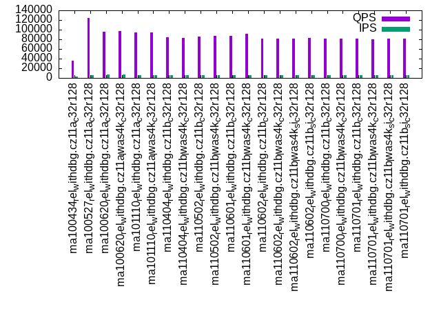

This is a report for the insert benchmark with 4000M docs and 20 client(s). It is generated by scripts (bash, awk, sed) and Tufte might not be impressed. An overview of the insert benchmark is here and a short update is here. Below, by DBMS, I mean DBMS+version.config. An example is my8020.c10b40 where my means MySQL, 8020 is version 8.0.20 and c10b40 is the name for the configuration file.
The test server has 48 AMD cores, 128G RAM and an NVMe SSD. The benchmark was run with 20 clients and there were 1 or 3 connections per client (1 for queries or inserts without rate limits, 1+1 for rate limited inserts+deletes). It uses 20 tables. It loads 200M rows per table without secondary indexes, creates 3 secondary indexes per table, then inserts 4m+1m rows per table with a delete per insert to avoid growing the table. It then does 6 read+write tests for 1800s each that do queries as fast as possible with 100,100,500,500,1000,1000 inserts/s and the same for deletes/s per client concurrent with the queries. The database is cached by InnoDB. Clients and the DBMS share one server. The per-database configs are in the per-database subdirectories here.
The tested DBMS are:
The numbers are inserts/s for l.i0, l.i1 and l.i2, indexed docs (or rows) /s for l.x and queries/s for qr100, qp100 thru qr1000, qp1000" The values are the average rate over the entire test for inserts (IPS) and queries (QPS). The range of values for IPS and QPS is split into 3 parts: bottom 25%, middle 50%, top 25%. Values in the bottom 25% have a red background, values in the top 25% have a green background and values in the middle have no color. A gray background is used for values that can be ignored because the DBMS did not sustain the target insert rate. Red backgrounds are not used when the minimum value is within 80% of the max value.
| dbms | l.i0 | l.x | l.i1 | l.i2 | qr100 | qp100 | qr500 | qp500 | qr1000 | qp1000 |
|---|---|---|---|---|---|---|---|---|---|---|
| ma100434_rel_withdbg.cz11a_c32r128 | 478297 | 1547988 | 7154 | 5826 | 61468 | 17454 | 31376 | 6696 | 35734 | 8507 |
| ma100527_rel_withdbg.cz11a_c32r128 | 333361 | 1512859 | 6164 | 7764 | 155152 | 12353 | 109834 | 4920 | 124568 | 5236 |
| ma100620_rel_withdbg.cz11a_c32r128 | 318167 | 1525553 | 6809 | 6408 | 174338 | 18107 | 88415 | 7197 | 95797 | 7128 |
| ma100620_rel_withdbg.cz11a_lwas4k_c32r128 | 314936 | 1512859 | 6795 | 6425 | 175423 | 18234 | 88092 | 7114 | 96472 | 7125 |
| ma101110_rel_withdbg.cz11a_c32r128 | 283527 | 1520334 | 6309 | 6068 | 176270 | 17711 | 87325 | 6051 | 94894 | 6074 |
| ma101110_rel_withdbg.cz11a_lwas4k_c32r128 | 283849 | 1537279 | 6381 | 6131 | 175814 | 17617 | 86186 | 6157 | 94684 | 6183 |
| ma110404_rel_withdbg.cz11b_c32r128 | 287212 | 1446655 | 6387 | 5905 | 178313 | 17557 | 67151 | 5745 | 84012 | 5724 |
| ma110404_rel_withdbg.cz11b_lwas4k_c32r128 | 286820 | 1500938 | 6402 | 5914 | 173466 | 17558 | 66006 | 5727 | 82780 | 5751 |
| ma110502_rel_withdbg.cz11b_c32r128 | 286164 | 1490868 | 6235 | 7345 | 170895 | 17565 | 79247 | 6736 | 86389 | 5080 |
| ma110502_rel_withdbg.cz11b_lwas4k_c32r128 | 283346 | 1511716 | 6321 | 7161 | 168807 | 17357 | 77934 | 6644 | 86975 | 5231 |
| ma110601_rel_withdbg.cz11b_c32r128 | 279193 | 1483680 | 6292 | 6734 | 170665 | 17472 | 79530 | 6218 | 86942 | 5149 |
| ma110601_rel_withdbg.cz11b_lwas4k_c32r128 | 276415 | 1475470 | 6283 | 7482 | 171267 | 17591 | 81350 | 5144 | 91026 | 5556 |
| ma110602_rel_withdbg.cz11b_c32r128 | 284576 | 1684920 | 6465 | 5954 | 168467 | 17747 | 65350 | 5761 | 81311 | 5763 |
| ma110602_rel_withdbg.cz11b_lwas4k_c32r128 | 282526 | 1474926 | 6386 | 5900 | 171783 | 17506 | 65326 | 5675 | 81427 | 5676 |
| ma110602_rel_withdbg.cz11b_lwas4k_si_c32r128 | 281730 | 1436266 | 6457 | 5933 | 167038 | 17535 | 65097 | 5708 | 80928 | 5711 |
| ma110602_rel_withdbg.cz11b_si_c32r128 | 284434 | 1483680 | 6433 | 5945 | 171154 | 17493 | 65424 | 5740 | 82159 | 5731 |
| ma110700_rel_withdbg.cz11b_c32r128 | 287460 | 1476015 | 6398 | 5910 | 170229 | 17755 | 65840 | 5691 | 81346 | 5680 |
| ma110700_rel_withdbg.cz11b_lwas4k_c32r128 | 283768 | 1474383 | 6406 | 5891 | 171995 | 17322 | 65350 | 5697 | 81328 | 5689 |
| ma110701_rel_withdbg.cz11b_c32r128 | 283869 | 1506591 | 6382 | 5908 | 170134 | 17496 | 65423 | 5677 | 81896 | 5691 |
| ma110701_rel_withdbg.cz11b_lwas4k_c32r128 | 281611 | 1546790 | 6384 | 5900 | 170188 | 17671 | 64720 | 5640 | 80582 | 5649 |
| ma110701_rel_withdbg.cz11b_lwas4k_si_c32r128 | 282566 | 1488095 | 6400 | 5919 | 170420 | 17639 | 65299 | 5690 | 81845 | 5690 |
| ma110701_rel_withdbg.cz11b_si_c32r128 | 283768 | 1494768 | 6365 | 5888 | 168766 | 17519 | 64145 | 5651 | 80828 | 5672 |
This table has relative throughput, throughput for the DBMS relative to the DBMS in the first line, using the absolute throughput from the previous table. Values less than 0.95 have a yellow background. Values greater than 1.05 have a blue background.
| dbms | l.i0 | l.x | l.i1 | l.i2 | qr100 | qp100 | qr500 | qp500 | qr1000 | qp1000 |
|---|---|---|---|---|---|---|---|---|---|---|
| ma100434_rel_withdbg.cz11a_c32r128 | 1.00 | 1.00 | 1.00 | 1.00 | 1.00 | 1.00 | 1.00 | 1.00 | 1.00 | 1.00 |
| ma100527_rel_withdbg.cz11a_c32r128 | 0.70 | 0.98 | 0.86 | 1.33 | 2.52 | 0.71 | 3.50 | 0.73 | 3.49 | 0.62 |
| ma100620_rel_withdbg.cz11a_c32r128 | 0.67 | 0.99 | 0.95 | 1.10 | 2.84 | 1.04 | 2.82 | 1.07 | 2.68 | 0.84 |
| ma100620_rel_withdbg.cz11a_lwas4k_c32r128 | 0.66 | 0.98 | 0.95 | 1.10 | 2.85 | 1.04 | 2.81 | 1.06 | 2.70 | 0.84 |
| ma101110_rel_withdbg.cz11a_c32r128 | 0.59 | 0.98 | 0.88 | 1.04 | 2.87 | 1.01 | 2.78 | 0.90 | 2.66 | 0.71 |
| ma101110_rel_withdbg.cz11a_lwas4k_c32r128 | 0.59 | 0.99 | 0.89 | 1.05 | 2.86 | 1.01 | 2.75 | 0.92 | 2.65 | 0.73 |
| ma110404_rel_withdbg.cz11b_c32r128 | 0.60 | 0.93 | 0.89 | 1.01 | 2.90 | 1.01 | 2.14 | 0.86 | 2.35 | 0.67 |
| ma110404_rel_withdbg.cz11b_lwas4k_c32r128 | 0.60 | 0.97 | 0.89 | 1.02 | 2.82 | 1.01 | 2.10 | 0.86 | 2.32 | 0.68 |
| ma110502_rel_withdbg.cz11b_c32r128 | 0.60 | 0.96 | 0.87 | 1.26 | 2.78 | 1.01 | 2.53 | 1.01 | 2.42 | 0.60 |
| ma110502_rel_withdbg.cz11b_lwas4k_c32r128 | 0.59 | 0.98 | 0.88 | 1.23 | 2.75 | 0.99 | 2.48 | 0.99 | 2.43 | 0.61 |
| ma110601_rel_withdbg.cz11b_c32r128 | 0.58 | 0.96 | 0.88 | 1.16 | 2.78 | 1.00 | 2.53 | 0.93 | 2.43 | 0.61 |
| ma110601_rel_withdbg.cz11b_lwas4k_c32r128 | 0.58 | 0.95 | 0.88 | 1.28 | 2.79 | 1.01 | 2.59 | 0.77 | 2.55 | 0.65 |
| ma110602_rel_withdbg.cz11b_c32r128 | 0.59 | 1.09 | 0.90 | 1.02 | 2.74 | 1.02 | 2.08 | 0.86 | 2.28 | 0.68 |
| ma110602_rel_withdbg.cz11b_lwas4k_c32r128 | 0.59 | 0.95 | 0.89 | 1.01 | 2.79 | 1.00 | 2.08 | 0.85 | 2.28 | 0.67 |
| ma110602_rel_withdbg.cz11b_lwas4k_si_c32r128 | 0.59 | 0.93 | 0.90 | 1.02 | 2.72 | 1.00 | 2.07 | 0.85 | 2.26 | 0.67 |
| ma110602_rel_withdbg.cz11b_si_c32r128 | 0.59 | 0.96 | 0.90 | 1.02 | 2.78 | 1.00 | 2.09 | 0.86 | 2.30 | 0.67 |
| ma110700_rel_withdbg.cz11b_c32r128 | 0.60 | 0.95 | 0.89 | 1.01 | 2.77 | 1.02 | 2.10 | 0.85 | 2.28 | 0.67 |
| ma110700_rel_withdbg.cz11b_lwas4k_c32r128 | 0.59 | 0.95 | 0.90 | 1.01 | 2.80 | 0.99 | 2.08 | 0.85 | 2.28 | 0.67 |
| ma110701_rel_withdbg.cz11b_c32r128 | 0.59 | 0.97 | 0.89 | 1.01 | 2.77 | 1.00 | 2.09 | 0.85 | 2.29 | 0.67 |
| ma110701_rel_withdbg.cz11b_lwas4k_c32r128 | 0.59 | 1.00 | 0.89 | 1.01 | 2.77 | 1.01 | 2.06 | 0.84 | 2.26 | 0.66 |
| ma110701_rel_withdbg.cz11b_lwas4k_si_c32r128 | 0.59 | 0.96 | 0.89 | 1.02 | 2.77 | 1.01 | 2.08 | 0.85 | 2.29 | 0.67 |
| ma110701_rel_withdbg.cz11b_si_c32r128 | 0.59 | 0.97 | 0.89 | 1.01 | 2.75 | 1.00 | 2.04 | 0.84 | 2.26 | 0.67 |
This lists the average rate of inserts/s for the tests that do inserts concurrent with queries. For such tests the query rate is listed in the table above. The read+write tests are setup so that the insert rate should match the target rate every second. Cells that are not at least 95% of the target have a red background to indicate a failure to satisfy the target.
| dbms | qr100.L1 | qp100.L2 | qr500.L3 | qp500.L4 | qr1000.L5 | qp1000.L6 |
|---|---|---|---|---|---|---|
| ma100434_rel_withdbg.cz11a_c32r128 | 1976 | 1976 | 2860 | 5425 | 2452 | 5491 |
| ma100527_rel_withdbg.cz11a_c32r128 | 1976 | 1976 | 5476 | 4449 | 6169 | 3944 |
| ma100620_rel_withdbg.cz11a_c32r128 | 1976 | 1976 | 9142 | 5414 | 6651 | 5494 |
| ma100620_rel_withdbg.cz11a_lwas4k_c32r128 | 1976 | 1976 | 9054 | 5351 | 6657 | 5509 |
| ma101110_rel_withdbg.cz11a_c32r128 | 1976 | 1976 | 7860 | 4323 | 6169 | 4431 |
| ma101110_rel_withdbg.cz11a_lwas4k_c32r128 | 1977 | 1976 | 7940 | 4427 | 6162 | 4549 |
| ma110404_rel_withdbg.cz11b_c32r128 | 1976 | 1976 | 7696 | 4164 | 6196 | 4234 |
| ma110404_rel_withdbg.cz11b_lwas4k_c32r128 | 1976 | 1976 | 7624 | 4175 | 6164 | 4258 |
| ma110502_rel_withdbg.cz11b_c32r128 | 1976 | 1976 | 8625 | 3788 | 6300 | 4264 |
| ma110502_rel_withdbg.cz11b_lwas4k_c32r128 | 1976 | 1976 | 8223 | 3892 | 6309 | 4397 |
| ma110601_rel_withdbg.cz11b_c32r128 | 1976 | 1976 | 8021 | 3962 | 6263 | 4226 |
| ma110601_rel_withdbg.cz11b_lwas4k_c32r128 | 1977 | 1976 | 8160 | 4226 | 5912 | 4208 |
| ma110602_rel_withdbg.cz11b_c32r128 | 1976 | 1976 | 7789 | 4226 | 6198 | 4303 |
| ma110602_rel_withdbg.cz11b_lwas4k_c32r128 | 1976 | 1976 | 7699 | 4153 | 6180 | 4233 |
| ma110602_rel_withdbg.cz11b_lwas4k_si_c32r128 | 1976 | 1976 | 7715 | 4191 | 6195 | 4265 |
| ma110602_rel_withdbg.cz11b_si_c32r128 | 1976 | 1976 | 7772 | 4206 | 6206 | 4281 |
| ma110700_rel_withdbg.cz11b_c32r128 | 1976 | 1977 | 7676 | 4153 | 6184 | 4226 |
| ma110700_rel_withdbg.cz11b_lwas4k_c32r128 | 1976 | 1976 | 7669 | 4167 | 6139 | 4247 |
| ma110701_rel_withdbg.cz11b_c32r128 | 1976 | 1976 | 7673 | 4174 | 6195 | 4246 |
| ma110701_rel_withdbg.cz11b_lwas4k_c32r128 | 1977 | 1976 | 7673 | 4124 | 6180 | 4194 |
| ma110701_rel_withdbg.cz11b_lwas4k_si_c32r128 | 1976 | 1976 | 7732 | 4160 | 6213 | 4243 |
| ma110701_rel_withdbg.cz11b_si_c32r128 | 1976 | 1976 | 7621 | 4158 | 6162 | 4223 |
| target | 2000 | 2000 | 10000 | 10000 | 20000 | 20000 |
l.i0: load without secondary indexes. Graphs for performance per 1-second interval are here.
Average throughput:
Insert response time histogram: each cell has the percentage of responses that take <= the time in the header and max is the max response time in seconds. For the max column values in the top 25% of the range have a red background and in the bottom 25% of the range have a green background. The red background is not used when the min value is within 80% of the max value.
| dbms | 256us | 1ms | 4ms | 16ms | 64ms | 256ms | 1s | 4s | 16s | gt | max |
|---|---|---|---|---|---|---|---|---|---|---|---|
| ma100434_rel_withdbg.cz11a_c32r128 | 0.078 | 99.170 | 0.423 | 0.015 | 0.115 | 0.199 | 0.615 | ||||
| ma100527_rel_withdbg.cz11a_c32r128 | 0.067 | 2.865 | 96.739 | 0.129 | 0.101 | 0.098 | 0.617 | ||||
| ma100620_rel_withdbg.cz11a_c32r128 | 0.077 | 0.469 | 97.027 | 2.326 | 0.094 | 0.007 | 0.654 | ||||
| ma100620_rel_withdbg.cz11a_lwas4k_c32r128 | 0.074 | 0.356 | 97.114 | 2.355 | 0.095 | 0.007 | 0.660 | ||||
| ma101110_rel_withdbg.cz11a_c32r128 | 0.064 | 0.257 | 96.908 | 2.666 | 0.097 | 0.007 | 0.698 | ||||
| ma101110_rel_withdbg.cz11a_lwas4k_c32r128 | 0.075 | 0.236 | 96.765 | 2.820 | 0.096 | 0.008 | 0.648 | ||||
| ma110404_rel_withdbg.cz11b_c32r128 | 0.071 | 0.244 | 97.080 | 2.503 | 0.095 | 0.006 | 0.649 | ||||
| ma110404_rel_withdbg.cz11b_lwas4k_c32r128 | 0.075 | 0.270 | 96.834 | 2.717 | 0.097 | 0.007 | 0.655 | ||||
| ma110502_rel_withdbg.cz11b_c32r128 | 0.068 | 0.260 | 99.430 | 0.047 | 0.107 | 0.088 | 0.670 | ||||
| ma110502_rel_withdbg.cz11b_lwas4k_c32r128 | 0.106 | 0.283 | 99.370 | 0.040 | 0.106 | 0.094 | 0.664 | ||||
| ma110601_rel_withdbg.cz11b_c32r128 | 0.062 | 0.243 | 99.447 | 0.045 | 0.109 | 0.094 | 0.658 | ||||
| ma110601_rel_withdbg.cz11b_lwas4k_c32r128 | 0.109 | 0.238 | 99.405 | 0.043 | 0.108 | 0.097 | 0.668 | ||||
| ma110602_rel_withdbg.cz11b_c32r128 | 0.061 | 0.236 | 96.930 | 2.670 | 0.096 | 0.008 | 0.658 | ||||
| ma110602_rel_withdbg.cz11b_lwas4k_c32r128 | 0.072 | 0.294 | 96.667 | 2.865 | 0.096 | 0.007 | 0.653 | ||||
| ma110602_rel_withdbg.cz11b_lwas4k_si_c32r128 | 0.062 | 0.271 | 96.699 | 2.866 | 0.095 | 0.007 | 0.702 | ||||
| ma110602_rel_withdbg.cz11b_si_c32r128 | 0.061 | 0.270 | 96.930 | 2.636 | 0.096 | 0.007 | 0.651 | ||||
| ma110700_rel_withdbg.cz11b_c32r128 | 0.064 | 0.244 | 97.052 | 2.536 | 0.098 | 0.006 | 0.680 | ||||
| ma110700_rel_withdbg.cz11b_lwas4k_c32r128 | 0.072 | 0.251 | 96.843 | 2.731 | 0.096 | 0.007 | 0.646 | ||||
| ma110701_rel_withdbg.cz11b_c32r128 | 0.063 | 0.204 | 97.041 | 2.590 | 0.095 | 0.006 | 0.661 | ||||
| ma110701_rel_withdbg.cz11b_lwas4k_c32r128 | 0.066 | 0.247 | 96.798 | 2.785 | 0.097 | 0.007 | 0.648 | ||||
| ma110701_rel_withdbg.cz11b_lwas4k_si_c32r128 | 0.066 | 0.248 | 96.780 | 2.800 | 0.098 | 0.007 | 0.648 | ||||
| ma110701_rel_withdbg.cz11b_si_c32r128 | 0.063 | 0.239 | 97.051 | 2.545 | 0.096 | 0.006 | 0.649 |
Performance metrics for the DBMS listed above. Some are normalized by throughput, others are not. Legend for results is here.
ips qps rps rmbps wps wmbps rpq rkbpq wpi wkbpi csps cpups cspq cpupq dbgb1 dbgb2 rss maxop p50 p99 tag 478297 0 3 0.0 3572.0 189.4 0.000 0.000 0.007 0.406 67915 47.9 0.142 48 263.2 365.1 NA 0.615 29967 200 ma100434_rel_withdbg.cz11a_c32r128 333361 0 1 0.0 4756.6 158.6 0.000 0.000 0.014 0.487 883219 49.8 2.649 72 263.2 365.2 101.9 0.617 18480 200 ma100527_rel_withdbg.cz11a_c32r128 318167 0 1 0.0 2240.7 93.4 0.000 0.000 0.007 0.301 862082 50.9 2.710 77 263.2 365.1 101.2 0.654 15888 11787 ma100620_rel_withdbg.cz11a_c32r128 314936 0 1 0.0 2215.7 92.4 0.000 0.000 0.007 0.300 914943 50.7 2.905 77 263.2 365.1 101.2 0.660 15783 12187 ma100620_rel_withdbg.cz11a_lwas4k_c32r128 283527 0 2651 10.4 2024.4 85.6 0.009 0.037 0.007 0.309 252946 51.0 0.892 86 263.2 365.1 101.2 0.698 14284 11287 ma101110_rel_withdbg.cz11a_c32r128 283849 0 1 0.0 2027.2 85.7 0.000 0.000 0.007 0.309 253186 51.2 0.892 87 263.2 365.1 101.2 0.648 14285 10788 ma101110_rel_withdbg.cz11a_lwas4k_c32r128 287212 0 2676 10.5 2059.6 86.7 0.009 0.037 0.007 0.309 263239 51.1 0.917 85 263.2 365.1 101.2 0.649 14385 12091 ma110404_rel_withdbg.cz11b_c32r128 286820 0 2 0.0 2052.1 86.6 0.000 0.000 0.007 0.309 258934 51.3 0.903 86 263.2 365.1 101.2 0.655 14385 11388 ma110404_rel_withdbg.cz11b_lwas4k_c32r128 286164 0 2634 10.3 2039.4 86.2 0.009 0.037 0.007 0.308 257374 50.5 0.899 85 263.2 365.2 101.4 0.670 14889 200 ma110502_rel_withdbg.cz11b_c32r128 283346 0 1 0.0 2019.6 85.3 0.000 0.000 0.007 0.308 249684 51.0 0.881 86 263.2 365.2 101.4 0.664 14884 200 ma110502_rel_withdbg.cz11b_lwas4k_c32r128 279193 0 2622 10.3 1993.5 84.2 0.009 0.038 0.007 0.309 266151 50.4 0.953 87 263.2 365.2 101.4 0.658 14584 200 ma110601_rel_withdbg.cz11b_c32r128 276415 0 2 0.0 1970.7 83.3 0.000 0.000 0.007 0.309 257210 50.9 0.931 88 263.2 365.1 101.4 0.668 14484 200 ma110601_rel_withdbg.cz11b_lwas4k_c32r128 284576 0 2663 10.4 2036.6 85.9 0.009 0.037 0.007 0.309 263710 50.9 0.927 86 263.2 365.1 101.3 0.658 14285 10688 ma110602_rel_withdbg.cz11b_c32r128 282526 0 1 0.0 2019.7 85.3 0.000 0.000 0.007 0.309 259814 51.1 0.920 87 263.2 365.1 101.3 0.653 14190 11487 ma110602_rel_withdbg.cz11b_lwas4k_c32r128 281730 0 2 0.0 2014.0 85.0 0.000 0.000 0.007 0.309 250121 51.2 0.888 87 263.2 365.1 101.3 0.702 14185 11487 ma110602_rel_withdbg.cz11b_lwas4k_si_c32r128 284434 0 2653 10.4 2032.2 85.9 0.009 0.037 0.007 0.309 252126 51.0 0.886 86 263.2 365.1 101.3 0.651 14289 11088 ma110602_rel_withdbg.cz11b_si_c32r128 287460 0 2658 10.4 2052.1 86.8 0.009 0.037 0.007 0.309 271432 50.9 0.944 85 263.2 365.1 101.3 0.680 14389 11893 ma110700_rel_withdbg.cz11b_c32r128 283768 0 1 0.0 2030.8 85.7 0.000 0.000 0.007 0.309 252527 51.3 0.890 87 263.2 365.1 101.3 0.646 14284 11088 ma110700_rel_withdbg.cz11b_lwas4k_c32r128 283869 0 2648 10.4 2027.7 85.7 0.009 0.037 0.007 0.309 258021 51.0 0.909 86 263.2 365.1 101.3 0.661 14189 11787 ma110701_rel_withdbg.cz11b_c32r128 281611 0 3 0.1 2016.7 85.0 0.000 0.000 0.007 0.309 251514 51.2 0.893 87 263.2 365.1 101.3 0.648 14184 10888 ma110701_rel_withdbg.cz11b_lwas4k_c32r128 282566 0 1 0.0 2018.4 85.3 0.000 0.000 0.007 0.309 253744 51.1 0.898 87 263.2 365.1 101.3 0.648 14185 11088 ma110701_rel_withdbg.cz11b_lwas4k_si_c32r128 283768 0 2660 10.4 2027.2 85.7 0.009 0.038 0.007 0.309 268084 50.9 0.945 86 263.2 365.1 101.3 0.649 14285 11987 ma110701_rel_withdbg.cz11b_si_c32r128
l.x: create secondary indexes.
Average throughput:
Performance metrics for the DBMS listed above. Some are normalized by throughput, others are not. Legend for results is here.
ips qps rps rmbps wps wmbps rpq rkbpq wpi wkbpi csps cpups cspq cpupq dbgb1 dbgb2 rss maxop p50 p99 tag 1547988 0 15382 1354.3 19037.9 1616.7 0.010 0.896 0.012 1.069 65068 20.8 0.042 6 599.6 701.5 NA 0.005 NA NA ma100434_rel_withdbg.cz11a_c32r128 1512859 0 14924 1316.3 17961.6 1496.7 0.010 0.891 0.012 1.013 86471 23.8 0.057 8 599.6 701.6 101.1 0.002 NA NA ma100527_rel_withdbg.cz11a_c32r128 1525553 0 16627 1358.6 18186.9 1514.3 0.011 0.912 0.012 1.016 90405 23.2 0.059 7 557.5 659.4 101.6 0.002 NA NA ma100620_rel_withdbg.cz11a_c32r128 1512859 0 16401 1343.0 18061.3 1500.3 0.011 0.909 0.012 1.016 93375 23.3 0.062 7 557.5 659.4 101.7 0.004 NA NA ma100620_rel_withdbg.cz11a_lwas4k_c32r128 1520334 0 16652 1357.6 17811.1 1500.1 0.011 0.914 0.012 1.010 74404 24.1 0.049 8 557.5 659.4 101.6 0.006 NA NA ma101110_rel_withdbg.cz11a_c32r128 1537279 0 16720 1369.7 18085.6 1518.6 0.011 0.912 0.012 1.012 76684 24.2 0.050 8 557.5 659.4 101.7 0.006 NA NA ma101110_rel_withdbg.cz11a_lwas4k_c32r128 1446655 0 15760 1288.4 18724.8 1437.0 0.011 0.912 0.013 1.017 87954 23.0 0.061 8 557.5 659.4 101.6 0.008 NA NA ma110404_rel_withdbg.cz11b_c32r128 1500938 0 16281 1334.3 19301.8 1488.3 0.011 0.910 0.013 1.015 87248 23.8 0.058 8 557.5 659.4 101.7 0.009 NA NA ma110404_rel_withdbg.cz11b_lwas4k_c32r128 1490868 0 16193 1323.4 18971.8 1477.3 0.011 0.909 0.013 1.015 90351 24.0 0.061 8 557.5 659.5 101.7 0.007 NA NA ma110502_rel_withdbg.cz11b_c32r128 1511716 0 16404 1343.7 19420.0 1499.4 0.011 0.910 0.013 1.016 85607 23.8 0.057 8 557.5 659.5 101.7 0.002 NA NA ma110502_rel_withdbg.cz11b_lwas4k_c32r128 1483680 0 16137 1322.8 18744.5 1470.9 0.011 0.913 0.013 1.015 85668 23.6 0.058 8 557.5 659.5 101.7 0.008 NA NA ma110601_rel_withdbg.cz11b_c32r128 1475470 0 16003 1310.4 18221.2 1460.9 0.011 0.909 0.012 1.014 78611 23.8 0.053 8 557.5 659.4 101.8 0.008 NA NA ma110601_rel_withdbg.cz11b_lwas4k_c32r128 1684920 0 18345 1505.6 20881.3 1670.1 0.011 0.915 0.012 1.015 84645 24.4 0.050 7 557.5 659.4 101.7 0.006 NA NA ma110602_rel_withdbg.cz11b_c32r128 1474926 0 16021 1313.0 19773.3 1469.1 0.011 0.912 0.013 1.020 93225 23.0 0.063 7 557.5 659.4 101.6 0.002 NA NA ma110602_rel_withdbg.cz11b_lwas4k_c32r128 1436266 0 15538 1270.8 18554.5 1432.3 0.011 0.906 0.013 1.021 97810 23.7 0.068 8 557.5 659.4 101.7 0.011 NA NA ma110602_rel_withdbg.cz11b_lwas4k_si_c32r128 1483680 0 16188 1322.3 18767.7 1470.7 0.011 0.913 0.013 1.015 84713 23.6 0.057 8 557.5 659.4 101.7 0.007 NA NA ma110602_rel_withdbg.cz11b_si_c32r128 1476015 0 16085 1313.0 19663.1 1469.8 0.011 0.911 0.013 1.020 94871 23.2 0.064 8 557.5 659.4 101.7 0.006 NA NA ma110700_rel_withdbg.cz11b_c32r128 1474383 0 16004 1309.4 18839.3 1462.6 0.011 0.909 0.013 1.016 87928 23.7 0.060 8 557.5 659.4 101.7 0.005 NA NA ma110700_rel_withdbg.cz11b_lwas4k_c32r128 1506591 0 16435 1344.1 19243.3 1493.9 0.011 0.914 0.013 1.015 89426 23.9 0.059 8 557.5 659.4 101.7 0.010 NA NA ma110701_rel_withdbg.cz11b_c32r128 1546790 0 16706 1363.8 19216.4 1532.5 0.011 0.903 0.012 1.015 78872 25.3 0.051 8 557.5 659.4 101.6 0.011 NA NA ma110701_rel_withdbg.cz11b_lwas4k_c32r128 1488095 0 16195 1324.4 19827.2 1480.8 0.011 0.911 0.013 1.019 92492 23.2 0.062 7 557.5 659.4 101.7 0.007 NA NA ma110701_rel_withdbg.cz11b_lwas4k_si_c32r128 1494768 0 16278 1331.0 19856.4 1488.5 0.011 0.912 0.013 1.020 93951 23.6 0.063 8 557.5 659.4 101.7 0.005 NA NA ma110701_rel_withdbg.cz11b_si_c32r128
l.i1: continue load after secondary indexes created with 50 inserts per transaction. Graphs for performance per 1-second interval are here.
Average throughput:
Insert response time histogram: each cell has the percentage of responses that take <= the time in the header and max is the max response time in seconds. For the max column values in the top 25% of the range have a red background and in the bottom 25% of the range have a green background. The red background is not used when the min value is within 80% of the max value.
| dbms | 256us | 1ms | 4ms | 16ms | 64ms | 256ms | 1s | 4s | 16s | gt | max |
|---|---|---|---|---|---|---|---|---|---|---|---|
| ma100434_rel_withdbg.cz11a_c32r128 | 0.011 | 25.749 | 46.168 | 28.072 | 0.613 | ||||||
| ma100527_rel_withdbg.cz11a_c32r128 | 0.068 | 10.897 | 63.767 | 25.268 | 0.851 | ||||||
| ma100620_rel_withdbg.cz11a_c32r128 | 0.038 | 7.790 | 72.607 | 19.550 | 0.008 | 0.003 | 0.005 | 85.647 | |||
| ma100620_rel_withdbg.cz11a_lwas4k_c32r128 | 0.023 | 8.089 | 72.450 | 19.419 | 0.009 | 0.004 | 0.006 | 84.931 | |||
| ma101110_rel_withdbg.cz11a_c32r128 | 0.006 | 3.228 | 77.036 | 19.710 | 0.007 | 0.010 | 0.003 | 84.975 | |||
| ma101110_rel_withdbg.cz11a_lwas4k_c32r128 | 0.014 | 3.908 | 76.292 | 19.773 | 0.007 | 0.003 | 0.004 | 105.622 | |||
| ma110404_rel_withdbg.cz11b_c32r128 | 0.014 | 3.723 | 76.681 | 19.536 | 0.033 | 0.009 | 0.004 | 106.881 | |||
| ma110404_rel_withdbg.cz11b_lwas4k_c32r128 | 0.011 | 3.920 | 76.343 | 19.680 | 0.035 | 0.006 | 0.004 | 104.869 | |||
| ma110502_rel_withdbg.cz11b_c32r128 | 1.826 | 15.334 | 57.771 | 25.065 | 0.001 | 0.001 | 0.003 | 54.515 | |||
| ma110502_rel_withdbg.cz11b_lwas4k_c32r128 | 2.071 | 15.634 | 56.981 | 25.305 | 0.005 | 0.001 | 0.003 | 69.379 | |||
| ma110601_rel_withdbg.cz11b_c32r128 | 2.031 | 16.446 | 56.950 | 24.569 | 0.001 | 0.001 | 0.003 | 47.835 | |||
| ma110601_rel_withdbg.cz11b_lwas4k_c32r128 | 2.006 | 15.267 | 57.348 | 25.375 | 0.002 | nonzero | 0.001 | 16.703 | |||
| ma110602_rel_withdbg.cz11b_c32r128 | 0.004 | 4.192 | 76.269 | 19.511 | 0.015 | 0.004 | 0.006 | 107.381 | |||
| ma110602_rel_withdbg.cz11b_lwas4k_c32r128 | 0.015 | 3.686 | 76.716 | 19.540 | 0.034 | 0.003 | 0.006 | 107.558 | |||
| ma110602_rel_withdbg.cz11b_lwas4k_si_c32r128 | 0.076 | 5.144 | 75.148 | 19.595 | 0.025 | 0.009 | 0.003 | 120.136 | |||
| ma110602_rel_withdbg.cz11b_si_c32r128 | 0.008 | 4.011 | 76.389 | 19.560 | 0.022 | 0.005 | 0.005 | 105.503 | |||
| ma110700_rel_withdbg.cz11b_c32r128 | 0.020 | 3.770 | 76.680 | 19.483 | 0.036 | 0.005 | 0.006 | 107.288 | |||
| ma110700_rel_withdbg.cz11b_lwas4k_c32r128 | 0.014 | 3.913 | 76.455 | 19.582 | 0.024 | 0.007 | 0.004 | 106.303 | |||
| ma110701_rel_withdbg.cz11b_c32r128 | 0.028 | 3.712 | 76.592 | 19.620 | 0.036 | 0.007 | 0.006 | 107.009 | |||
| ma110701_rel_withdbg.cz11b_lwas4k_c32r128 | 0.092 | 4.353 | 76.257 | 19.234 | 0.049 | 0.010 | 0.005 | 107.719 | |||
| ma110701_rel_withdbg.cz11b_lwas4k_si_c32r128 | 0.018 | 3.672 | 76.682 | 19.591 | 0.028 | 0.003 | 0.005 | 107.165 | |||
| ma110701_rel_withdbg.cz11b_si_c32r128 | 0.016 | 3.506 | 76.883 | 19.541 | 0.040 | 0.010 | 0.004 | 108.076 |
Delete response time histogram: each cell has the percentage of responses that take <= the time in the header and max is the max response time in seconds. For the max column values in the top 25% of the range have a red background and in the bottom 25% of the range have a green background. The red background is not used when the min value is within 80% of the max value.
| dbms | 256us | 1ms | 4ms | 16ms | 64ms | 256ms | 1s | 4s | 16s | gt | max |
|---|---|---|---|---|---|---|---|---|---|---|---|
| ma100434_rel_withdbg.cz11a_c32r128 | 0.203 | 66.794 | 5.022 | 27.980 | 0.436 | ||||||
| ma100527_rel_withdbg.cz11a_c32r128 | 0.157 | 65.140 | 12.492 | 22.211 | 0.874 | ||||||
| ma100620_rel_withdbg.cz11a_c32r128 | 0.103 | 43.940 | 36.729 | 19.220 | 0.005 | 0.002 | 0.002 | 68.836 | |||
| ma100620_rel_withdbg.cz11a_lwas4k_c32r128 | 0.069 | 44.021 | 36.773 | 19.126 | 0.006 | 0.002 | 0.002 | 49.152 | |||
| ma101110_rel_withdbg.cz11a_c32r128 | 0.221 | 27.726 | 52.765 | 19.277 | 0.004 | 0.006 | 0.001 | 84.168 | |||
| ma101110_rel_withdbg.cz11a_lwas4k_c32r128 | 0.363 | 30.705 | 49.554 | 19.370 | 0.005 | 0.002 | 0.002 | 105.536 | |||
| ma110404_rel_withdbg.cz11b_c32r128 | 0.265 | 20.299 | 60.373 | 19.027 | 0.028 | 0.004 | 0.003 | 104.485 | |||
| ma110404_rel_withdbg.cz11b_lwas4k_c32r128 | 0.310 | 20.796 | 59.678 | 19.178 | 0.031 | 0.004 | 0.003 | 77.969 | |||
| ma110502_rel_withdbg.cz11b_c32r128 | 9.819 | 19.017 | 47.124 | 24.036 | 0.001 | 0.001 | 0.002 | 44.788 | |||
| ma110502_rel_withdbg.cz11b_lwas4k_c32r128 | 10.614 | 19.313 | 45.773 | 24.296 | 0.002 | nonzero | 0.001 | 69.329 | |||
| ma110601_rel_withdbg.cz11b_c32r128 | 10.668 | 19.186 | 46.685 | 23.458 | 0.001 | 0.001 | 0.001 | 46.325 | |||
| ma110601_rel_withdbg.cz11b_lwas4k_c32r128 | 10.393 | 18.885 | 46.410 | 24.308 | 0.002 | nonzero | 0.001 | 16.542 | |||
| ma110602_rel_withdbg.cz11b_c32r128 | 0.327 | 21.575 | 59.054 | 19.029 | 0.010 | 0.003 | 0.003 | 94.397 | |||
| ma110602_rel_withdbg.cz11b_lwas4k_c32r128 | 0.279 | 20.189 | 60.476 | 19.026 | 0.026 | 0.002 | 0.003 | 107.045 | |||
| ma110602_rel_withdbg.cz11b_lwas4k_si_c32r128 | 0.747 | 21.389 | 58.712 | 19.124 | 0.021 | 0.005 | 0.002 | 105.148 | |||
| ma110602_rel_withdbg.cz11b_si_c32r128 | 0.296 | 21.211 | 59.421 | 19.050 | 0.017 | 0.002 | 0.003 | 73.715 | |||
| ma110700_rel_withdbg.cz11b_c32r128 | 0.262 | 20.583 | 60.170 | 18.951 | 0.028 | 0.003 | 0.003 | 106.059 | |||
| ma110700_rel_withdbg.cz11b_lwas4k_c32r128 | 0.317 | 20.682 | 59.900 | 19.077 | 0.017 | 0.004 | 0.002 | 104.466 | |||
| ma110701_rel_withdbg.cz11b_c32r128 | 0.308 | 20.666 | 59.880 | 19.110 | 0.029 | 0.004 | 0.003 | 106.929 | |||
| ma110701_rel_withdbg.cz11b_lwas4k_c32r128 | 0.841 | 20.653 | 59.715 | 18.736 | 0.044 | 0.007 | 0.003 | 102.934 | |||
| ma110701_rel_withdbg.cz11b_lwas4k_si_c32r128 | 0.302 | 20.443 | 60.143 | 19.082 | 0.025 | 0.003 | 0.003 | 106.213 | |||
| ma110701_rel_withdbg.cz11b_si_c32r128 | 0.267 | 19.912 | 60.780 | 19.001 | 0.034 | 0.004 | 0.002 | 105.667 |
Performance metrics for the DBMS listed above. Some are normalized by throughput, others are not. Legend for results is here.
ips qps rps rmbps wps wmbps rpq rkbpq wpi wkbpi csps cpups cspq cpupq dbgb1 dbgb2 rss maxop p50 p99 tag 7154 0 43260 675.9 72884.4 1519.1 6.047 96.745 10.187 217.424 492214 17.9 68.800 1201 797.2 899.5 NA 0.613 200 150 ma100434_rel_withdbg.cz11a_c32r128 6164 0 32264 504.1 32766.4 894.8 5.234 83.740 5.316 148.637 509258 9.8 82.616 763 780.3 883.2 102.3 0.851 300 100 ma100527_rel_withdbg.cz11a_c32r128 6809 0 40707 636.0 38618.6 1057.8 5.978 95.653 5.672 159.081 838390 16.4 123.130 1156 731.2 833.4 100.4 85.647 350 0 ma100620_rel_withdbg.cz11a_c32r128 6795 0 40598 634.3 38886.2 1065.0 5.975 95.598 5.723 160.510 834152 16.7 122.767 1180 731.1 833.3 100.4 84.931 350 0 ma100620_rel_withdbg.cz11a_lwas4k_c32r128 6309 0 38040 590.2 35614.7 974.1 6.029 95.796 5.645 158.106 892157 14.4 141.408 1096 730.9 833.2 100.4 84.975 349 0 ma101110_rel_withdbg.cz11a_c32r128 6381 0 38100 595.3 36193.0 993.3 5.971 95.530 5.672 159.399 886881 15.0 138.986 1128 730.9 833.2 100.4 105.622 350 0 ma101110_rel_withdbg.cz11a_lwas4k_c32r128 6387 0 38995 605.1 37000.7 983.7 6.106 97.018 5.793 157.714 964997 14.6 151.095 1097 730.6 832.9 100.5 106.881 350 0 ma110404_rel_withdbg.cz11b_c32r128 6402 0 38733 605.2 36988.5 986.5 6.051 96.806 5.778 157.800 963881 14.4 150.571 1080 730.7 832.9 100.3 104.869 350 0 ma110404_rel_withdbg.cz11b_lwas4k_c32r128 6235 0 37820 586.8 37127.9 994.4 6.066 96.368 5.954 163.309 877862 13.8 140.789 1062 725.2 827.8 100.5 54.515 300 100 ma110502_rel_withdbg.cz11b_c32r128 6321 0 38191 596.7 37465.7 1009.8 6.042 96.665 5.927 163.577 873504 13.6 138.189 1033 723.6 826.3 100.6 69.379 300 100 ma110502_rel_withdbg.cz11b_lwas4k_c32r128 6292 0 37895 588.0 37017.5 994.1 6.023 95.685 5.883 161.781 882796 13.8 140.300 1053 724.4 827.0 100.5 47.835 300 100 ma110601_rel_withdbg.cz11b_c32r128 6283 0 38113 595.5 37471.5 1006.3 6.066 97.049 5.964 164.002 874169 13.8 139.126 1054 725.5 828.1 100.6 16.703 300 150 ma110601_rel_withdbg.cz11b_lwas4k_c32r128 6465 0 39465 612.4 37406.2 997.4 6.105 97.000 5.786 157.982 969522 14.2 149.974 1054 730.6 832.9 101.7 107.381 350 0 ma110602_rel_withdbg.cz11b_c32r128 6386 0 38652 603.9 36984.5 983.6 6.053 96.849 5.792 157.733 969085 14.1 151.761 1060 730.6 832.9 100.3 107.558 350 0 ma110602_rel_withdbg.cz11b_lwas4k_c32r128 6457 0 39031 609.9 37207.0 995.6 6.045 96.720 5.762 157.889 956756 14.1 148.178 1048 730.2 832.5 100.4 120.136 350 0 ma110602_rel_withdbg.cz11b_lwas4k_si_c32r128 6433 0 39280 609.6 37217.4 992.4 6.106 97.022 5.785 157.959 966449 14.4 150.224 1074 730.6 832.9 100.4 105.503 350 0 ma110602_rel_withdbg.cz11b_si_c32r128 6398 0 39079 606.5 37049.3 985.4 6.108 97.057 5.790 157.698 970592 14.4 151.693 1080 730.6 832.9 100.4 107.288 350 0 ma110700_rel_withdbg.cz11b_c32r128 6406 0 38763 605.6 37016.6 987.3 6.051 96.811 5.778 157.824 964960 14.8 150.631 1109 730.7 832.9 100.4 106.303 350 0 ma110700_rel_withdbg.cz11b_lwas4k_c32r128 6382 0 38982 604.9 37011.6 983.9 6.109 97.063 5.800 157.885 959613 14.9 150.372 1121 730.5 832.8 100.3 107.009 350 0 ma110701_rel_withdbg.cz11b_c32r128 6384 0 38579 602.8 36986.5 985.0 6.043 96.686 5.794 157.995 968280 14.2 151.671 1068 730.3 832.5 100.4 107.719 350 0 ma110701_rel_withdbg.cz11b_lwas4k_c32r128 6400 0 38741 605.3 37074.9 986.1 6.053 96.849 5.793 157.781 967112 14.4 151.111 1080 730.7 833.0 100.3 107.165 350 0 ma110701_rel_withdbg.cz11b_lwas4k_si_c32r128 6365 0 38868 603.1 36939.6 980.3 6.107 97.034 5.804 157.720 968022 14.4 152.090 1086 730.6 832.9 100.4 108.076 350 0 ma110701_rel_withdbg.cz11b_si_c32r128
l.i2: continue load after secondary indexes created with 5 inserts per transaction. Graphs for performance per 1-second interval are here.
Average throughput:
Insert response time histogram: each cell has the percentage of responses that take <= the time in the header and max is the max response time in seconds. For the max column values in the top 25% of the range have a red background and in the bottom 25% of the range have a green background. The red background is not used when the min value is within 80% of the max value.
| dbms | 256us | 1ms | 4ms | 16ms | 64ms | 256ms | 1s | 4s | 16s | gt | max |
|---|---|---|---|---|---|---|---|---|---|---|---|
| ma100434_rel_withdbg.cz11a_c32r128 | nonzero | 0.050 | 13.359 | 47.687 | 38.491 | 0.414 | 0.080 | ||||
| ma100527_rel_withdbg.cz11a_c32r128 | nonzero | 0.038 | 11.647 | 64.542 | 23.430 | 0.343 | 0.001 | 0.960 | |||
| ma100620_rel_withdbg.cz11a_c32r128 | nonzero | 0.041 | 13.249 | 53.218 | 33.190 | 0.288 | 0.012 | nonzero | 2.002 | ||
| ma100620_rel_withdbg.cz11a_lwas4k_c32r128 | 0.042 | 13.497 | 53.122 | 33.030 | 0.296 | 0.013 | nonzero | 1.820 | |||
| ma101110_rel_withdbg.cz11a_c32r128 | 0.011 | 9.488 | 54.205 | 35.975 | 0.311 | 0.010 | nonzero | 1.805 | |||
| ma101110_rel_withdbg.cz11a_lwas4k_c32r128 | 0.050 | 11.216 | 52.243 | 36.192 | 0.290 | 0.008 | nonzero | 1.721 | |||
| ma110404_rel_withdbg.cz11b_c32r128 | nonzero | 0.029 | 15.464 | 44.030 | 40.085 | 0.379 | 0.012 | nonzero | 1.159 | ||
| ma110404_rel_withdbg.cz11b_lwas4k_c32r128 | 0.087 | 16.603 | 42.354 | 40.560 | 0.387 | 0.009 | nonzero | 1.251 | |||
| ma110502_rel_withdbg.cz11b_c32r128 | nonzero | 0.035 | 16.330 | 59.058 | 24.331 | 0.236 | 0.009 | 0.001 | 3.341 | ||
| ma110502_rel_withdbg.cz11b_lwas4k_c32r128 | 0.081 | 17.150 | 57.179 | 24.986 | 0.594 | 0.008 | 0.001 | 4.171 | |||
| ma110601_rel_withdbg.cz11b_c32r128 | 0.033 | 15.187 | 59.023 | 23.483 | 2.263 | 0.010 | 0.001 | 2.979 | |||
| ma110601_rel_withdbg.cz11b_lwas4k_c32r128 | 0.076 | 18.145 | 57.858 | 23.658 | 0.255 | 0.009 | 0.001 | 2.054 | |||
| ma110602_rel_withdbg.cz11b_c32r128 | nonzero | 0.027 | 15.579 | 44.432 | 39.584 | 0.369 | 0.008 | nonzero | 1.741 | ||
| ma110602_rel_withdbg.cz11b_lwas4k_c32r128 | 0.081 | 16.367 | 42.515 | 40.636 | 0.390 | 0.010 | nonzero | 1.517 | |||
| ma110602_rel_withdbg.cz11b_lwas4k_si_c32r128 | 0.078 | 16.877 | 42.207 | 40.456 | 0.374 | 0.008 | nonzero | 1.725 | |||
| ma110602_rel_withdbg.cz11b_si_c32r128 | 0.027 | 15.689 | 44.139 | 39.771 | 0.366 | 0.008 | nonzero | 1.403 | |||
| ma110700_rel_withdbg.cz11b_c32r128 | 0.030 | 15.452 | 44.113 | 39.994 | 0.399 | 0.012 | nonzero | 1.355 | |||
| ma110700_rel_withdbg.cz11b_lwas4k_c32r128 | nonzero | 0.080 | 16.547 | 42.148 | 40.833 | 0.382 | 0.010 | nonzero | 1.496 | ||
| ma110701_rel_withdbg.cz11b_c32r128 | 0.027 | 15.241 | 44.312 | 40.017 | 0.393 | 0.011 | nonzero | 1.390 | |||
| ma110701_rel_withdbg.cz11b_lwas4k_c32r128 | 0.089 | 16.392 | 42.434 | 40.693 | 0.380 | 0.012 | nonzero | 1.837 | |||
| ma110701_rel_withdbg.cz11b_lwas4k_si_c32r128 | 0.082 | 16.555 | 42.447 | 40.511 | 0.394 | 0.011 | nonzero | 1.669 | |||
| ma110701_rel_withdbg.cz11b_si_c32r128 | 0.028 | 15.353 | 43.973 | 40.247 | 0.387 | 0.011 | nonzero | 1.162 |
Delete response time histogram: each cell has the percentage of responses that take <= the time in the header and max is the max response time in seconds. For the max column values in the top 25% of the range have a red background and in the bottom 25% of the range have a green background. The red background is not used when the min value is within 80% of the max value.
| dbms | 256us | 1ms | 4ms | 16ms | 64ms | 256ms | 1s | 4s | 16s | gt | max |
|---|---|---|---|---|---|---|---|---|---|---|---|
| ma100434_rel_withdbg.cz11a_c32r128 | nonzero | 0.222 | 30.733 | 30.730 | 38.127 | 0.187 | 0.092 | ||||
| ma100527_rel_withdbg.cz11a_c32r128 | nonzero | 0.276 | 31.927 | 46.706 | 21.031 | 0.058 | 0.001 | nonzero | 1.012 | ||
| ma100620_rel_withdbg.cz11a_c32r128 | nonzero | 0.204 | 25.495 | 45.726 | 28.310 | 0.262 | 0.003 | nonzero | 1.436 | ||
| ma100620_rel_withdbg.cz11a_lwas4k_c32r128 | 0.206 | 25.786 | 45.402 | 28.334 | 0.268 | 0.002 | nonzero | 1.521 | |||
| ma101110_rel_withdbg.cz11a_c32r128 | nonzero | 0.069 | 18.944 | 52.299 | 28.402 | 0.284 | 0.002 | nonzero | 1.587 | ||
| ma101110_rel_withdbg.cz11a_lwas4k_c32r128 | nonzero | 0.213 | 21.398 | 49.197 | 28.930 | 0.261 | 0.002 | nonzero | 1.337 | ||
| ma110404_rel_withdbg.cz11b_c32r128 | 0.083 | 24.159 | 39.996 | 35.405 | 0.351 | 0.006 | nonzero | 1.172 | |||
| ma110404_rel_withdbg.cz11b_lwas4k_c32r128 | 0.225 | 25.559 | 37.883 | 35.975 | 0.353 | 0.006 | nonzero | 1.268 | |||
| ma110502_rel_withdbg.cz11b_c32r128 | 0.084 | 25.663 | 53.493 | 20.541 | 0.211 | 0.007 | 0.001 | 3.340 | |||
| ma110502_rel_withdbg.cz11b_lwas4k_c32r128 | nonzero | 0.194 | 27.328 | 50.719 | 21.298 | 0.455 | 0.005 | 0.001 | 4.171 | ||
| ma110601_rel_withdbg.cz11b_c32r128 | 0.091 | 24.836 | 53.456 | 19.423 | 2.188 | 0.006 | 0.001 | 2.965 | |||
| ma110601_rel_withdbg.cz11b_lwas4k_c32r128 | 0.184 | 28.242 | 51.506 | 19.833 | 0.228 | 0.006 | nonzero | 2.052 | |||
| ma110602_rel_withdbg.cz11b_c32r128 | 0.074 | 24.333 | 40.208 | 35.041 | 0.339 | 0.005 | nonzero | 1.180 | |||
| ma110602_rel_withdbg.cz11b_lwas4k_c32r128 | 0.211 | 25.383 | 38.084 | 35.959 | 0.358 | 0.006 | nonzero | 1.266 | |||
| ma110602_rel_withdbg.cz11b_lwas4k_si_c32r128 | 0.212 | 25.911 | 37.676 | 35.855 | 0.342 | 0.004 | nonzero | 1.570 | |||
| ma110602_rel_withdbg.cz11b_si_c32r128 | 0.078 | 24.467 | 39.950 | 35.165 | 0.336 | 0.005 | nonzero | 1.363 | |||
| ma110700_rel_withdbg.cz11b_c32r128 | 0.083 | 24.154 | 40.059 | 35.331 | 0.367 | 0.006 | nonzero | 1.090 | |||
| ma110700_rel_withdbg.cz11b_lwas4k_c32r128 | 0.210 | 25.560 | 37.732 | 36.141 | 0.352 | 0.005 | nonzero | 1.276 | |||
| ma110701_rel_withdbg.cz11b_c32r128 | 0.078 | 24.019 | 40.161 | 35.373 | 0.363 | 0.006 | nonzero | 1.125 | |||
| ma110701_rel_withdbg.cz11b_lwas4k_c32r128 | 0.222 | 25.494 | 37.982 | 35.944 | 0.352 | 0.005 | nonzero | 1.787 | |||
| ma110701_rel_withdbg.cz11b_lwas4k_si_c32r128 | 0.207 | 25.604 | 37.963 | 35.859 | 0.361 | 0.006 | nonzero | 1.176 | |||
| ma110701_rel_withdbg.cz11b_si_c32r128 | 0.083 | 24.037 | 39.991 | 35.526 | 0.358 | 0.006 | nonzero | 1.055 |
Performance metrics for the DBMS listed above. Some are normalized by throughput, others are not. Legend for results is here.
ips qps rps rmbps wps wmbps rpq rkbpq wpi wkbpi csps cpups cspq cpupq dbgb1 dbgb2 rss maxop p50 p99 tag 5826 0 39528 617.6 61315.4 1368.9 6.785 108.559 10.525 240.616 386792 16.0 66.393 1318 797.2 899.5 NA 0.080 175 75 ma100434_rel_withdbg.cz11a_c32r128 7764 0 32745 511.6 30944.6 857.3 4.218 67.480 3.986 113.066 525672 11.4 67.707 705 780.3 883.3 101.8 0.960 460 150 ma100527_rel_withdbg.cz11a_c32r128 6408 0 43652 682.1 37897.5 1060.8 6.812 108.989 5.914 169.515 730657 15.7 114.019 1176 731.2 833.4 100.4 2.002 395 80 ma100620_rel_withdbg.cz11a_c32r128 6425 0 43792 684.2 38017.5 1064.2 6.816 109.059 5.917 169.621 727547 15.8 113.244 1180 731.1 833.3 100.4 1.820 395 80 ma100620_rel_withdbg.cz11a_lwas4k_c32r128 6068 0 42886 652.5 35943.6 1005.3 7.068 110.110 5.924 169.646 782937 14.3 129.029 1131 730.9 833.2 100.4 1.805 365 80 ma101110_rel_withdbg.cz11a_c32r128 6131 0 41815 653.4 36129.1 1014.2 6.820 109.121 5.893 169.381 769781 14.8 125.551 1159 730.9 833.2 100.4 1.721 370 80 ma101110_rel_withdbg.cz11a_lwas4k_c32r128 5905 0 42395 644.9 35913.8 1001.4 7.180 111.827 6.082 173.653 829391 14.2 140.458 1154 730.6 832.9 100.3 1.159 350 80 ma110404_rel_withdbg.cz11b_c32r128 5914 0 40988 640.4 35885.3 1003.8 6.931 110.898 6.068 173.817 823168 14.0 139.199 1136 730.7 832.9 100.4 1.251 350 80 ma110404_rel_withdbg.cz11b_lwas4k_c32r128 7345 0 39996 604.5 33501.7 932.3 5.445 84.273 4.561 129.974 976922 16.0 133.009 1046 725.2 827.8 100.5 3.341 465 80 ma110502_rel_withdbg.cz11b_c32r128 7161 0 38702 604.7 33617.2 942.3 5.405 86.475 4.695 134.757 948429 15.6 132.449 1046 723.6 826.3 100.5 4.171 455 70 ma110502_rel_withdbg.cz11b_lwas4k_c32r128 6734 0 40464 613.2 33353.7 932.6 6.009 93.246 4.953 141.821 917713 15.4 136.281 1098 724.4 827.0 100.5 2.979 440 65 ma110601_rel_withdbg.cz11b_c32r128 7482 0 38322 598.8 33347.1 931.0 5.122 81.946 4.457 127.414 980632 16.2 131.062 1039 725.5 828.1 100.5 2.054 470 75 ma110601_rel_withdbg.cz11b_lwas4k_c32r128 5954 0 42771 650.6 36128.4 1010.7 7.183 111.899 6.068 173.823 827868 13.9 139.042 1121 730.6 832.9 101.7 1.741 355 80 ma110602_rel_withdbg.cz11b_c32r128 5900 0 40866 638.5 35873.1 1000.2 6.927 110.827 6.081 173.600 824183 13.8 139.699 1123 730.6 832.9 100.3 1.517 350 80 ma110602_rel_withdbg.cz11b_lwas4k_c32r128 5933 0 41091 642.0 35940.8 1005.4 6.926 110.815 6.058 173.527 820360 13.8 138.273 1116 730.2 832.5 100.4 1.725 350 80 ma110602_rel_withdbg.cz11b_lwas4k_si_c32r128 5945 0 42687 649.3 36019.9 1007.7 7.180 111.832 6.059 173.569 829214 14.0 139.474 1130 730.6 832.9 100.4 1.403 355 80 ma110602_rel_withdbg.cz11b_si_c32r128 5910 0 42397 644.8 35937.5 1002.0 7.174 111.721 6.081 173.614 833911 13.9 141.099 1129 730.6 832.9 100.3 1.355 350 80 ma110700_rel_withdbg.cz11b_c32r128 5891 0 40809 637.6 35717.2 999.1 6.927 110.836 6.063 173.674 819964 14.2 139.189 1157 730.7 832.9 100.3 1.496 350 80 ma110700_rel_withdbg.cz11b_lwas4k_c32r128 5908 0 42392 644.6 35897.6 1001.0 7.175 111.717 6.076 173.481 828409 14.4 140.209 1170 730.5 832.8 100.3 1.390 350 80 ma110701_rel_withdbg.cz11b_c32r128 5900 0 40874 638.7 35853.7 999.7 6.928 110.851 6.077 173.519 835699 14.0 141.651 1139 730.3 832.5 100.4 1.837 345 80 ma110701_rel_withdbg.cz11b_lwas4k_c32r128 5919 0 40978 640.3 35982.1 1003.3 6.923 110.772 6.079 173.576 824246 14.0 139.257 1135 730.7 833.0 100.3 1.669 350 80 ma110701_rel_withdbg.cz11b_lwas4k_si_c32r128 5888 0 42267 642.9 35795.0 998.1 7.179 111.823 6.080 173.592 831615 14.0 141.251 1141 730.6 832.9 100.3 1.162 350 80 ma110701_rel_withdbg.cz11b_si_c32r128
qr100.L1: range queries with 100 insert/s per client. Graphs for performance per 1-second interval are here.
Average throughput:
Query response time histogram: each cell has the percentage of responses that take <= the time in the header and max is the max response time in seconds. For max values in the top 25% of the range have a red background and in the bottom 25% of the range have a green background. The red background is not used when the min value is within 80% of the max value.
| dbms | 256us | 1ms | 4ms | 16ms | 64ms | 256ms | 1s | 4s | 16s | gt | max |
|---|---|---|---|---|---|---|---|---|---|---|---|
| ma100434_rel_withdbg.cz11a_c32r128 | 66.690 | 26.500 | 6.809 | 0.001 | nonzero | 0.019 | |||||
| ma100527_rel_withdbg.cz11a_c32r128 | 99.728 | 0.238 | 0.031 | 0.002 | 0.001 | nonzero | 0.101 | ||||
| ma100620_rel_withdbg.cz11a_c32r128 | 99.661 | 0.303 | 0.034 | 0.002 | nonzero | nonzero | 0.077 | ||||
| ma100620_rel_withdbg.cz11a_lwas4k_c32r128 | 99.564 | 0.395 | 0.039 | 0.002 | nonzero | 0.035 | |||||
| ma101110_rel_withdbg.cz11a_c32r128 | 99.562 | 0.397 | 0.040 | 0.001 | nonzero | nonzero | 0.134 | ||||
| ma101110_rel_withdbg.cz11a_lwas4k_c32r128 | 99.538 | 0.418 | 0.041 | 0.002 | nonzero | nonzero | 0.145 | ||||
| ma110404_rel_withdbg.cz11b_c32r128 | 99.566 | 0.391 | 0.040 | 0.003 | nonzero | nonzero | 0.192 | ||||
| ma110404_rel_withdbg.cz11b_lwas4k_c32r128 | 99.638 | 0.326 | 0.033 | 0.002 | nonzero | 0.043 | |||||
| ma110502_rel_withdbg.cz11b_c32r128 | 99.569 | 0.390 | 0.037 | 0.003 | nonzero | nonzero | 0.202 | ||||
| ma110502_rel_withdbg.cz11b_lwas4k_c32r128 | 99.599 | 0.363 | 0.035 | 0.003 | nonzero | 0.045 | |||||
| ma110601_rel_withdbg.cz11b_c32r128 | 99.610 | 0.352 | 0.035 | 0.003 | nonzero | nonzero | 0.155 | ||||
| ma110601_rel_withdbg.cz11b_lwas4k_c32r128 | 99.612 | 0.351 | 0.034 | 0.003 | nonzero | nonzero | 0.069 | ||||
| ma110602_rel_withdbg.cz11b_c32r128 | 99.578 | 0.381 | 0.037 | 0.004 | nonzero | 0.037 | |||||
| ma110602_rel_withdbg.cz11b_lwas4k_c32r128 | 99.607 | 0.357 | 0.035 | 0.002 | nonzero | 0.049 | |||||
| ma110602_rel_withdbg.cz11b_lwas4k_si_c32r128 | 99.586 | 0.374 | 0.036 | 0.003 | nonzero | nonzero | 0.071 | ||||
| ma110602_rel_withdbg.cz11b_si_c32r128 | 99.601 | 0.362 | 0.035 | 0.002 | nonzero | nonzero | 0.161 | ||||
| ma110700_rel_withdbg.cz11b_c32r128 | 99.603 | 0.360 | 0.035 | 0.002 | nonzero | nonzero | 0.149 | ||||
| ma110700_rel_withdbg.cz11b_lwas4k_c32r128 | 99.604 | 0.358 | 0.035 | 0.003 | nonzero | 0.048 | |||||
| ma110701_rel_withdbg.cz11b_c32r128 | 99.523 | 0.432 | 0.043 | 0.002 | nonzero | nonzero | 0.137 | ||||
| ma110701_rel_withdbg.cz11b_lwas4k_c32r128 | 99.607 | 0.356 | 0.035 | 0.002 | nonzero | nonzero | 0.123 | ||||
| ma110701_rel_withdbg.cz11b_lwas4k_si_c32r128 | 99.567 | 0.392 | 0.038 | 0.002 | nonzero | nonzero | 0.173 | ||||
| ma110701_rel_withdbg.cz11b_si_c32r128 | 99.517 | 0.437 | 0.045 | 0.002 | nonzero | nonzero | 0.195 |
Insert response time histogram: each cell has the percentage of responses that take <= the time in the header and max is the max response time in seconds. For max values in the top 25% of the range have a red background and in the bottom 25% of the range have a green background. The red background is not used when the min value is within 80% of the max value.
| dbms | 256us | 1ms | 4ms | 16ms | 64ms | 256ms | 1s | 4s | 16s | gt | max |
|---|---|---|---|---|---|---|---|---|---|---|---|
| ma100434_rel_withdbg.cz11a_c32r128 | 64.824 | 35.176 | 0.043 | ||||||||
| ma100527_rel_withdbg.cz11a_c32r128 | 0.214 | 31.883 | 67.878 | 0.025 | 0.304 | ||||||
| ma100620_rel_withdbg.cz11a_c32r128 | 6.821 | 93.107 | 0.072 | 0.162 | |||||||
| ma100620_rel_withdbg.cz11a_lwas4k_c32r128 | 2.585 | 97.299 | 0.117 | 0.097 | |||||||
| ma101110_rel_withdbg.cz11a_c32r128 | 30.011 | 69.650 | 0.339 | 0.192 | |||||||
| ma101110_rel_withdbg.cz11a_lwas4k_c32r128 | 26.881 | 72.411 | 0.708 | 0.239 | |||||||
| ma110404_rel_withdbg.cz11b_c32r128 | 28.974 | 70.296 | 0.731 | 0.241 | |||||||
| ma110404_rel_withdbg.cz11b_lwas4k_c32r128 | 47.115 | 52.819 | 0.065 | 0.086 | |||||||
| ma110502_rel_withdbg.cz11b_c32r128 | 35.254 | 64.076 | 0.669 | 0.235 | |||||||
| ma110502_rel_withdbg.cz11b_lwas4k_c32r128 | 37.686 | 62.215 | 0.099 | 0.099 | |||||||
| ma110601_rel_withdbg.cz11b_c32r128 | 35.183 | 64.660 | 0.157 | 0.244 | |||||||
| ma110601_rel_withdbg.cz11b_lwas4k_c32r128 | 38.835 | 60.996 | 0.169 | 0.091 | |||||||
| ma110602_rel_withdbg.cz11b_c32r128 | 23.865 | 76.118 | 0.017 | 0.071 | |||||||
| ma110602_rel_withdbg.cz11b_lwas4k_c32r128 | 39.090 | 60.906 | 0.004 | 0.069 | |||||||
| ma110602_rel_withdbg.cz11b_lwas4k_si_c32r128 | 33.885 | 65.979 | 0.136 | 0.097 | |||||||
| ma110602_rel_withdbg.cz11b_si_c32r128 | 39.726 | 60.153 | 0.121 | 0.222 | |||||||
| ma110700_rel_withdbg.cz11b_c32r128 | 40.796 | 59.154 | 0.050 | 0.172 | |||||||
| ma110700_rel_withdbg.cz11b_lwas4k_c32r128 | 35.514 | 64.422 | 0.064 | 0.081 | |||||||
| ma110701_rel_withdbg.cz11b_c32r128 | 30.739 | 68.851 | 0.410 | 0.180 | |||||||
| ma110701_rel_withdbg.cz11b_lwas4k_c32r128 | 40.204 | 59.746 | 0.050 | 0.166 | |||||||
| ma110701_rel_withdbg.cz11b_lwas4k_si_c32r128 | 38.740 | 60.946 | 0.314 | 0.204 | |||||||
| ma110701_rel_withdbg.cz11b_si_c32r128 | 28.282 | 71.246 | 0.460 | 0.013 | 0.271 |
Delete response time histogram: each cell has the percentage of responses that take <= the time in the header and max is the max response time in seconds. For max values in the top 25% of the range have a red background and in the bottom 25% of the range have a green background. The red background is not used when the min value is within 80% of the max value.
| dbms | 256us | 1ms | 4ms | 16ms | 64ms | 256ms | 1s | 4s | 16s | gt | max |
|---|---|---|---|---|---|---|---|---|---|---|---|
| ma100434_rel_withdbg.cz11a_c32r128 | 95.774 | 4.226 | 0.040 | ||||||||
| ma100527_rel_withdbg.cz11a_c32r128 | 0.524 | 44.812 | 54.664 | 0.225 | |||||||
| ma100620_rel_withdbg.cz11a_c32r128 | 17.769 | 82.194 | 0.036 | 0.108 | |||||||
| ma100620_rel_withdbg.cz11a_lwas4k_c32r128 | 11.685 | 88.289 | 0.026 | 0.082 | |||||||
| ma101110_rel_withdbg.cz11a_c32r128 | 64.083 | 35.796 | 0.121 | 0.180 | |||||||
| ma101110_rel_withdbg.cz11a_lwas4k_c32r128 | 58.557 | 41.217 | 0.226 | 0.171 | |||||||
| ma110404_rel_withdbg.cz11b_c32r128 | 60.443 | 39.200 | 0.357 | 0.227 | |||||||
| ma110404_rel_withdbg.cz11b_lwas4k_c32r128 | 81.335 | 18.640 | 0.025 | 0.089 | |||||||
| ma110502_rel_withdbg.cz11b_c32r128 | 67.354 | 32.293 | 0.353 | 0.237 | |||||||
| ma110502_rel_withdbg.cz11b_lwas4k_c32r128 | 72.328 | 27.611 | 0.061 | 0.094 | |||||||
| ma110601_rel_withdbg.cz11b_c32r128 | 70.371 | 29.535 | 0.094 | 0.234 | |||||||
| ma110601_rel_withdbg.cz11b_lwas4k_c32r128 | 71.996 | 27.925 | 0.079 | 0.089 | |||||||
| ma110602_rel_withdbg.cz11b_c32r128 | 59.124 | 40.869 | 0.007 | 0.066 | |||||||
| ma110602_rel_withdbg.cz11b_lwas4k_c32r128 | 79.265 | 20.735 | 0.063 | ||||||||
| ma110602_rel_withdbg.cz11b_lwas4k_si_c32r128 | 69.026 | 30.910 | 0.064 | 0.087 | |||||||
| ma110602_rel_withdbg.cz11b_si_c32r128 | 75.146 | 24.781 | 0.074 | 0.206 | |||||||
| ma110700_rel_withdbg.cz11b_c32r128 | 77.832 | 22.137 | 0.031 | 0.167 | |||||||
| ma110700_rel_withdbg.cz11b_lwas4k_c32r128 | 72.439 | 27.543 | 0.018 | 0.077 | |||||||
| ma110701_rel_withdbg.cz11b_c32r128 | 61.201 | 38.611 | 0.188 | 0.174 | |||||||
| ma110701_rel_withdbg.cz11b_lwas4k_c32r128 | 77.092 | 22.886 | 0.022 | 0.156 | |||||||
| ma110701_rel_withdbg.cz11b_lwas4k_si_c32r128 | 75.151 | 24.700 | 0.149 | 0.202 | |||||||
| ma110701_rel_withdbg.cz11b_si_c32r128 | 60.462 | 39.265 | 0.263 | 0.010 | 0.267 |
Performance metrics for the DBMS listed above. Some are normalized by throughput, others are not. Legend for results is here.
ips qps rps rmbps wps wmbps rpq rkbpq wpi wkbpi csps cpups cspq cpupq dbgb1 dbgb2 rss maxop p50 p99 tag 1976 61468 102399 1600.0 11532.9 325.1 1.666 26.654 5.837 168.470 473967 24.0 7.711 187 797.2 899.5 NA 0.019 3197 2030 ma100434_rel_withdbg.cz11a_c32r128 1976 155152 9164 143.2 5452.6 152.8 0.059 0.945 2.760 79.204 695439 44.2 4.482 137 780.3 883.3 101.7 0.101 7928 7019 ma100527_rel_withdbg.cz11a_c32r128 1976 174338 9166 143.2 6047.6 170.1 0.053 0.841 3.061 88.172 736881 44.2 4.227 122 731.2 833.4 100.3 0.077 8886 7738 ma100620_rel_withdbg.cz11a_c32r128 1976 175423 9171 143.3 5997.9 168.8 0.052 0.836 3.036 87.466 744693 44.2 4.245 121 731.1 833.3 100.4 0.035 8950 7752 ma100620_rel_withdbg.cz11a_lwas4k_c32r128 1976 176270 9271 143.8 5991.7 168.4 0.053 0.836 3.033 87.295 736255 44.2 4.177 120 730.9 833.2 100.4 0.134 9014 7688 ma101110_rel_withdbg.cz11a_c32r128 1977 175814 9165 143.2 5953.8 168.0 0.052 0.834 3.012 87.037 735312 44.2 4.182 121 730.9 833.2 100.4 0.145 8950 7719 ma101110_rel_withdbg.cz11a_lwas4k_c32r128 1976 178313 9300 144.2 6075.6 170.3 0.052 0.828 3.075 88.283 744416 44.1 4.175 119 730.6 832.9 100.4 0.192 9046 7496 ma110404_rel_withdbg.cz11b_c32r128 1976 173466 9201 143.8 5790.9 162.9 0.053 0.849 2.931 84.446 721681 44.1 4.160 122 730.7 832.9 100.4 0.043 8902 7847 ma110404_rel_withdbg.cz11b_lwas4k_c32r128 1976 170895 9278 143.9 6015.2 168.7 0.054 0.862 3.044 87.445 714801 43.9 4.183 123 725.2 827.8 100.4 0.202 8733 7179 ma110502_rel_withdbg.cz11b_c32r128 1976 168807 9178 143.4 5824.6 164.6 0.054 0.870 2.948 85.333 704272 44.1 4.172 125 723.6 826.3 100.4 0.045 8602 7368 ma110502_rel_withdbg.cz11b_lwas4k_c32r128 1976 170665 9291 144.0 5799.5 163.4 0.054 0.864 2.935 84.688 712009 44.1 4.172 124 724.4 827.0 100.4 0.155 8698 7144 ma110601_rel_withdbg.cz11b_c32r128 1977 171267 9176 143.4 5779.4 162.9 0.054 0.857 2.923 84.354 713355 44.1 4.165 124 725.5 828.1 100.4 0.069 8775 7307 ma110601_rel_withdbg.cz11b_lwas4k_c32r128 1976 168467 9295 144.1 5836.0 164.3 0.055 0.876 2.954 85.162 704101 43.9 4.179 125 730.6 832.9 101.3 0.037 8615 7306 ma110602_rel_withdbg.cz11b_c32r128 1976 171783 9205 143.8 5832.1 163.7 0.054 0.857 2.952 84.857 715615 44.1 4.166 123 730.6 832.9 100.4 0.049 8746 7448 ma110602_rel_withdbg.cz11b_lwas4k_c32r128 1976 167038 9202 143.8 5866.4 165.1 0.055 0.881 2.969 85.583 698575 44.0 4.182 126 730.2 832.5 100.4 0.071 8535 7576 ma110602_rel_withdbg.cz11b_lwas4k_si_c32r128 1976 171154 9301 144.2 6083.8 171.1 0.054 0.863 3.079 88.657 714545 44.0 4.175 123 730.6 832.9 100.4 0.161 8775 7288 ma110602_rel_withdbg.cz11b_si_c32r128 1976 170229 9300 144.2 6115.9 171.4 0.055 0.867 3.095 88.828 710729 43.9 4.175 124 730.6 832.9 100.4 0.149 8714 7480 ma110700_rel_withdbg.cz11b_c32r128 1976 171995 9199 143.7 5790.8 162.9 0.053 0.856 2.931 84.452 716494 44.1 4.166 123 730.7 832.9 100.4 0.048 8790 7466 ma110700_rel_withdbg.cz11b_lwas4k_c32r128 1976 170134 9308 144.2 6074.0 170.3 0.055 0.868 3.074 88.265 712834 44.0 4.190 124 730.5 832.8 100.4 0.137 8711 7384 ma110701_rel_withdbg.cz11b_c32r128 1977 170188 9203 143.8 6025.2 168.9 0.054 0.865 3.048 87.464 710168 44.1 4.173 124 730.3 832.5 100.4 0.123 8631 7672 ma110701_rel_withdbg.cz11b_lwas4k_c32r128 1976 170420 9202 143.8 6072.9 170.3 0.054 0.864 3.074 88.269 713001 44.1 4.184 124 730.7 833.0 100.4 0.173 8727 7275 ma110701_rel_withdbg.cz11b_lwas4k_si_c32r128 1976 168766 9309 144.2 6077.6 170.4 0.055 0.875 3.076 88.317 707608 44.0 4.193 125 730.6 832.9 100.4 0.195 8615 7592 ma110701_rel_withdbg.cz11b_si_c32r128
qp100.L2: point queries with 100 insert/s per client. Graphs for performance per 1-second interval are here.
Average throughput:
Query response time histogram: each cell has the percentage of responses that take <= the time in the header and max is the max response time in seconds. For max values in the top 25% of the range have a red background and in the bottom 25% of the range have a green background. The red background is not used when the min value is within 80% of the max value.
| dbms | 256us | 1ms | 4ms | 16ms | 64ms | 256ms | 1s | 4s | 16s | gt | max |
|---|---|---|---|---|---|---|---|---|---|---|---|
| ma100434_rel_withdbg.cz11a_c32r128 | 0.003 | 43.267 | 56.613 | 0.117 | nonzero | 0.023 | |||||
| ma100527_rel_withdbg.cz11a_c32r128 | 0.001 | 25.170 | 71.195 | 3.576 | 0.058 | 0.047 | |||||
| ma100620_rel_withdbg.cz11a_c32r128 | 0.006 | 57.461 | 42.084 | 0.411 | 0.036 | 0.001 | nonzero | 0.306 | |||
| ma100620_rel_withdbg.cz11a_lwas4k_c32r128 | 0.006 | 57.134 | 42.507 | 0.324 | 0.027 | 0.001 | nonzero | 0.265 | |||
| ma101110_rel_withdbg.cz11a_c32r128 | 0.005 | 54.820 | 44.677 | 0.445 | 0.051 | 0.002 | nonzero | 0.276 | |||
| ma101110_rel_withdbg.cz11a_lwas4k_c32r128 | 0.005 | 54.723 | 44.777 | 0.442 | 0.051 | 0.002 | 0.252 | ||||
| ma110404_rel_withdbg.cz11b_c32r128 | 0.006 | 55.613 | 43.808 | 0.491 | 0.079 | 0.004 | nonzero | 0.293 | |||
| ma110404_rel_withdbg.cz11b_lwas4k_c32r128 | 0.006 | 55.717 | 43.712 | 0.474 | 0.087 | 0.004 | nonzero | 0.273 | |||
| ma110502_rel_withdbg.cz11b_c32r128 | 0.004 | 54.269 | 45.203 | 0.454 | 0.066 | 0.004 | nonzero | 0.293 | |||
| ma110502_rel_withdbg.cz11b_lwas4k_c32r128 | 0.004 | 53.789 | 45.645 | 0.480 | 0.079 | 0.003 | nonzero | 0.290 | |||
| ma110601_rel_withdbg.cz11b_c32r128 | 0.004 | 54.495 | 44.915 | 0.504 | 0.078 | 0.004 | 0.253 | ||||
| ma110601_rel_withdbg.cz11b_lwas4k_c32r128 | 0.004 | 53.768 | 45.781 | 0.388 | 0.054 | 0.004 | nonzero | 0.286 | |||
| ma110602_rel_withdbg.cz11b_c32r128 | 0.004 | 54.567 | 45.012 | 0.363 | 0.052 | 0.003 | nonzero | 0.302 | |||
| ma110602_rel_withdbg.cz11b_lwas4k_c32r128 | 0.004 | 53.834 | 45.665 | 0.424 | 0.070 | 0.003 | nonzero | 0.268 | |||
| ma110602_rel_withdbg.cz11b_lwas4k_si_c32r128 | 0.003 | 53.686 | 45.850 | 0.392 | 0.064 | 0.003 | 0.229 | ||||
| ma110602_rel_withdbg.cz11b_si_c32r128 | 0.004 | 54.097 | 45.365 | 0.458 | 0.073 | 0.003 | 0.245 | ||||
| ma110700_rel_withdbg.cz11b_c32r128 | 0.004 | 54.385 | 45.143 | 0.418 | 0.047 | 0.003 | 0.235 | ||||
| ma110700_rel_withdbg.cz11b_lwas4k_c32r128 | 0.004 | 54.144 | 45.267 | 0.491 | 0.091 | 0.004 | nonzero | 0.319 | |||
| ma110701_rel_withdbg.cz11b_c32r128 | 0.004 | 54.143 | 45.318 | 0.456 | 0.075 | 0.003 | 0.249 | ||||
| ma110701_rel_withdbg.cz11b_lwas4k_c32r128 | 0.004 | 54.223 | 45.302 | 0.409 | 0.059 | 0.003 | 0.210 | ||||
| ma110701_rel_withdbg.cz11b_lwas4k_si_c32r128 | 0.003 | 53.530 | 46.029 | 0.385 | 0.049 | 0.003 | nonzero | 0.271 | |||
| ma110701_rel_withdbg.cz11b_si_c32r128 | 0.004 | 53.790 | 45.683 | 0.452 | 0.069 | 0.003 | nonzero | 0.270 |
Insert response time histogram: each cell has the percentage of responses that take <= the time in the header and max is the max response time in seconds. For max values in the top 25% of the range have a red background and in the bottom 25% of the range have a green background. The red background is not used when the min value is within 80% of the max value.
| dbms | 256us | 1ms | 4ms | 16ms | 64ms | 256ms | 1s | 4s | 16s | gt | max |
|---|---|---|---|---|---|---|---|---|---|---|---|
| ma100434_rel_withdbg.cz11a_c32r128 | 1.939 | 96.808 | 1.253 | 0.116 | |||||||
| ma100527_rel_withdbg.cz11a_c32r128 | 0.022 | 57.557 | 42.421 | 0.251 | |||||||
| ma100620_rel_withdbg.cz11a_c32r128 | 0.119 | 88.544 | 11.236 | 0.100 | 0.329 | ||||||
| ma100620_rel_withdbg.cz11a_lwas4k_c32r128 | 0.174 | 92.967 | 6.724 | 0.136 | 0.371 | ||||||
| ma101110_rel_withdbg.cz11a_c32r128 | 0.208 | 89.256 | 9.853 | 0.683 | 0.415 | ||||||
| ma101110_rel_withdbg.cz11a_lwas4k_c32r128 | 0.157 | 89.338 | 9.861 | 0.644 | 0.407 | ||||||
| ma110404_rel_withdbg.cz11b_c32r128 | 0.140 | 85.987 | 13.344 | 0.528 | 0.428 | ||||||
| ma110404_rel_withdbg.cz11b_lwas4k_c32r128 | 0.193 | 85.267 | 13.768 | 0.772 | 0.481 | ||||||
| ma110502_rel_withdbg.cz11b_c32r128 | 0.203 | 89.447 | 9.783 | 0.567 | 0.435 | ||||||
| ma110502_rel_withdbg.cz11b_lwas4k_c32r128 | 0.151 | 87.168 | 11.960 | 0.721 | 0.487 | ||||||
| ma110601_rel_withdbg.cz11b_c32r128 | 0.172 | 88.243 | 10.793 | 0.792 | 0.482 | ||||||
| ma110601_rel_withdbg.cz11b_lwas4k_c32r128 | 0.221 | 91.883 | 7.304 | 0.592 | 0.463 | ||||||
| ma110602_rel_withdbg.cz11b_c32r128 | 0.199 | 92.089 | 7.026 | 0.686 | 0.479 | ||||||
| ma110602_rel_withdbg.cz11b_lwas4k_c32r128 | 0.194 | 88.300 | 10.906 | 0.600 | 0.481 | ||||||
| ma110602_rel_withdbg.cz11b_lwas4k_si_c32r128 | 0.182 | 89.647 | 9.564 | 0.607 | 0.508 | ||||||
| ma110602_rel_withdbg.cz11b_si_c32r128 | 0.218 | 87.181 | 12.121 | 0.481 | 0.413 | ||||||
| ma110700_rel_withdbg.cz11b_c32r128 | 0.204 | 92.661 | 6.631 | 0.504 | 0.417 | ||||||
| ma110700_rel_withdbg.cz11b_lwas4k_c32r128 | 0.229 | 84.549 | 14.622 | 0.600 | 0.493 | ||||||
| ma110701_rel_withdbg.cz11b_c32r128 | 0.206 | 87.672 | 11.533 | 0.589 | 0.458 | ||||||
| ma110701_rel_withdbg.cz11b_lwas4k_c32r128 | 0.207 | 90.500 | 8.761 | 0.532 | 0.419 | ||||||
| ma110701_rel_withdbg.cz11b_lwas4k_si_c32r128 | 0.192 | 91.983 | 7.278 | 0.547 | 0.429 | ||||||
| ma110701_rel_withdbg.cz11b_si_c32r128 | 0.221 | 88.638 | 10.621 | 0.521 | 0.452 |
Delete response time histogram: each cell has the percentage of responses that take <= the time in the header and max is the max response time in seconds. For max values in the top 25% of the range have a red background and in the bottom 25% of the range have a green background. The red background is not used when the min value is within 80% of the max value.
| dbms | 256us | 1ms | 4ms | 16ms | 64ms | 256ms | 1s | 4s | 16s | gt | max |
|---|---|---|---|---|---|---|---|---|---|---|---|
| ma100434_rel_withdbg.cz11a_c32r128 | 26.458 | 73.264 | 0.278 | 0.094 | |||||||
| ma100527_rel_withdbg.cz11a_c32r128 | 0.057 | 78.369 | 21.574 | 0.160 | |||||||
| ma100620_rel_withdbg.cz11a_c32r128 | 0.276 | 91.731 | 7.993 | 0.253 | |||||||
| ma100620_rel_withdbg.cz11a_lwas4k_c32r128 | 0.376 | 94.412 | 5.181 | 0.031 | 0.384 | ||||||
| ma101110_rel_withdbg.cz11a_c32r128 | 0.364 | 91.674 | 7.817 | 0.146 | 0.370 | ||||||
| ma101110_rel_withdbg.cz11a_lwas4k_c32r128 | 0.335 | 91.619 | 7.931 | 0.115 | 0.335 | ||||||
| ma110404_rel_withdbg.cz11b_c32r128 | 0.296 | 88.319 | 11.200 | 0.185 | 0.385 | ||||||
| ma110404_rel_withdbg.cz11b_lwas4k_c32r128 | 0.336 | 87.424 | 11.812 | 0.428 | 0.454 | ||||||
| ma110502_rel_withdbg.cz11b_c32r128 | 0.310 | 90.581 | 8.869 | 0.240 | 0.371 | ||||||
| ma110502_rel_withdbg.cz11b_lwas4k_c32r128 | 0.357 | 88.888 | 10.386 | 0.369 | 0.466 | ||||||
| ma110601_rel_withdbg.cz11b_c32r128 | 0.276 | 89.871 | 9.386 | 0.467 | 0.494 | ||||||
| ma110601_rel_withdbg.cz11b_lwas4k_c32r128 | 0.372 | 92.675 | 6.633 | 0.319 | 0.443 | ||||||
| ma110602_rel_withdbg.cz11b_c32r128 | 0.340 | 93.039 | 6.278 | 0.343 | 0.455 | ||||||
| ma110602_rel_withdbg.cz11b_lwas4k_c32r128 | 0.319 | 90.162 | 9.243 | 0.275 | 0.472 | ||||||
| ma110602_rel_withdbg.cz11b_lwas4k_si_c32r128 | 0.326 | 91.032 | 8.392 | 0.250 | 0.448 | ||||||
| ma110602_rel_withdbg.cz11b_si_c32r128 | 0.357 | 89.143 | 10.337 | 0.163 | 0.406 | ||||||
| ma110700_rel_withdbg.cz11b_c32r128 | 0.338 | 93.449 | 6.037 | 0.176 | 0.404 | ||||||
| ma110700_rel_withdbg.cz11b_lwas4k_c32r128 | 0.381 | 86.910 | 12.387 | 0.322 | 0.491 | ||||||
| ma110701_rel_withdbg.cz11b_c32r128 | 0.351 | 89.392 | 10.013 | 0.244 | 0.399 | ||||||
| ma110701_rel_withdbg.cz11b_lwas4k_c32r128 | 0.349 | 91.824 | 7.632 | 0.196 | 0.359 | ||||||
| ma110701_rel_withdbg.cz11b_lwas4k_si_c32r128 | 0.536 | 92.883 | 6.344 | 0.236 | 0.385 | ||||||
| ma110701_rel_withdbg.cz11b_si_c32r128 | 0.379 | 90.047 | 9.376 | 0.197 | 0.404 |
Performance metrics for the DBMS listed above. Some are normalized by throughput, others are not. Legend for results is here.
ips qps rps rmbps wps wmbps rpq rkbpq wpi wkbpi csps cpups cspq cpupq dbgb1 dbgb2 rss maxop p50 p99 tag 1976 17454 131071 2048.0 20258.3 446.0 7.510 120.153 10.253 231.163 428338 16.2 24.541 446 797.2 899.5 NA 0.023 911 576 ma100434_rel_withdbg.cz11a_c32r128 1976 12353 96953 1514.9 12366.4 337.9 7.848 125.574 6.259 175.110 615173 13.8 49.799 536 780.3 883.3 101.7 0.047 672 160 ma100527_rel_withdbg.cz11a_c32r128 1976 18107 132754 2074.3 12536.5 346.0 7.332 117.304 6.345 179.300 475100 14.8 26.238 392 731.2 833.4 100.4 0.306 959 224 ma100620_rel_withdbg.cz11a_c32r128 1976 18234 133636 2088.1 12570.4 346.9 7.329 117.263 6.362 179.799 467317 14.8 25.629 390 731.1 833.3 100.4 0.265 959 224 ma100620_rel_withdbg.cz11a_lwas4k_c32r128 1976 17711 130276 2034.4 12552.8 346.1 7.356 117.625 6.353 179.397 519113 16.0 29.311 434 730.9 833.2 100.4 0.276 943 176 ma101110_rel_withdbg.cz11a_c32r128 1976 17617 129614 2025.2 12507.1 346.3 7.357 117.717 6.330 179.467 513587 16.0 29.153 436 730.9 833.2 100.4 0.252 943 192 ma101110_rel_withdbg.cz11a_lwas4k_c32r128 1976 17557 128978 2014.2 12481.1 343.4 7.346 117.476 6.317 177.959 524648 15.9 29.883 435 730.6 832.9 100.4 0.293 943 176 ma110404_rel_withdbg.cz11b_c32r128 1976 17558 128828 2012.9 12658.5 349.0 7.337 117.398 6.407 180.902 525173 15.7 29.911 429 730.7 832.9 100.4 0.273 943 176 ma110404_rel_withdbg.cz11b_lwas4k_c32r128 1976 17565 128899 2012.9 12481.5 343.3 7.338 117.347 6.317 177.944 515682 16.1 29.358 440 725.2 827.8 100.4 0.293 943 176 ma110502_rel_withdbg.cz11b_c32r128 1976 17357 127435 1991.2 12504.3 346.2 7.342 117.471 6.329 179.410 518524 15.8 29.874 437 723.6 826.3 100.4 0.290 927 176 ma110502_rel_withdbg.cz11b_lwas4k_c32r128 1976 17472 128292 2003.4 12594.7 347.5 7.343 117.418 6.375 180.095 523509 15.9 29.963 437 724.4 827.0 100.4 0.253 943 176 ma110601_rel_withdbg.cz11b_c32r128 1976 17591 128947 2014.8 12585.7 347.3 7.330 117.285 6.370 179.977 509359 15.9 28.956 434 725.5 828.1 100.4 0.286 943 176 ma110601_rel_withdbg.cz11b_lwas4k_c32r128 1976 17747 130193 2033.1 12624.0 348.3 7.336 117.308 6.389 180.489 511731 15.6 28.835 422 730.6 832.9 101.3 0.302 943 176 ma110602_rel_withdbg.cz11b_c32r128 1976 17506 128598 2009.3 12659.8 348.1 7.346 117.533 6.407 180.390 519055 16.0 29.650 439 730.6 832.9 100.4 0.268 943 176 ma110602_rel_withdbg.cz11b_lwas4k_c32r128 1976 17535 128736 2011.5 12589.9 347.3 7.342 117.470 6.372 179.974 514662 15.8 29.351 433 730.2 832.5 100.4 0.229 943 176 ma110602_rel_withdbg.cz11b_lwas4k_si_c32r128 1976 17493 128560 2007.6 12403.3 342.3 7.349 117.521 6.278 177.386 520047 15.9 29.729 436 730.6 832.9 100.4 0.245 927 176 ma110602_rel_withdbg.cz11b_si_c32r128 1977 17755 130170 2032.7 12441.0 342.0 7.331 117.235 6.293 177.169 510719 16.2 28.764 438 730.6 832.9 100.4 0.235 943 176 ma110700_rel_withdbg.cz11b_c32r128 1976 17322 127333 1989.6 12644.0 348.8 7.351 117.613 6.399 180.786 523218 15.8 30.205 438 730.7 832.9 100.4 0.319 927 176 ma110700_rel_withdbg.cz11b_lwas4k_c32r128 1976 17496 128580 2008.2 12475.6 343.2 7.349 117.533 6.314 177.896 521687 16.1 29.818 442 730.5 832.8 100.4 0.249 927 192 ma110701_rel_withdbg.cz11b_c32r128 1976 17671 129592 2024.9 12524.9 344.4 7.334 117.338 6.339 178.517 521406 16.4 29.506 445 730.3 832.5 100.4 0.210 943 192 ma110701_rel_withdbg.cz11b_lwas4k_c32r128 1976 17639 129439 2022.5 12479.3 343.3 7.338 117.411 6.316 177.916 510995 16.0 28.970 435 730.7 833.0 100.4 0.271 943 176 ma110701_rel_withdbg.cz11b_lwas4k_si_c32r128 1976 17519 128734 2010.3 12465.8 342.8 7.348 117.502 6.309 177.685 520434 16.1 29.707 441 730.6 832.9 100.4 0.270 927 176 ma110701_rel_withdbg.cz11b_si_c32r128
qr500.L3: range queries with 500 insert/s per client. Graphs for performance per 1-second interval are here.
Average throughput:
Query response time histogram: each cell has the percentage of responses that take <= the time in the header and max is the max response time in seconds. For max values in the top 25% of the range have a red background and in the bottom 25% of the range have a green background. The red background is not used when the min value is within 80% of the max value.
| dbms | 256us | 1ms | 4ms | 16ms | 64ms | 256ms | 1s | 4s | 16s | gt | max |
|---|---|---|---|---|---|---|---|---|---|---|---|
| ma100434_rel_withdbg.cz11a_c32r128 | 94.946 | 3.865 | 0.801 | 0.055 | 0.146 | 0.137 | 0.048 | 0.002 | nonzero | 7.842 | |
| ma100527_rel_withdbg.cz11a_c32r128 | 95.511 | 3.120 | 1.299 | 0.063 | 0.007 | 0.001 | nonzero | 0.281 | |||
| ma100620_rel_withdbg.cz11a_c32r128 | 90.630 | 7.110 | 1.894 | 0.345 | 0.021 | nonzero | nonzero | 0.305 | |||
| ma100620_rel_withdbg.cz11a_lwas4k_c32r128 | 90.481 | 7.229 | 1.925 | 0.344 | 0.021 | nonzero | nonzero | 0.306 | |||
| ma101110_rel_withdbg.cz11a_c32r128 | 90.482 | 7.368 | 1.754 | 0.360 | 0.035 | nonzero | nonzero | 0.319 | |||
| ma101110_rel_withdbg.cz11a_lwas4k_c32r128 | 90.197 | 7.572 | 1.828 | 0.368 | 0.034 | 0.001 | nonzero | 0.266 | |||
| ma110404_rel_withdbg.cz11b_c32r128 | 88.745 | 8.806 | 1.814 | 0.408 | 0.221 | 0.006 | 0.239 | ||||
| ma110404_rel_withdbg.cz11b_lwas4k_c32r128 | 88.691 | 8.828 | 1.847 | 0.400 | 0.227 | 0.007 | 0.245 | ||||
| ma110502_rel_withdbg.cz11b_c32r128 | 92.625 | 5.805 | 1.161 | 0.252 | 0.148 | 0.009 | 0.001 | 0.429 | |||
| ma110502_rel_withdbg.cz11b_lwas4k_c32r128 | 91.865 | 6.413 | 1.277 | 0.292 | 0.145 | 0.007 | nonzero | 0.370 | |||
| ma110601_rel_withdbg.cz11b_c32r128 | 92.397 | 5.939 | 1.252 | 0.269 | 0.135 | 0.007 | nonzero | 0.403 | |||
| ma110601_rel_withdbg.cz11b_lwas4k_c32r128 | 92.782 | 5.680 | 1.158 | 0.244 | 0.127 | 0.008 | nonzero | 0.382 | |||
| ma110602_rel_withdbg.cz11b_c32r128 | 88.328 | 9.184 | 1.841 | 0.418 | 0.224 | 0.006 | 0.256 | ||||
| ma110602_rel_withdbg.cz11b_lwas4k_c32r128 | 88.402 | 9.077 | 1.866 | 0.422 | 0.227 | 0.006 | 0.251 | ||||
| ma110602_rel_withdbg.cz11b_lwas4k_si_c32r128 | 88.368 | 9.157 | 1.832 | 0.410 | 0.226 | 0.006 | nonzero | 0.261 | |||
| ma110602_rel_withdbg.cz11b_si_c32r128 | 88.311 | 9.192 | 1.845 | 0.421 | 0.225 | 0.006 | nonzero | 0.259 | |||
| ma110700_rel_withdbg.cz11b_c32r128 | 88.564 | 8.988 | 1.809 | 0.407 | 0.226 | 0.006 | 0.248 | ||||
| ma110700_rel_withdbg.cz11b_lwas4k_c32r128 | 88.348 | 9.163 | 1.842 | 0.411 | 0.229 | 0.006 | nonzero | 0.260 | |||
| ma110701_rel_withdbg.cz11b_c32r128 | 88.533 | 9.026 | 1.800 | 0.408 | 0.227 | 0.006 | nonzero | 0.313 | |||
| ma110701_rel_withdbg.cz11b_lwas4k_c32r128 | 88.402 | 9.043 | 1.906 | 0.414 | 0.229 | 0.006 | 0.252 | ||||
| ma110701_rel_withdbg.cz11b_lwas4k_si_c32r128 | 88.379 | 9.129 | 1.839 | 0.422 | 0.226 | 0.006 | nonzero | 0.270 | |||
| ma110701_rel_withdbg.cz11b_si_c32r128 | 88.346 | 9.083 | 1.917 | 0.414 | 0.233 | 0.007 | nonzero | 0.283 |
Insert response time histogram: each cell has the percentage of responses that take <= the time in the header and max is the max response time in seconds. For max values in the top 25% of the range have a red background and in the bottom 25% of the range have a green background. The red background is not used when the min value is within 80% of the max value.
| dbms | 256us | 1ms | 4ms | 16ms | 64ms | 256ms | 1s | 4s | 16s | gt | max |
|---|---|---|---|---|---|---|---|---|---|---|---|
| ma100434_rel_withdbg.cz11a_c32r128 | 3.437 | 70.010 | 15.002 | 2.647 | 7.425 | 1.479 | 13.339 | ||||
| ma100527_rel_withdbg.cz11a_c32r128 | 0.084 | 4.975 | 65.764 | 29.176 | 0.714 | ||||||
| ma100620_rel_withdbg.cz11a_c32r128 | 0.321 | 14.349 | 84.072 | 1.258 | 0.534 | ||||||
| ma100620_rel_withdbg.cz11a_lwas4k_c32r128 | 0.267 | 12.851 | 84.965 | 1.917 | 0.568 | ||||||
| ma101110_rel_withdbg.cz11a_c32r128 | 0.506 | 8.412 | 87.800 | 3.282 | 0.543 | ||||||
| ma101110_rel_withdbg.cz11a_lwas4k_c32r128 | 0.388 | 7.994 | 88.221 | 3.397 | 0.542 | ||||||
| ma110404_rel_withdbg.cz11b_c32r128 | 0.504 | 12.965 | 82.450 | 4.082 | 0.576 | ||||||
| ma110404_rel_withdbg.cz11b_lwas4k_c32r128 | 0.664 | 13.103 | 81.938 | 4.295 | 0.656 | ||||||
| ma110502_rel_withdbg.cz11b_c32r128 | 7.817 | 49.659 | 28.512 | 14.012 | 0.964 | ||||||
| ma110502_rel_withdbg.cz11b_lwas4k_c32r128 | 7.011 | 38.421 | 42.195 | 12.373 | 0.979 | ||||||
| ma110601_rel_withdbg.cz11b_c32r128 | 6.933 | 41.814 | 36.360 | 14.893 | 0.982 | ||||||
| ma110601_rel_withdbg.cz11b_lwas4k_c32r128 | 7.559 | 46.909 | 29.492 | 16.040 | 0.778 | ||||||
| ma110602_rel_withdbg.cz11b_c32r128 | 0.545 | 13.579 | 81.892 | 3.984 | 0.517 | ||||||
| ma110602_rel_withdbg.cz11b_lwas4k_c32r128 | 0.500 | 12.837 | 82.612 | 4.050 | 0.611 | ||||||
| ma110602_rel_withdbg.cz11b_lwas4k_si_c32r128 | 0.664 | 13.373 | 81.831 | 4.132 | 0.564 | ||||||
| ma110602_rel_withdbg.cz11b_si_c32r128 | 0.380 | 13.388 | 82.247 | 3.984 | 0.533 | ||||||
| ma110700_rel_withdbg.cz11b_c32r128 | 0.680 | 13.240 | 81.836 | 4.244 | 0.659 | ||||||
| ma110700_rel_withdbg.cz11b_lwas4k_c32r128 | 0.507 | 13.032 | 82.237 | 4.224 | 0.536 | ||||||
| ma110701_rel_withdbg.cz11b_c32r128 | 0.614 | 13.259 | 82.049 | 4.078 | 0.557 | ||||||
| ma110701_rel_withdbg.cz11b_lwas4k_c32r128 | 0.600 | 12.994 | 82.191 | 4.214 | 0.556 | ||||||
| ma110701_rel_withdbg.cz11b_lwas4k_si_c32r128 | 0.456 | 13.182 | 82.342 | 4.020 | 0.550 | ||||||
| ma110701_rel_withdbg.cz11b_si_c32r128 | 0.545 | 13.154 | 82.203 | 4.098 | 0.535 |
Delete response time histogram: each cell has the percentage of responses that take <= the time in the header and max is the max response time in seconds. For max values in the top 25% of the range have a red background and in the bottom 25% of the range have a green background. The red background is not used when the min value is within 80% of the max value.
| dbms | 256us | 1ms | 4ms | 16ms | 64ms | 256ms | 1s | 4s | 16s | gt | max |
|---|---|---|---|---|---|---|---|---|---|---|---|
| ma100434_rel_withdbg.cz11a_c32r128 | 8.136 | 71.597 | 9.924 | 3.404 | 6.742 | 0.197 | 8.356 | ||||
| ma100527_rel_withdbg.cz11a_c32r128 | 0.191 | 28.780 | 44.781 | 26.248 | 0.649 | ||||||
| ma100620_rel_withdbg.cz11a_c32r128 | 0.285 | 37.316 | 61.158 | 1.242 | 0.540 | ||||||
| ma100620_rel_withdbg.cz11a_lwas4k_c32r128 | 0.260 | 36.197 | 61.657 | 1.886 | 0.562 | ||||||
| ma101110_rel_withdbg.cz11a_c32r128 | 1.562 | 25.406 | 69.821 | 3.211 | 0.537 | ||||||
| ma101110_rel_withdbg.cz11a_lwas4k_c32r128 | 1.047 | 26.582 | 69.051 | 3.319 | 0.537 | ||||||
| ma110404_rel_withdbg.cz11b_c32r128 | 1.130 | 24.802 | 70.816 | 3.252 | 0.527 | ||||||
| ma110404_rel_withdbg.cz11b_lwas4k_c32r128 | 1.506 | 24.547 | 70.608 | 3.339 | 0.528 | ||||||
| ma110502_rel_withdbg.cz11b_c32r128 | 19.283 | 42.551 | 25.528 | 12.638 | 0.952 | ||||||
| ma110502_rel_withdbg.cz11b_lwas4k_c32r128 | 14.991 | 36.981 | 36.744 | 11.284 | nonzero | 1.011 | |||||
| ma110601_rel_withdbg.cz11b_c32r128 | 16.543 | 37.524 | 32.271 | 13.663 | 0.934 | ||||||
| ma110601_rel_withdbg.cz11b_lwas4k_c32r128 | 17.061 | 41.815 | 26.335 | 14.789 | 0.769 | ||||||
| ma110602_rel_withdbg.cz11b_c32r128 | 1.401 | 25.609 | 69.767 | 3.223 | 0.516 | ||||||
| ma110602_rel_withdbg.cz11b_lwas4k_c32r128 | 1.106 | 24.924 | 70.772 | 3.199 | 0.525 | ||||||
| ma110602_rel_withdbg.cz11b_lwas4k_si_c32r128 | 1.471 | 25.417 | 69.794 | 3.318 | 0.531 | ||||||
| ma110602_rel_withdbg.cz11b_si_c32r128 | 1.014 | 25.586 | 70.202 | 3.198 | 0.529 | ||||||
| ma110700_rel_withdbg.cz11b_c32r128 | 1.633 | 24.607 | 70.409 | 3.351 | 0.535 | ||||||
| ma110700_rel_withdbg.cz11b_lwas4k_c32r128 | 1.141 | 24.851 | 70.673 | 3.335 | 0.533 | ||||||
| ma110701_rel_withdbg.cz11b_c32r128 | 1.442 | 25.070 | 70.255 | 3.232 | 0.529 | ||||||
| ma110701_rel_withdbg.cz11b_lwas4k_c32r128 | 1.299 | 24.907 | 70.418 | 3.376 | 0.561 | ||||||
| ma110701_rel_withdbg.cz11b_lwas4k_si_c32r128 | 1.047 | 25.172 | 70.547 | 3.235 | 0.542 | ||||||
| ma110701_rel_withdbg.cz11b_si_c32r128 | 1.211 | 24.786 | 70.787 | 3.216 | 0.528 |
Performance metrics for the DBMS listed above. Some are normalized by throughput, others are not. Legend for results is here.
ips qps rps rmbps wps wmbps rpq rkbpq wpi wkbpi csps cpups cspq cpupq dbgb1 dbgb2 rss maxop p50 p99 tag 2860 31376 12482 195.0 19101.0 406.6 0.398 6.365 6.678 145.562 228201 17.3 7.273 265 797.2 899.5 NA 7.842 112 0 ma100434_rel_withdbg.cz11a_c32r128 5476 109834 30984 484.1 30510.4 845.2 0.282 4.514 5.572 158.048 830229 47.1 7.559 206 780.3 883.3 101.8 0.281 5756 2637 ma100527_rel_withdbg.cz11a_c32r128 9142 88415 33520 523.7 31553.4 873.7 0.379 6.066 3.452 97.870 1249034 44.1 14.127 239 731.3 833.5 100.4 0.305 4395 3182 ma100620_rel_withdbg.cz11a_c32r128 9054 88092 33650 525.8 31755.1 879.2 0.382 6.112 3.507 99.432 1247254 44.2 14.159 241 731.2 833.4 100.4 0.306 4173 3070 ma100620_rel_withdbg.cz11a_lwas4k_c32r128 7860 87325 30140 466.8 28394.1 785.7 0.345 5.474 3.612 102.355 1274469 41.7 14.595 229 731.0 833.3 100.4 0.319 4331 3085 ma101110_rel_withdbg.cz11a_c32r128 7940 86186 30123 470.7 28802.5 799.7 0.350 5.592 3.628 103.131 1279234 41.8 14.843 233 731.0 833.3 100.4 0.266 4283 3038 ma101110_rel_withdbg.cz11a_lwas4k_c32r128 7696 67151 29736 460.7 27764.0 766.2 0.443 7.026 3.608 101.949 1353185 36.2 20.151 259 730.7 833.0 100.4 0.239 3292 1375 ma110404_rel_withdbg.cz11b_c32r128 7624 66006 29256 457.1 27536.3 762.2 0.443 7.092 3.612 102.383 1344923 36.1 20.376 263 730.8 833.1 100.4 0.245 3214 1327 ma110404_rel_withdbg.cz11b_lwas4k_c32r128 8625 79247 35484 549.3 33615.6 926.5 0.448 7.098 3.898 109.997 1056320 37.6 13.329 228 725.5 828.1 100.6 0.429 3868 1726 ma110502_rel_withdbg.cz11b_c32r128 8223 77934 34318 536.2 32434.0 900.5 0.440 7.045 3.944 112.136 1122503 37.8 14.403 233 723.9 826.6 100.6 0.370 3628 1694 ma110502_rel_withdbg.cz11b_lwas4k_c32r128 8021 79530 35114 544.0 32884.7 910.4 0.442 7.004 4.100 116.222 1074447 37.9 13.510 229 724.6 827.2 100.6 0.403 3741 1694 ma110601_rel_withdbg.cz11b_c32r128 8160 81350 35896 560.9 33962.2 940.0 0.441 7.060 4.162 117.967 1035470 38.0 12.729 224 725.7 828.3 100.6 0.382 3965 1679 ma110601_rel_withdbg.cz11b_lwas4k_c32r128 7789 65350 30097 466.3 28071.6 777.0 0.461 7.307 3.604 102.159 1345756 36.3 20.593 267 730.7 833.0 101.3 0.256 3197 1296 ma110602_rel_withdbg.cz11b_c32r128 7699 65326 29437 459.9 27782.3 766.6 0.451 7.210 3.609 101.965 1344908 35.9 20.588 264 730.7 833.1 100.4 0.251 3214 1343 ma110602_rel_withdbg.cz11b_lwas4k_c32r128 7715 65097 29599 462.5 27973.1 774.4 0.455 7.275 3.626 102.779 1335966 35.9 20.523 265 730.3 832.6 100.4 0.261 3229 1311 ma110602_rel_withdbg.cz11b_lwas4k_si_c32r128 7772 65424 30011 465.0 27986.1 774.7 0.459 7.278 3.601 102.073 1348326 36.3 20.609 266 730.7 833.0 100.4 0.259 3244 1327 ma110602_rel_withdbg.cz11b_si_c32r128 7676 65840 29680 459.9 27690.3 764.0 0.451 7.152 3.607 101.921 1341226 36.2 20.371 264 730.8 833.1 100.4 0.248 3229 1311 ma110700_rel_withdbg.cz11b_c32r128 7669 65350 29287 457.6 27563.6 763.1 0.448 7.170 3.594 101.885 1341351 36.3 20.526 267 730.8 833.1 100.4 0.260 3244 1279 ma110700_rel_withdbg.cz11b_lwas4k_c32r128 7673 65423 29860 462.7 27937.6 770.9 0.456 7.242 3.641 102.879 1340682 36.2 20.493 266 730.6 833.0 100.4 0.313 3198 1343 ma110701_rel_withdbg.cz11b_c32r128 7673 64720 29459 460.3 27816.4 767.6 0.455 7.283 3.625 102.444 1339627 36.1 20.699 268 730.4 832.7 100.4 0.252 3213 1263 ma110701_rel_withdbg.cz11b_lwas4k_c32r128 7732 65299 29600 462.5 27969.6 771.8 0.453 7.253 3.617 102.216 1345309 36.2 20.602 266 730.8 833.2 100.4 0.270 3244 1375 ma110701_rel_withdbg.cz11b_lwas4k_si_c32r128 7621 64145 29692 460.1 27754.1 765.8 0.463 7.344 3.642 102.902 1336809 35.9 20.840 269 730.7 833.1 100.4 0.283 3213 1311 ma110701_rel_withdbg.cz11b_si_c32r128
qp500.L4: point queries with 500 insert/s per client. Graphs for performance per 1-second interval are here.
Average throughput:
Query response time histogram: each cell has the percentage of responses that take <= the time in the header and max is the max response time in seconds. For max values in the top 25% of the range have a red background and in the bottom 25% of the range have a green background. The red background is not used when the min value is within 80% of the max value.
| dbms | 256us | 1ms | 4ms | 16ms | 64ms | 256ms | 1s | 4s | 16s | gt | max |
|---|---|---|---|---|---|---|---|---|---|---|---|
| ma100434_rel_withdbg.cz11a_c32r128 | nonzero | 1.726 | 90.942 | 6.984 | 0.147 | 0.120 | 0.080 | 0.002 | 2.209 | ||
| ma100527_rel_withdbg.cz11a_c32r128 | nonzero | 2.443 | 74.815 | 20.194 | 2.451 | 0.096 | 0.171 | ||||
| ma100620_rel_withdbg.cz11a_c32r128 | nonzero | 3.017 | 81.138 | 15.289 | 0.552 | 0.002 | 0.004 | 0.476 | |||
| ma100620_rel_withdbg.cz11a_lwas4k_c32r128 | nonzero | 3.004 | 80.740 | 15.647 | 0.603 | 0.002 | 0.004 | 0.357 | |||
| ma101110_rel_withdbg.cz11a_c32r128 | nonzero | 2.793 | 76.244 | 19.245 | 1.711 | 0.004 | 0.004 | 0.316 | |||
| ma101110_rel_withdbg.cz11a_lwas4k_c32r128 | nonzero | 2.795 | 76.672 | 19.029 | 1.496 | 0.004 | 0.003 | 0.325 | |||
| ma110404_rel_withdbg.cz11b_c32r128 | nonzero | 3.457 | 75.925 | 18.165 | 2.436 | 0.016 | 0.001 | 0.355 | |||
| ma110404_rel_withdbg.cz11b_lwas4k_c32r128 | nonzero | 3.442 | 75.906 | 18.172 | 2.464 | 0.015 | 0.001 | 0.345 | |||
| ma110502_rel_withdbg.cz11b_c32r128 | nonzero | 7.959 | 76.804 | 13.203 | 2.015 | 0.014 | 0.005 | 0.406 | |||
| ma110502_rel_withdbg.cz11b_lwas4k_c32r128 | nonzero | 7.756 | 77.803 | 12.247 | 2.174 | 0.015 | 0.006 | 0.409 | |||
| ma110601_rel_withdbg.cz11b_c32r128 | nonzero | 7.885 | 76.735 | 12.457 | 2.894 | 0.021 | 0.006 | 0.356 | |||
| ma110601_rel_withdbg.cz11b_lwas4k_c32r128 | nonzero | 6.677 | 73.635 | 15.134 | 4.514 | 0.030 | 0.009 | 0.365 | |||
| ma110602_rel_withdbg.cz11b_c32r128 | nonzero | 3.047 | 76.219 | 18.425 | 2.294 | 0.014 | 0.001 | 0.320 | |||
| ma110602_rel_withdbg.cz11b_lwas4k_c32r128 | nonzero | 3.171 | 75.972 | 18.319 | 2.520 | 0.017 | 0.001 | 0.340 | |||
| ma110602_rel_withdbg.cz11b_lwas4k_si_c32r128 | nonzero | 3.142 | 76.155 | 18.217 | 2.469 | 0.016 | 0.001 | 0.321 | |||
| ma110602_rel_withdbg.cz11b_si_c32r128 | nonzero | 3.163 | 76.338 | 18.069 | 2.413 | 0.016 | 0.001 | 0.311 | |||
| ma110700_rel_withdbg.cz11b_c32r128 | nonzero | 3.205 | 75.873 | 18.435 | 2.470 | 0.016 | 0.001 | 0.562 | |||
| ma110700_rel_withdbg.cz11b_lwas4k_c32r128 | nonzero | 3.130 | 76.136 | 18.239 | 2.477 | 0.017 | 0.001 | 0.323 | |||
| ma110701_rel_withdbg.cz11b_c32r128 | nonzero | 3.132 | 75.857 | 18.498 | 2.497 | 0.015 | 0.001 | 0.322 | |||
| ma110701_rel_withdbg.cz11b_lwas4k_c32r128 | nonzero | 3.356 | 75.416 | 18.645 | 2.567 | 0.016 | 0.001 | 0.971 | |||
| ma110701_rel_withdbg.cz11b_lwas4k_si_c32r128 | nonzero | 3.134 | 75.893 | 18.461 | 2.495 | 0.015 | 0.001 | 0.371 | |||
| ma110701_rel_withdbg.cz11b_si_c32r128 | nonzero | 3.160 | 75.698 | 18.594 | 2.533 | 0.015 | 0.001 | 0.336 |
Insert response time histogram: each cell has the percentage of responses that take <= the time in the header and max is the max response time in seconds. For max values in the top 25% of the range have a red background and in the bottom 25% of the range have a green background. The red background is not used when the min value is within 80% of the max value.
| dbms | 256us | 1ms | 4ms | 16ms | 64ms | 256ms | 1s | 4s | 16s | gt | max |
|---|---|---|---|---|---|---|---|---|---|---|---|
| ma100434_rel_withdbg.cz11a_c32r128 | 0.047 | 62.197 | 10.474 | 26.124 | 0.927 | 0.232 | 13.334 | ||||
| ma100527_rel_withdbg.cz11a_c32r128 | 0.004 | 0.440 | 62.715 | 36.841 | 0.701 | ||||||
| ma100620_rel_withdbg.cz11a_c32r128 | 0.025 | 15.559 | 42.618 | 41.798 | 0.754 | ||||||
| ma100620_rel_withdbg.cz11a_lwas4k_c32r128 | 0.019 | 13.998 | 44.020 | 41.963 | 0.663 | ||||||
| ma101110_rel_withdbg.cz11a_c32r128 | 0.031 | 0.970 | 48.739 | 50.260 | 0.629 | ||||||
| ma101110_rel_withdbg.cz11a_lwas4k_c32r128 | 0.025 | 2.051 | 48.526 | 49.398 | 0.606 | ||||||
| ma110404_rel_withdbg.cz11b_c32r128 | 0.018 | 0.618 | 45.685 | 53.679 | 0.714 | ||||||
| ma110404_rel_withdbg.cz11b_lwas4k_c32r128 | 0.026 | 0.577 | 46.071 | 53.327 | 0.676 | ||||||
| ma110502_rel_withdbg.cz11b_c32r128 | 0.019 | 12.064 | 20.402 | 67.515 | 0.834 | ||||||
| ma110502_rel_withdbg.cz11b_lwas4k_c32r128 | 0.001 | 13.606 | 21.369 | 65.023 | 0.834 | ||||||
| ma110601_rel_withdbg.cz11b_c32r128 | 0.009 | 15.061 | 22.418 | 62.511 | 0.740 | ||||||
| ma110601_rel_withdbg.cz11b_lwas4k_c32r128 | 0.020 | 18.001 | 27.858 | 54.121 | 0.798 | ||||||
| ma110602_rel_withdbg.cz11b_c32r128 | 0.017 | 0.771 | 46.492 | 52.720 | 0.769 | ||||||
| ma110602_rel_withdbg.cz11b_lwas4k_c32r128 | 0.017 | 0.564 | 45.671 | 53.747 | 0.759 | ||||||
| ma110602_rel_withdbg.cz11b_lwas4k_si_c32r128 | 0.004 | 0.643 | 46.268 | 53.085 | 0.638 | ||||||
| ma110602_rel_withdbg.cz11b_si_c32r128 | 0.021 | 0.688 | 46.411 | 52.880 | 0.662 | ||||||
| ma110700_rel_withdbg.cz11b_c32r128 | 0.011 | 0.554 | 45.512 | 53.923 | 0.843 | ||||||
| ma110700_rel_withdbg.cz11b_lwas4k_c32r128 | 0.011 | 0.665 | 45.652 | 53.672 | 0.729 | ||||||
| ma110701_rel_withdbg.cz11b_c32r128 | 0.017 | 0.628 | 46.113 | 53.242 | 0.834 | ||||||
| ma110701_rel_withdbg.cz11b_lwas4k_c32r128 | 0.023 | 0.470 | 45.399 | 54.102 | 0.006 | 1.413 | |||||
| ma110701_rel_withdbg.cz11b_lwas4k_si_c32r128 | 0.016 | 0.473 | 45.798 | 53.713 | 0.755 | ||||||
| ma110701_rel_withdbg.cz11b_si_c32r128 | 0.015 | 0.574 | 45.894 | 53.517 | 0.619 |
Delete response time histogram: each cell has the percentage of responses that take <= the time in the header and max is the max response time in seconds. For max values in the top 25% of the range have a red background and in the bottom 25% of the range have a green background. The red background is not used when the min value is within 80% of the max value.
| dbms | 256us | 1ms | 4ms | 16ms | 64ms | 256ms | 1s | 4s | 16s | gt | max |
|---|---|---|---|---|---|---|---|---|---|---|---|
| ma100434_rel_withdbg.cz11a_c32r128 | 0.374 | 63.423 | 8.722 | 26.560 | 0.900 | 0.020 | 12.414 | ||||
| ma100527_rel_withdbg.cz11a_c32r128 | 0.014 | 13.200 | 54.066 | 32.719 | 0.576 | ||||||
| ma100620_rel_withdbg.cz11a_c32r128 | 0.053 | 27.236 | 31.104 | 41.606 | 0.751 | ||||||
| ma100620_rel_withdbg.cz11a_lwas4k_c32r128 | 0.045 | 25.617 | 32.638 | 41.701 | 0.680 | ||||||
| ma101110_rel_withdbg.cz11a_c32r128 | 0.055 | 2.217 | 49.415 | 48.313 | 0.625 | ||||||
| ma101110_rel_withdbg.cz11a_lwas4k_c32r128 | 0.053 | 3.873 | 48.119 | 47.954 | 0.593 | ||||||
| ma110404_rel_withdbg.cz11b_c32r128 | 0.039 | 1.671 | 46.357 | 51.933 | 0.634 | ||||||
| ma110404_rel_withdbg.cz11b_lwas4k_c32r128 | 0.046 | 1.691 | 46.695 | 51.568 | 0.647 | ||||||
| ma110502_rel_withdbg.cz11b_c32r128 | 0.052 | 13.106 | 21.813 | 65.028 | 0.804 | ||||||
| ma110502_rel_withdbg.cz11b_lwas4k_c32r128 | 0.040 | 14.700 | 22.592 | 62.668 | 0.798 | ||||||
| ma110601_rel_withdbg.cz11b_c32r128 | 0.055 | 16.209 | 24.626 | 59.110 | 0.734 | ||||||
| ma110601_rel_withdbg.cz11b_lwas4k_c32r128 | 0.082 | 19.411 | 30.611 | 49.896 | 0.769 | ||||||
| ma110602_rel_withdbg.cz11b_c32r128 | 0.038 | 2.097 | 46.593 | 51.272 | 0.765 | ||||||
| ma110602_rel_withdbg.cz11b_lwas4k_c32r128 | 0.033 | 1.613 | 46.551 | 51.803 | 0.710 | ||||||
| ma110602_rel_withdbg.cz11b_lwas4k_si_c32r128 | 0.012 | 1.829 | 46.769 | 51.391 | 0.734 | ||||||
| ma110602_rel_withdbg.cz11b_si_c32r128 | 0.043 | 1.896 | 46.835 | 51.225 | 0.776 | ||||||
| ma110700_rel_withdbg.cz11b_c32r128 | 0.024 | 1.635 | 46.169 | 52.172 | 0.836 | ||||||
| ma110700_rel_withdbg.cz11b_lwas4k_c32r128 | 0.030 | 1.758 | 46.321 | 51.891 | 0.711 | ||||||
| ma110701_rel_withdbg.cz11b_c32r128 | 0.034 | 1.692 | 46.826 | 51.448 | 0.596 | ||||||
| ma110701_rel_withdbg.cz11b_lwas4k_c32r128 | 0.048 | 1.486 | 46.210 | 52.251 | 0.006 | 1.400 | |||||
| ma110701_rel_withdbg.cz11b_lwas4k_si_c32r128 | 0.031 | 1.473 | 46.560 | 51.936 | 0.769 | ||||||
| ma110701_rel_withdbg.cz11b_si_c32r128 | 0.039 | 1.649 | 46.604 | 51.708 | 0.625 |
Performance metrics for the DBMS listed above. Some are normalized by throughput, others are not. Legend for results is here.
ips qps rps rmbps wps wmbps rpq rkbpq wpi wkbpi csps cpups cspq cpupq dbgb1 dbgb2 rss maxop p50 p99 tag 5425 6696 88202 1378.3 54139.3 1151.3 13.172 210.769 9.980 217.310 439289 18.8 65.603 1348 797.2 899.6 NA 2.209 368 0 ma100434_rel_withdbg.cz11a_c32r128 4449 4920 64317 1004.9 27819.0 767.8 13.071 209.143 6.253 176.723 644060 11.8 130.896 1151 780.3 883.4 101.8 0.171 288 64 ma100527_rel_withdbg.cz11a_c32r128 5414 7197 97034 1516.2 36128.1 1002.0 13.482 215.712 6.674 189.534 914669 19.0 127.085 1267 731.3 833.6 100.4 0.476 352 80 ma100620_rel_withdbg.cz11a_c32r128 5351 7114 95866 1497.9 35645.2 988.6 13.475 215.607 6.662 189.194 910797 19.1 128.027 1289 731.2 833.5 100.4 0.357 352 80 ma100620_rel_withdbg.cz11a_lwas4k_c32r128 4323 6051 79996 1247.6 28855.5 800.0 13.220 211.131 6.675 189.505 1055252 17.1 174.396 1356 731.1 833.4 100.4 0.316 256 64 ma101110_rel_withdbg.cz11a_c32r128 4427 6157 81461 1272.8 29481.6 820.3 13.231 211.692 6.660 189.753 1045233 17.6 169.766 1372 731.0 833.4 100.4 0.325 256 80 ma101110_rel_withdbg.cz11a_lwas4k_c32r128 4164 5745 76136 1187.5 28575.6 789.5 13.252 211.664 6.863 194.172 1104025 17.3 192.168 1445 730.7 833.1 100.4 0.355 240 64 ma110404_rel_withdbg.cz11b_c32r128 4175 5727 75826 1184.9 28485.7 789.6 13.239 211.850 6.822 193.657 1103462 17.2 192.664 1441 730.8 833.1 100.4 0.345 240 64 ma110404_rel_withdbg.cz11b_lwas4k_c32r128 3788 6736 84901 1324.4 29141.1 806.1 12.604 201.333 7.693 217.911 1079242 18.9 160.215 1347 725.6 828.2 100.6 0.406 368 48 ma110502_rel_withdbg.cz11b_c32r128 3892 6644 84414 1319.0 29316.6 815.9 12.705 203.272 7.533 214.678 1072325 18.9 161.388 1365 724.0 826.7 100.6 0.409 352 48 ma110502_rel_withdbg.cz11b_lwas4k_c32r128 3962 6218 79932 1246.7 28421.3 788.1 12.854 205.304 7.173 203.681 1110763 19.4 178.628 1498 724.8 827.5 100.6 0.356 320 48 ma110601_rel_withdbg.cz11b_c32r128 4226 5144 69886 1092.0 27288.6 755.9 13.585 217.367 6.457 183.153 1180631 19.3 229.507 1801 725.9 828.5 100.6 0.365 208 48 ma110601_rel_withdbg.cz11b_lwas4k_c32r128 4226 5761 76764 1197.2 28883.9 800.7 13.325 212.800 6.834 193.995 1102289 17.1 191.340 1425 730.7 833.1 101.4 0.320 240 64 ma110602_rel_withdbg.cz11b_c32r128 4153 5675 75353 1177.4 28481.6 786.8 13.278 212.452 6.858 193.998 1099846 17.0 193.809 1438 730.8 833.1 100.4 0.340 240 64 ma110602_rel_withdbg.cz11b_lwas4k_c32r128 4191 5708 75819 1184.7 28569.5 791.9 13.282 212.515 6.817 193.483 1097565 17.0 192.275 1429 730.3 832.6 100.4 0.321 240 64 ma110602_rel_withdbg.cz11b_lwas4k_si_c32r128 4206 5740 76494 1193.0 28759.1 797.2 13.327 212.840 6.838 194.108 1103680 17.3 192.292 1447 730.7 833.0 100.4 0.311 240 64 ma110602_rel_withdbg.cz11b_si_c32r128 4153 5691 75659 1180.0 28482.2 786.9 13.294 212.311 6.858 194.003 1104069 17.2 193.992 1451 730.8 833.1 100.4 0.562 240 64 ma110700_rel_withdbg.cz11b_c32r128 4167 5697 75637 1181.8 28513.1 790.4 13.278 212.441 6.843 194.241 1100986 17.6 193.271 1483 730.8 833.1 100.4 0.323 240 64 ma110700_rel_withdbg.cz11b_lwas4k_c32r128 4174 5677 75597 1179.0 28500.8 787.4 13.317 212.670 6.828 193.147 1106661 17.7 194.945 1497 730.7 833.0 100.4 0.322 240 64 ma110701_rel_withdbg.cz11b_c32r128 4124 5640 74768 1168.2 28188.7 778.7 13.258 212.121 6.836 193.374 1111428 17.1 197.076 1455 730.4 832.7 100.4 0.971 240 64 ma110701_rel_withdbg.cz11b_lwas4k_c32r128 4160 5690 75456 1179.0 28470.9 786.6 13.261 212.179 6.844 193.621 1106689 17.3 194.497 1459 730.8 833.2 100.4 0.371 240 64 ma110701_rel_withdbg.cz11b_lwas4k_si_c32r128 4158 5651 75200 1172.8 28325.6 782.5 13.308 212.525 6.812 192.705 1106366 17.2 195.789 1461 730.8 833.1 100.4 0.336 240 64 ma110701_rel_withdbg.cz11b_si_c32r128
qr1000.L5: range queries with 1000 insert/s per client. Graphs for performance per 1-second interval are here.
Average throughput:
Query response time histogram: each cell has the percentage of responses that take <= the time in the header and max is the max response time in seconds. For max values in the top 25% of the range have a red background and in the bottom 25% of the range have a green background. The red background is not used when the min value is within 80% of the max value.
| dbms | 256us | 1ms | 4ms | 16ms | 64ms | 256ms | 1s | 4s | 16s | gt | max |
|---|---|---|---|---|---|---|---|---|---|---|---|
| ma100434_rel_withdbg.cz11a_c32r128 | 91.718 | 5.900 | 1.805 | 0.183 | 0.231 | 0.138 | 0.025 | nonzero | 2.942 | ||
| ma100527_rel_withdbg.cz11a_c32r128 | 95.694 | 3.943 | 0.309 | 0.048 | 0.005 | 0.001 | 0.194 | ||||
| ma100620_rel_withdbg.cz11a_c32r128 | 92.246 | 5.756 | 1.812 | 0.177 | 0.007 | 0.002 | nonzero | 0.409 | |||
| ma100620_rel_withdbg.cz11a_lwas4k_c32r128 | 92.270 | 5.755 | 1.792 | 0.174 | 0.007 | 0.002 | nonzero | 0.342 | |||
| ma101110_rel_withdbg.cz11a_c32r128 | 91.853 | 6.184 | 1.723 | 0.227 | 0.011 | 0.001 | nonzero | 0.327 | |||
| ma101110_rel_withdbg.cz11a_lwas4k_c32r128 | 91.847 | 6.195 | 1.724 | 0.222 | 0.011 | 0.002 | nonzero | 0.335 | |||
| ma110404_rel_withdbg.cz11b_c32r128 | 91.482 | 6.394 | 1.726 | 0.316 | 0.081 | 0.001 | nonzero | nonzero | 3.946 | ||
| ma110404_rel_withdbg.cz11b_lwas4k_c32r128 | 91.396 | 6.440 | 1.762 | 0.319 | 0.083 | 0.002 | nonzero | nonzero | nonzero | 5.142 | |
| ma110502_rel_withdbg.cz11b_c32r128 | 92.208 | 5.883 | 1.506 | 0.330 | 0.071 | 0.002 | nonzero | 0.370 | |||
| ma110502_rel_withdbg.cz11b_lwas4k_c32r128 | 92.202 | 5.925 | 1.496 | 0.307 | 0.067 | 0.003 | nonzero | 0.436 | |||
| ma110601_rel_withdbg.cz11b_c32r128 | 92.204 | 5.896 | 1.501 | 0.328 | 0.069 | 0.002 | nonzero | 0.357 | |||
| ma110601_rel_withdbg.cz11b_lwas4k_c32r128 | 92.655 | 5.561 | 1.449 | 0.277 | 0.056 | 0.002 | nonzero | 0.353 | |||
| ma110602_rel_withdbg.cz11b_c32r128 | 91.068 | 6.779 | 1.750 | 0.322 | 0.079 | 0.002 | nonzero | 0.387 | |||
| ma110602_rel_withdbg.cz11b_lwas4k_c32r128 | 91.119 | 6.700 | 1.771 | 0.325 | 0.083 | 0.001 | nonzero | nonzero | nonzero | 4.423 | |
| ma110602_rel_withdbg.cz11b_lwas4k_si_c32r128 | 91.046 | 6.801 | 1.747 | 0.323 | 0.082 | 0.002 | nonzero | 0.363 | |||
| ma110602_rel_withdbg.cz11b_si_c32r128 | 91.169 | 6.694 | 1.734 | 0.321 | 0.079 | 0.002 | nonzero | 0.358 | |||
| ma110700_rel_withdbg.cz11b_c32r128 | 91.109 | 6.744 | 1.737 | 0.323 | 0.086 | 0.001 | nonzero | 0.403 | |||
| ma110700_rel_withdbg.cz11b_lwas4k_c32r128 | 91.096 | 6.754 | 1.743 | 0.316 | 0.088 | 0.002 | nonzero | 0.346 | |||
| ma110701_rel_withdbg.cz11b_c32r128 | 91.131 | 6.700 | 1.758 | 0.333 | 0.076 | 0.001 | nonzero | nonzero | nonzero | 4.457 | |
| ma110701_rel_withdbg.cz11b_lwas4k_c32r128 | 91.073 | 6.725 | 1.785 | 0.328 | 0.088 | 0.001 | nonzero | nonzero | nonzero | 4.625 | |
| ma110701_rel_withdbg.cz11b_lwas4k_si_c32r128 | 91.129 | 6.720 | 1.745 | 0.321 | 0.082 | 0.001 | nonzero | 0.419 | |||
| ma110701_rel_withdbg.cz11b_si_c32r128 | 91.064 | 6.710 | 1.812 | 0.328 | 0.085 | 0.001 | nonzero | nonzero | nonzero | 4.325 |
Insert response time histogram: each cell has the percentage of responses that take <= the time in the header and max is the max response time in seconds. For max values in the top 25% of the range have a red background and in the bottom 25% of the range have a green background. The red background is not used when the min value is within 80% of the max value.
| dbms | 256us | 1ms | 4ms | 16ms | 64ms | 256ms | 1s | 4s | 16s | gt | max |
|---|---|---|---|---|---|---|---|---|---|---|---|
| ma100434_rel_withdbg.cz11a_c32r128 | 0.473 | 11.812 | 31.278 | 46.470 | 9.491 | 0.476 | 9.635 | ||||
| ma100527_rel_withdbg.cz11a_c32r128 | 0.012 | 7.102 | 64.911 | 27.975 | 0.771 | ||||||
| ma100620_rel_withdbg.cz11a_c32r128 | 0.029 | 5.031 | 72.013 | 22.927 | 0.710 | ||||||
| ma100620_rel_withdbg.cz11a_lwas4k_c32r128 | 0.030 | 5.402 | 71.537 | 23.031 | 0.641 | ||||||
| ma101110_rel_withdbg.cz11a_c32r128 | 0.019 | 2.603 | 73.431 | 23.946 | 0.563 | ||||||
| ma101110_rel_withdbg.cz11a_lwas4k_c32r128 | 0.023 | 2.562 | 73.456 | 23.958 | 0.575 | ||||||
| ma110404_rel_withdbg.cz11b_c32r128 | 0.027 | 5.748 | 70.577 | 23.642 | 0.002 | 0.004 | 15.855 | ||||
| ma110404_rel_withdbg.cz11b_lwas4k_c32r128 | 0.054 | 5.382 | 70.849 | 23.709 | 0.002 | 0.003 | 13.403 | ||||
| ma110502_rel_withdbg.cz11b_c32r128 | 1.356 | 17.598 | 55.196 | 25.850 | 0.994 | ||||||
| ma110502_rel_withdbg.cz11b_lwas4k_c32r128 | 1.198 | 19.092 | 52.084 | 27.626 | 0.949 | ||||||
| ma110601_rel_withdbg.cz11b_c32r128 | 1.483 | 17.271 | 54.620 | 26.626 | 0.969 | ||||||
| ma110601_rel_withdbg.cz11b_lwas4k_c32r128 | 0.915 | 16.642 | 50.253 | 32.191 | 0.944 | ||||||
| ma110602_rel_withdbg.cz11b_c32r128 | 0.023 | 5.617 | 70.475 | 23.885 | 0.602 | ||||||
| ma110602_rel_withdbg.cz11b_lwas4k_c32r128 | 0.047 | 5.620 | 70.631 | 23.696 | 0.001 | 0.004 | 14.521 | ||||
| ma110602_rel_withdbg.cz11b_lwas4k_si_c32r128 | 0.032 | 5.597 | 70.486 | 23.885 | 0.582 | ||||||
| ma110602_rel_withdbg.cz11b_si_c32r128 | 0.028 | 5.730 | 70.352 | 23.891 | 0.588 | ||||||
| ma110700_rel_withdbg.cz11b_c32r128 | 0.032 | 5.564 | 70.818 | 23.586 | 0.656 | ||||||
| ma110700_rel_withdbg.cz11b_lwas4k_c32r128 | 0.022 | 5.077 | 71.172 | 23.729 | 0.626 | ||||||
| ma110701_rel_withdbg.cz11b_c32r128 | 0.041 | 5.550 | 70.525 | 23.878 | 0.001 | 0.005 | nonzero | 17.040 | |||
| ma110701_rel_withdbg.cz11b_lwas4k_c32r128 | 0.037 | 5.186 | 71.407 | 23.359 | 0.003 | 0.008 | nonzero | 18.223 | |||
| ma110701_rel_withdbg.cz11b_lwas4k_si_c32r128 | 0.036 | 5.648 | 70.604 | 23.712 | 0.655 | ||||||
| ma110701_rel_withdbg.cz11b_si_c32r128 | 0.037 | 5.457 | 70.741 | 23.759 | 0.002 | 0.004 | nonzero | 19.017 |
Delete response time histogram: each cell has the percentage of responses that take <= the time in the header and max is the max response time in seconds. For max values in the top 25% of the range have a red background and in the bottom 25% of the range have a green background. The red background is not used when the min value is within 80% of the max value.
| dbms | 256us | 1ms | 4ms | 16ms | 64ms | 256ms | 1s | 4s | 16s | gt | max |
|---|---|---|---|---|---|---|---|---|---|---|---|
| ma100434_rel_withdbg.cz11a_c32r128 | 2.368 | 28.443 | 17.547 | 45.150 | 6.441 | 0.050 | 6.721 | ||||
| ma100527_rel_withdbg.cz11a_c32r128 | 0.025 | 55.085 | 19.733 | 25.157 | 0.658 | ||||||
| ma100620_rel_withdbg.cz11a_c32r128 | 0.054 | 30.931 | 46.377 | 22.637 | 0.692 | ||||||
| ma100620_rel_withdbg.cz11a_lwas4k_c32r128 | 0.052 | 31.288 | 45.924 | 22.735 | 0.622 | ||||||
| ma101110_rel_withdbg.cz11a_c32r128 | 0.116 | 15.988 | 60.331 | 23.566 | 0.562 | ||||||
| ma101110_rel_withdbg.cz11a_lwas4k_c32r128 | 0.104 | 16.911 | 59.372 | 23.613 | 0.568 | ||||||
| ma110404_rel_withdbg.cz11b_c32r128 | 0.135 | 15.062 | 61.861 | 22.936 | 0.002 | 0.004 | 15.777 | ||||
| ma110404_rel_withdbg.cz11b_lwas4k_c32r128 | 0.196 | 14.608 | 62.157 | 23.034 | 0.002 | 0.003 | 13.384 | ||||
| ma110502_rel_withdbg.cz11b_c32r128 | 7.634 | 18.147 | 49.287 | 24.932 | 0.943 | ||||||
| ma110502_rel_withdbg.cz11b_lwas4k_c32r128 | 7.882 | 19.322 | 46.089 | 26.707 | 0.956 | ||||||
| ma110601_rel_withdbg.cz11b_c32r128 | 7.760 | 17.609 | 48.913 | 25.718 | 0.956 | ||||||
| ma110601_rel_withdbg.cz11b_lwas4k_c32r128 | 6.515 | 17.430 | 44.704 | 31.351 | 0.911 | ||||||
| ma110602_rel_withdbg.cz11b_c32r128 | 0.114 | 15.186 | 61.460 | 23.240 | 0.569 | ||||||
| ma110602_rel_withdbg.cz11b_lwas4k_c32r128 | 0.168 | 15.011 | 61.805 | 23.010 | 0.001 | 0.004 | 13.714 | ||||
| ma110602_rel_withdbg.cz11b_lwas4k_si_c32r128 | 0.134 | 15.182 | 61.467 | 23.216 | 0.580 | ||||||
| ma110602_rel_withdbg.cz11b_si_c32r128 | 0.133 | 15.259 | 61.403 | 23.206 | 0.579 | ||||||
| ma110700_rel_withdbg.cz11b_c32r128 | 0.154 | 14.857 | 62.140 | 22.849 | 0.651 | ||||||
| ma110700_rel_withdbg.cz11b_lwas4k_c32r128 | 0.134 | 14.420 | 62.465 | 22.981 | 0.596 | ||||||
| ma110701_rel_withdbg.cz11b_c32r128 | 0.143 | 14.923 | 61.735 | 23.192 | 0.001 | 0.005 | 15.448 | ||||
| ma110701_rel_withdbg.cz11b_lwas4k_c32r128 | 0.137 | 14.676 | 62.529 | 22.646 | 0.003 | 0.007 | nonzero | 18.936 | |||
| ma110701_rel_withdbg.cz11b_lwas4k_si_c32r128 | 0.159 | 15.065 | 61.769 | 23.006 | 0.650 | ||||||
| ma110701_rel_withdbg.cz11b_si_c32r128 | 0.145 | 14.668 | 62.176 | 23.005 | 0.002 | 0.005 | nonzero | 16.354 |
Performance metrics for the DBMS listed above. Some are normalized by throughput, others are not. Legend for results is here.
ips qps rps rmbps wps wmbps rpq rkbpq wpi wkbpi csps cpups cspq cpupq dbgb1 dbgb2 rss maxop p50 p99 tag 2452 35734 15571 243.3 21867.1 499.0 0.436 6.972 8.917 208.365 268502 21.1 7.514 283 797.2 899.7 NA 2.942 559 16 ma100434_rel_withdbg.cz11a_c32r128 6169 124568 30310 473.6 29926.0 829.3 0.243 3.893 4.851 137.669 914220 47.9 7.339 185 780.3 883.5 101.8 0.194 6377 4699 ma100527_rel_withdbg.cz11a_c32r128 6651 95797 39017 609.6 36475.3 1013.7 0.407 6.517 5.485 156.074 1028781 46.3 10.739 232 731.3 833.6 100.4 0.409 4892 3212 ma100620_rel_withdbg.cz11a_c32r128 6657 96472 39087 610.7 36635.2 1018.1 0.405 6.483 5.503 156.609 1029580 46.3 10.672 230 731.3 833.6 100.4 0.342 4779 3053 ma100620_rel_withdbg.cz11a_lwas4k_c32r128 6169 94894 36472 566.4 33094.8 919.7 0.384 6.112 5.365 152.679 1084154 44.8 11.425 227 731.1 833.4 100.4 0.327 4795 2015 ma101110_rel_withdbg.cz11a_c32r128 6162 94684 36152 564.9 33622.7 937.3 0.382 6.109 5.456 155.763 1074274 44.7 11.346 227 731.1 833.4 100.4 0.335 4781 2270 ma101110_rel_withdbg.cz11a_lwas4k_c32r128 6196 84012 36970 574.3 32757.8 908.1 0.440 7.000 5.287 150.071 1138655 41.4 13.554 237 730.8 833.1 100.4 3.946 4283 1486 ma110404_rel_withdbg.cz11b_c32r128 6164 82780 36527 570.7 32617.5 907.1 0.441 7.060 5.291 150.678 1133094 41.2 13.688 239 730.8 833.1 100.4 5.142 4205 1406 ma110404_rel_withdbg.cz11b_lwas4k_c32r128 6300 86389 35096 544.9 33325.3 922.6 0.406 6.459 5.289 149.948 1117790 41.0 12.939 228 725.6 828.2 100.7 0.370 4253 1023 ma110502_rel_withdbg.cz11b_c32r128 6309 86975 36204 565.7 34163.5 952.3 0.416 6.660 5.415 154.561 1097374 41.5 12.617 229 724.0 826.7 100.7 0.436 4508 1470 ma110502_rel_withdbg.cz11b_lwas4k_c32r128 6263 86942 35522 551.5 33344.7 926.4 0.409 6.496 5.324 151.464 1113198 41.4 12.804 229 724.8 827.5 100.7 0.357 4333 1087 ma110601_rel_withdbg.cz11b_c32r128 5912 91026 36775 574.6 34397.2 956.4 0.404 6.464 5.818 165.644 1075882 42.3 11.820 223 725.9 828.6 100.7 0.353 5290 1007 ma110601_rel_withdbg.cz11b_lwas4k_c32r128 6198 81311 36983 574.5 33147.1 921.6 0.455 7.235 5.348 152.257 1119217 41.4 13.765 244 730.8 833.1 101.4 0.387 4140 1486 ma110602_rel_withdbg.cz11b_c32r128 6180 81427 36605 572.0 32710.8 906.6 0.450 7.193 5.293 150.213 1125045 41.2 13.817 243 730.8 833.1 100.4 4.423 4108 1327 ma110602_rel_withdbg.cz11b_lwas4k_c32r128 6195 80928 36699 573.4 32959.9 916.4 0.453 7.256 5.320 151.466 1119036 41.4 13.827 246 730.4 832.7 100.4 0.363 4125 1503 ma110602_rel_withdbg.cz11b_lwas4k_si_c32r128 6206 82159 37039 575.3 32973.3 916.8 0.451 7.171 5.313 151.283 1123714 41.4 13.677 242 730.8 833.1 100.4 0.358 4173 1423 ma110602_rel_withdbg.cz11b_si_c32r128 6184 81346 36895 573.1 32673.0 905.7 0.454 7.215 5.283 149.961 1130140 41.3 13.893 244 730.8 833.1 100.4 0.403 4093 1454 ma110700_rel_withdbg.cz11b_c32r128 6139 81328 36358 568.1 32559.7 905.4 0.447 7.153 5.304 151.026 1125832 41.3 13.843 244 730.8 833.1 100.4 0.346 4140 1455 ma110700_rel_withdbg.cz11b_lwas4k_c32r128 6195 81896 36978 574.4 32734.4 907.4 0.452 7.182 5.284 149.990 1123482 41.4 13.718 243 730.7 833.0 100.4 4.457 4188 1247 ma110701_rel_withdbg.cz11b_c32r128 6180 80582 36585 571.6 32606.5 903.8 0.454 7.264 5.276 149.752 1132451 41.2 14.053 245 730.4 832.8 100.4 4.625 4092 1311 ma110701_rel_withdbg.cz11b_lwas4k_c32r128 6213 81845 36800 575.0 32858.2 910.8 0.450 7.194 5.288 150.101 1128274 41.5 13.785 243 730.9 833.2 100.4 0.419 4171 1470 ma110701_rel_withdbg.cz11b_lwas4k_si_c32r128 6162 80828 36760 571.0 32494.0 900.7 0.455 7.234 5.273 149.679 1126312 41.3 13.935 245 730.8 833.1 100.4 4.325 4139 1295 ma110701_rel_withdbg.cz11b_si_c32r128
qp1000.L6: point queries with 1000 insert/s per client. Graphs for performance per 1-second interval are here.
Average throughput:
Query response time histogram: each cell has the percentage of responses that take <= the time in the header and max is the max response time in seconds. For max values in the top 25% of the range have a red background and in the bottom 25% of the range have a green background. The red background is not used when the min value is within 80% of the max value.
| dbms | 256us | 1ms | 4ms | 16ms | 64ms | 256ms | 1s | 4s | 16s | gt | max |
|---|---|---|---|---|---|---|---|---|---|---|---|
| ma100434_rel_withdbg.cz11a_c32r128 | nonzero | 2.130 | 92.697 | 5.052 | 0.062 | 0.039 | 0.018 | nonzero | 1.926 | ||
| ma100527_rel_withdbg.cz11a_c32r128 | nonzero | 0.391 | 76.372 | 21.196 | 2.027 | 0.015 | 0.159 | ||||
| ma100620_rel_withdbg.cz11a_c32r128 | nonzero | 2.903 | 80.900 | 15.567 | 0.625 | 0.001 | 0.003 | 0.457 | |||
| ma100620_rel_withdbg.cz11a_lwas4k_c32r128 | nonzero | 2.876 | 80.992 | 15.497 | 0.631 | 0.001 | 0.003 | 0.360 | |||
| ma101110_rel_withdbg.cz11a_c32r128 | nonzero | 2.654 | 75.760 | 20.045 | 1.535 | 0.002 | 0.003 | 0.328 | |||
| ma101110_rel_withdbg.cz11a_lwas4k_c32r128 | nonzero | 2.623 | 76.165 | 19.891 | 1.316 | 0.002 | 0.003 | 0.311 | |||
| ma110404_rel_withdbg.cz11b_c32r128 | nonzero | 3.453 | 75.432 | 18.723 | 2.380 | 0.012 | nonzero | nonzero | 1.573 | ||
| ma110404_rel_withdbg.cz11b_lwas4k_c32r128 | nonzero | 3.448 | 75.570 | 18.609 | 2.360 | 0.012 | 0.001 | 0.899 | |||
| ma110502_rel_withdbg.cz11b_c32r128 | nonzero | 6.370 | 71.137 | 18.268 | 4.194 | 0.026 | 0.005 | 0.432 | |||
| ma110502_rel_withdbg.cz11b_lwas4k_c32r128 | nonzero | 7.014 | 73.518 | 15.195 | 4.227 | 0.042 | 0.005 | 0.403 | |||
| ma110601_rel_withdbg.cz11b_c32r128 | nonzero | 6.643 | 71.450 | 17.761 | 4.113 | 0.029 | 0.004 | 0.337 | |||
| ma110601_rel_withdbg.cz11b_lwas4k_c32r128 | nonzero | 6.652 | 73.344 | 16.532 | 3.455 | 0.013 | 0.004 | 0.349 | |||
| ma110602_rel_withdbg.cz11b_c32r128 | nonzero | 3.029 | 75.461 | 19.369 | 2.133 | 0.008 | nonzero | 0.901 | |||
| ma110602_rel_withdbg.cz11b_lwas4k_c32r128 | nonzero | 3.155 | 75.317 | 19.149 | 2.368 | 0.012 | nonzero | nonzero | 1.490 | ||
| ma110602_rel_withdbg.cz11b_lwas4k_si_c32r128 | nonzero | 3.100 | 75.614 | 18.948 | 2.327 | 0.011 | nonzero | nonzero | 1.165 | ||
| ma110602_rel_withdbg.cz11b_si_c32r128 | nonzero | 3.122 | 75.478 | 19.148 | 2.242 | 0.009 | nonzero | nonzero | 1.495 | ||
| ma110700_rel_withdbg.cz11b_c32r128 | nonzero | 3.255 | 75.532 | 18.766 | 2.432 | 0.014 | 0.001 | nonzero | 1.459 | ||
| ma110700_rel_withdbg.cz11b_lwas4k_c32r128 | nonzero | 3.152 | 75.706 | 18.720 | 2.409 | 0.013 | nonzero | 0.691 | |||
| ma110701_rel_withdbg.cz11b_c32r128 | nonzero | 3.120 | 75.528 | 18.959 | 2.381 | 0.012 | nonzero | nonzero | 1.508 | ||
| ma110701_rel_withdbg.cz11b_lwas4k_c32r128 | nonzero | 3.380 | 75.311 | 18.769 | 2.524 | 0.015 | nonzero | nonzero | 1.461 | ||
| ma110701_rel_withdbg.cz11b_lwas4k_si_c32r128 | nonzero | 3.094 | 75.549 | 18.974 | 2.370 | 0.013 | nonzero | nonzero | 1.508 | ||
| ma110701_rel_withdbg.cz11b_si_c32r128 | nonzero | 3.118 | 75.410 | 19.058 | 2.402 | 0.013 | nonzero | nonzero | 1.538 |
Insert response time histogram: each cell has the percentage of responses that take <= the time in the header and max is the max response time in seconds. For max values in the top 25% of the range have a red background and in the bottom 25% of the range have a green background. The red background is not used when the min value is within 80% of the max value.
| dbms | 256us | 1ms | 4ms | 16ms | 64ms | 256ms | 1s | 4s | 16s | gt | max |
|---|---|---|---|---|---|---|---|---|---|---|---|
| ma100434_rel_withdbg.cz11a_c32r128 | 0.005 | 36.288 | 15.456 | 47.816 | 0.406 | 0.029 | 7.056 | ||||
| ma100527_rel_withdbg.cz11a_c32r128 | 0.002 | 12.783 | 24.707 | 62.507 | 0.001 | 1.455 | |||||
| ma100620_rel_withdbg.cz11a_c32r128 | 0.011 | 15.910 | 43.567 | 40.512 | 0.788 | ||||||
| ma100620_rel_withdbg.cz11a_lwas4k_c32r128 | 0.015 | 16.615 | 42.904 | 40.467 | 0.675 | ||||||
| ma101110_rel_withdbg.cz11a_c32r128 | 0.009 | 0.834 | 49.246 | 49.911 | 0.634 | ||||||
| ma101110_rel_withdbg.cz11a_lwas4k_c32r128 | 0.009 | 1.901 | 49.471 | 48.618 | 0.629 | ||||||
| ma110404_rel_withdbg.cz11b_c32r128 | 0.015 | 0.498 | 46.527 | 52.954 | 0.006 | 1.861 | |||||
| ma110404_rel_withdbg.cz11b_lwas4k_c32r128 | 0.013 | 0.561 | 46.892 | 52.532 | 0.003 | 1.208 | |||||
| ma110502_rel_withdbg.cz11b_c32r128 | 0.003 | 19.294 | 26.440 | 54.263 | 0.806 | ||||||
| ma110502_rel_withdbg.cz11b_lwas4k_c32r128 | 0.014 | 18.843 | 29.611 | 51.532 | 0.835 | ||||||
| ma110601_rel_withdbg.cz11b_c32r128 | 0.002 | 18.549 | 27.004 | 54.445 | 0.921 | ||||||
| ma110601_rel_withdbg.cz11b_lwas4k_c32r128 | 0.016 | 17.645 | 26.210 | 56.129 | 0.780 | ||||||
| ma110602_rel_withdbg.cz11b_c32r128 | 0.011 | 0.654 | 47.126 | 52.206 | 0.003 | 1.271 | |||||
| ma110602_rel_withdbg.cz11b_lwas4k_c32r128 | 0.014 | 0.516 | 46.383 | 53.082 | 0.006 | 1.790 | |||||
| ma110602_rel_withdbg.cz11b_lwas4k_si_c32r128 | 0.011 | 0.579 | 46.877 | 52.528 | 0.006 | 1.516 | |||||
| ma110602_rel_withdbg.cz11b_si_c32r128 | 0.019 | 0.595 | 47.122 | 52.259 | 0.006 | 1.817 | |||||
| ma110700_rel_withdbg.cz11b_c32r128 | 0.013 | 0.534 | 46.424 | 53.023 | 0.004 | 0.002 | 4.851 | ||||
| ma110700_rel_withdbg.cz11b_lwas4k_c32r128 | 0.010 | 0.535 | 46.676 | 52.776 | 0.003 | 1.511 | |||||
| ma110701_rel_withdbg.cz11b_c32r128 | 0.013 | 0.499 | 46.719 | 52.764 | 0.006 | 1.947 | |||||
| ma110701_rel_withdbg.cz11b_lwas4k_c32r128 | 0.010 | 0.404 | 46.175 | 53.406 | 0.006 | 1.774 | |||||
| ma110701_rel_withdbg.cz11b_lwas4k_si_c32r128 | 0.013 | 0.504 | 46.513 | 52.964 | 0.006 | 1.917 | |||||
| ma110701_rel_withdbg.cz11b_si_c32r128 | 0.015 | 0.532 | 46.222 | 53.222 | 0.009 | 2.567 |
Delete response time histogram: each cell has the percentage of responses that take <= the time in the header and max is the max response time in seconds. For max values in the top 25% of the range have a red background and in the bottom 25% of the range have a green background. The red background is not used when the min value is within 80% of the max value.
| dbms | 256us | 1ms | 4ms | 16ms | 64ms | 256ms | 1s | 4s | 16s | gt | max |
|---|---|---|---|---|---|---|---|---|---|---|---|
| ma100434_rel_withdbg.cz11a_c32r128 | 0.145 | 42.915 | 8.793 | 47.855 | 0.291 | 0.002 | 5.174 | ||||
| ma100527_rel_withdbg.cz11a_c32r128 | 0.008 | 23.928 | 14.253 | 61.811 | nonzero | 1.013 | |||||
| ma100620_rel_withdbg.cz11a_c32r128 | 0.018 | 28.163 | 31.614 | 40.205 | 0.769 | ||||||
| ma100620_rel_withdbg.cz11a_lwas4k_c32r128 | 0.023 | 28.964 | 30.880 | 40.133 | 0.666 | ||||||
| ma101110_rel_withdbg.cz11a_c32r128 | 0.016 | 2.539 | 48.699 | 48.746 | 0.611 | ||||||
| ma101110_rel_withdbg.cz11a_lwas4k_c32r128 | 0.017 | 4.067 | 48.003 | 47.914 | 0.616 | ||||||
| ma110404_rel_withdbg.cz11b_c32r128 | 0.023 | 1.690 | 46.581 | 51.701 | 0.005 | 1.855 | |||||
| ma110404_rel_withdbg.cz11b_lwas4k_c32r128 | 0.017 | 1.803 | 46.802 | 51.375 | 0.003 | 1.205 | |||||
| ma110502_rel_withdbg.cz11b_c32r128 | 0.041 | 20.565 | 27.466 | 51.928 | 0.768 | ||||||
| ma110502_rel_withdbg.cz11b_lwas4k_c32r128 | 0.073 | 20.099 | 30.874 | 48.954 | 0.766 | ||||||
| ma110601_rel_withdbg.cz11b_c32r128 | 0.021 | 19.841 | 27.977 | 52.162 | 0.785 | ||||||
| ma110601_rel_withdbg.cz11b_lwas4k_c32r128 | 0.036 | 18.983 | 27.128 | 53.852 | 0.725 | ||||||
| ma110602_rel_withdbg.cz11b_c32r128 | 0.021 | 2.104 | 46.422 | 51.451 | 0.003 | 1.246 | |||||
| ma110602_rel_withdbg.cz11b_lwas4k_c32r128 | 0.022 | 1.697 | 46.326 | 51.950 | 0.006 | 1.786 | |||||
| ma110602_rel_withdbg.cz11b_lwas4k_si_c32r128 | 0.018 | 1.888 | 46.619 | 51.469 | 0.006 | 1.480 | |||||
| ma110602_rel_withdbg.cz11b_si_c32r128 | 0.025 | 1.949 | 46.618 | 51.402 | 0.005 | 1.804 | |||||
| ma110700_rel_withdbg.cz11b_c32r128 | 0.021 | 1.722 | 46.557 | 51.695 | 0.004 | 0.002 | 4.854 | ||||
| ma110700_rel_withdbg.cz11b_lwas4k_c32r128 | 0.019 | 1.756 | 46.653 | 51.569 | 0.003 | 1.508 | |||||
| ma110701_rel_withdbg.cz11b_c32r128 | 0.023 | 1.714 | 46.655 | 51.602 | 0.006 | 1.918 | |||||
| ma110701_rel_withdbg.cz11b_lwas4k_c32r128 | 0.027 | 1.474 | 46.501 | 51.994 | 0.005 | 1.771 | |||||
| ma110701_rel_withdbg.cz11b_lwas4k_si_c32r128 | 0.019 | 1.751 | 46.439 | 51.786 | 0.005 | 1.893 | |||||
| ma110701_rel_withdbg.cz11b_si_c32r128 | 0.031 | 1.710 | 46.259 | 51.991 | 0.009 | 2.527 |
Performance metrics for the DBMS listed above. Some are normalized by throughput, others are not. Legend for results is here.
ips qps rps rmbps wps wmbps rpq rkbpq wpi wkbpi csps cpups cspq cpupq dbgb1 dbgb2 rss maxop p50 p99 tag 5491 8507 106110 1658.0 59888.1 1291.0 12.473 199.569 10.906 240.755 506697 21.3 59.562 1202 797.2 899.7 NA 1.926 511 0 ma100434_rel_withdbg.cz11a_c32r128 3944 5236 66557 1039.9 25985.6 719.6 12.712 203.385 6.589 186.846 667327 12.2 127.452 1118 780.3 883.7 101.8 0.159 272 96 ma100527_rel_withdbg.cz11a_c32r128 5494 7128 96074 1501.2 35620.5 988.4 13.479 215.663 6.484 184.242 912074 18.9 127.962 1273 731.4 833.6 100.4 0.457 352 96 ma100620_rel_withdbg.cz11a_c32r128 5509 7125 96152 1502.4 35698.7 990.6 13.495 215.927 6.480 184.135 909898 19.1 127.709 1287 731.3 833.6 100.5 0.360 352 96 ma100620_rel_withdbg.cz11a_lwas4k_c32r128 4431 6074 80114 1249.5 28817.2 799.4 13.191 210.664 6.503 184.737 1059000 17.1 174.364 1351 731.1 833.5 100.5 0.328 256 80 ma101110_rel_withdbg.cz11a_c32r128 4549 6183 81623 1275.4 29546.2 822.3 13.200 211.214 6.495 185.112 1046140 17.5 169.185 1358 731.1 833.4 100.4 0.311 272 80 ma101110_rel_withdbg.cz11a_lwas4k_c32r128 4234 5724 75672 1180.2 28376.9 784.4 13.219 211.114 6.703 189.728 1110088 17.3 193.919 1451 730.8 833.1 100.4 1.573 240 64 ma110404_rel_withdbg.cz11b_c32r128 4258 5751 75852 1185.2 28413.1 788.0 13.188 211.014 6.673 189.519 1109369 17.0 192.887 1419 730.8 833.1 100.4 0.899 240 64 ma110404_rel_withdbg.cz11b_lwas4k_c32r128 4264 5080 68817 1073.0 27011.1 746.2 13.545 216.262 6.335 179.208 1208072 19.2 237.786 1814 725.6 828.3 100.6 0.432 192 48 ma110502_rel_withdbg.cz11b_c32r128 4397 5231 70431 1100.5 27425.0 762.8 13.464 215.417 6.237 177.629 1185902 19.1 226.698 1753 724.1 826.8 100.6 0.403 208 48 ma110502_rel_withdbg.cz11b_lwas4k_c32r128 4226 5149 69397 1082.1 27009.9 748.7 13.477 215.187 6.392 181.418 1203750 19.5 233.770 1818 724.8 827.5 100.6 0.337 208 48 ma110601_rel_withdbg.cz11b_c32r128 4208 5556 73542 1149.1 27810.9 771.3 13.237 211.790 6.608 187.674 1173162 19.4 211.160 1676 725.9 828.6 100.6 0.349 240 48 ma110601_rel_withdbg.cz11b_lwas4k_c32r128 4303 5763 76519 1193.4 28716.8 796.6 13.277 212.034 6.674 189.557 1107152 17.0 192.104 1416 730.8 833.1 101.4 0.901 256 64 ma110602_rel_withdbg.cz11b_c32r128 4233 5676 75067 1172.9 28292.1 782.0 13.224 211.590 6.684 189.186 1104820 16.9 194.634 1429 730.8 833.1 100.5 1.490 240 64 ma110602_rel_withdbg.cz11b_lwas4k_c32r128 4265 5711 75639 1181.9 28454.3 789.2 13.245 211.918 6.671 189.475 1101229 17.0 192.833 1429 730.4 832.7 100.4 1.165 240 64 ma110602_rel_withdbg.cz11b_lwas4k_si_c32r128 4281 5731 76078 1186.5 28538.3 791.5 13.274 211.990 6.667 189.351 1107414 17.2 193.222 1441 730.8 833.1 100.5 1.495 240 64 ma110602_rel_withdbg.cz11b_si_c32r128 4226 5680 75292 1174.3 28312.7 782.6 13.256 211.721 6.699 189.615 1108146 17.1 195.103 1445 730.8 833.1 100.4 1.459 240 64 ma110700_rel_withdbg.cz11b_c32r128 4247 5689 75339 1177.2 28326.3 785.7 13.243 211.903 6.669 189.442 1106228 17.6 194.457 1485 730.8 833.1 100.4 0.691 240 64 ma110700_rel_withdbg.cz11b_lwas4k_c32r128 4246 5691 75499 1177.5 28416.0 785.5 13.266 211.859 6.693 189.451 1110256 17.6 195.080 1484 730.7 833.0 100.4 1.508 240 64 ma110701_rel_withdbg.cz11b_c32r128 4194 5649 74609 1165.8 28075.5 776.1 13.208 211.326 6.694 189.475 1113077 17.1 197.047 1453 730.4 832.8 100.4 1.461 240 64 ma110701_rel_withdbg.cz11b_lwas4k_c32r128 4243 5690 75309 1176.7 28412.8 785.3 13.235 211.754 6.697 189.547 1109760 17.3 195.027 1459 730.9 833.2 100.4 1.508 240 64 ma110701_rel_withdbg.cz11b_lwas4k_si_c32r128 4223 5672 75193 1172.7 28279.4 781.7 13.258 211.733 6.696 189.526 1109792 17.2 195.675 1456 730.8 833.1 100.4 1.538 240 64 ma110701_rel_withdbg.cz11b_si_c32r128
l.i0: load without secondary indexes
Performance metrics for all DBMS, not just the ones listed above. Some are normalized by throughput, others are not. Legend for results is here.
ips qps rps rmbps wps wmbps rpq rkbpq wpi wkbpi csps cpups cspq cpupq dbgb1 dbgb2 rss maxop p50 p99 tag 478297 0 3 0.0 3572.0 189.4 0.000 0.000 0.007 0.406 67915 47.9 0.142 48 263.2 365.1 NA 0.615 29967 200 ma100434_rel_withdbg.cz11a_c32r128 333361 0 1 0.0 4756.6 158.6 0.000 0.000 0.014 0.487 883219 49.8 2.649 72 263.2 365.2 101.9 0.617 18480 200 ma100527_rel_withdbg.cz11a_c32r128 318167 0 1 0.0 2240.7 93.4 0.000 0.000 0.007 0.301 862082 50.9 2.710 77 263.2 365.1 101.2 0.654 15888 11787 ma100620_rel_withdbg.cz11a_c32r128 314936 0 1 0.0 2215.7 92.4 0.000 0.000 0.007 0.300 914943 50.7 2.905 77 263.2 365.1 101.2 0.660 15783 12187 ma100620_rel_withdbg.cz11a_lwas4k_c32r128 283527 0 2651 10.4 2024.4 85.6 0.009 0.037 0.007 0.309 252946 51.0 0.892 86 263.2 365.1 101.2 0.698 14284 11287 ma101110_rel_withdbg.cz11a_c32r128 283849 0 1 0.0 2027.2 85.7 0.000 0.000 0.007 0.309 253186 51.2 0.892 87 263.2 365.1 101.2 0.648 14285 10788 ma101110_rel_withdbg.cz11a_lwas4k_c32r128 287212 0 2676 10.5 2059.6 86.7 0.009 0.037 0.007 0.309 263239 51.1 0.917 85 263.2 365.1 101.2 0.649 14385 12091 ma110404_rel_withdbg.cz11b_c32r128 286820 0 2 0.0 2052.1 86.6 0.000 0.000 0.007 0.309 258934 51.3 0.903 86 263.2 365.1 101.2 0.655 14385 11388 ma110404_rel_withdbg.cz11b_lwas4k_c32r128 286164 0 2634 10.3 2039.4 86.2 0.009 0.037 0.007 0.308 257374 50.5 0.899 85 263.2 365.2 101.4 0.670 14889 200 ma110502_rel_withdbg.cz11b_c32r128 283346 0 1 0.0 2019.6 85.3 0.000 0.000 0.007 0.308 249684 51.0 0.881 86 263.2 365.2 101.4 0.664 14884 200 ma110502_rel_withdbg.cz11b_lwas4k_c32r128 279193 0 2622 10.3 1993.5 84.2 0.009 0.038 0.007 0.309 266151 50.4 0.953 87 263.2 365.2 101.4 0.658 14584 200 ma110601_rel_withdbg.cz11b_c32r128 276415 0 2 0.0 1970.7 83.3 0.000 0.000 0.007 0.309 257210 50.9 0.931 88 263.2 365.1 101.4 0.668 14484 200 ma110601_rel_withdbg.cz11b_lwas4k_c32r128 284576 0 2663 10.4 2036.6 85.9 0.009 0.037 0.007 0.309 263710 50.9 0.927 86 263.2 365.1 101.3 0.658 14285 10688 ma110602_rel_withdbg.cz11b_c32r128 282526 0 1 0.0 2019.7 85.3 0.000 0.000 0.007 0.309 259814 51.1 0.920 87 263.2 365.1 101.3 0.653 14190 11487 ma110602_rel_withdbg.cz11b_lwas4k_c32r128 281730 0 2 0.0 2014.0 85.0 0.000 0.000 0.007 0.309 250121 51.2 0.888 87 263.2 365.1 101.3 0.702 14185 11487 ma110602_rel_withdbg.cz11b_lwas4k_si_c32r128 284434 0 2653 10.4 2032.2 85.9 0.009 0.037 0.007 0.309 252126 51.0 0.886 86 263.2 365.1 101.3 0.651 14289 11088 ma110602_rel_withdbg.cz11b_si_c32r128 287460 0 2658 10.4 2052.1 86.8 0.009 0.037 0.007 0.309 271432 50.9 0.944 85 263.2 365.1 101.3 0.680 14389 11893 ma110700_rel_withdbg.cz11b_c32r128 283768 0 1 0.0 2030.8 85.7 0.000 0.000 0.007 0.309 252527 51.3 0.890 87 263.2 365.1 101.3 0.646 14284 11088 ma110700_rel_withdbg.cz11b_lwas4k_c32r128 283869 0 2648 10.4 2027.7 85.7 0.009 0.037 0.007 0.309 258021 51.0 0.909 86 263.2 365.1 101.3 0.661 14189 11787 ma110701_rel_withdbg.cz11b_c32r128 281611 0 3 0.1 2016.7 85.0 0.000 0.000 0.007 0.309 251514 51.2 0.893 87 263.2 365.1 101.3 0.648 14184 10888 ma110701_rel_withdbg.cz11b_lwas4k_c32r128 282566 0 1 0.0 2018.4 85.3 0.000 0.000 0.007 0.309 253744 51.1 0.898 87 263.2 365.1 101.3 0.648 14185 11088 ma110701_rel_withdbg.cz11b_lwas4k_si_c32r128 283768 0 2660 10.4 2027.2 85.7 0.009 0.038 0.007 0.309 268084 50.9 0.945 86 263.2 365.1 101.3 0.649 14285 11987 ma110701_rel_withdbg.cz11b_si_c32r128
l.x: create secondary indexes
Performance metrics for all DBMS, not just the ones listed above. Some are normalized by throughput, others are not. Legend for results is here.
ips qps rps rmbps wps wmbps rpq rkbpq wpi wkbpi csps cpups cspq cpupq dbgb1 dbgb2 rss maxop p50 p99 tag 1547988 0 15382 1354.3 19037.9 1616.7 0.010 0.896 0.012 1.069 65068 20.8 0.042 6 599.6 701.5 NA 0.005 NA NA ma100434_rel_withdbg.cz11a_c32r128 1512859 0 14924 1316.3 17961.6 1496.7 0.010 0.891 0.012 1.013 86471 23.8 0.057 8 599.6 701.6 101.1 0.002 NA NA ma100527_rel_withdbg.cz11a_c32r128 1525553 0 16627 1358.6 18186.9 1514.3 0.011 0.912 0.012 1.016 90405 23.2 0.059 7 557.5 659.4 101.6 0.002 NA NA ma100620_rel_withdbg.cz11a_c32r128 1512859 0 16401 1343.0 18061.3 1500.3 0.011 0.909 0.012 1.016 93375 23.3 0.062 7 557.5 659.4 101.7 0.004 NA NA ma100620_rel_withdbg.cz11a_lwas4k_c32r128 1520334 0 16652 1357.6 17811.1 1500.1 0.011 0.914 0.012 1.010 74404 24.1 0.049 8 557.5 659.4 101.6 0.006 NA NA ma101110_rel_withdbg.cz11a_c32r128 1537279 0 16720 1369.7 18085.6 1518.6 0.011 0.912 0.012 1.012 76684 24.2 0.050 8 557.5 659.4 101.7 0.006 NA NA ma101110_rel_withdbg.cz11a_lwas4k_c32r128 1446655 0 15760 1288.4 18724.8 1437.0 0.011 0.912 0.013 1.017 87954 23.0 0.061 8 557.5 659.4 101.6 0.008 NA NA ma110404_rel_withdbg.cz11b_c32r128 1500938 0 16281 1334.3 19301.8 1488.3 0.011 0.910 0.013 1.015 87248 23.8 0.058 8 557.5 659.4 101.7 0.009 NA NA ma110404_rel_withdbg.cz11b_lwas4k_c32r128 1490868 0 16193 1323.4 18971.8 1477.3 0.011 0.909 0.013 1.015 90351 24.0 0.061 8 557.5 659.5 101.7 0.007 NA NA ma110502_rel_withdbg.cz11b_c32r128 1511716 0 16404 1343.7 19420.0 1499.4 0.011 0.910 0.013 1.016 85607 23.8 0.057 8 557.5 659.5 101.7 0.002 NA NA ma110502_rel_withdbg.cz11b_lwas4k_c32r128 1483680 0 16137 1322.8 18744.5 1470.9 0.011 0.913 0.013 1.015 85668 23.6 0.058 8 557.5 659.5 101.7 0.008 NA NA ma110601_rel_withdbg.cz11b_c32r128 1475470 0 16003 1310.4 18221.2 1460.9 0.011 0.909 0.012 1.014 78611 23.8 0.053 8 557.5 659.4 101.8 0.008 NA NA ma110601_rel_withdbg.cz11b_lwas4k_c32r128 1684920 0 18345 1505.6 20881.3 1670.1 0.011 0.915 0.012 1.015 84645 24.4 0.050 7 557.5 659.4 101.7 0.006 NA NA ma110602_rel_withdbg.cz11b_c32r128 1474926 0 16021 1313.0 19773.3 1469.1 0.011 0.912 0.013 1.020 93225 23.0 0.063 7 557.5 659.4 101.6 0.002 NA NA ma110602_rel_withdbg.cz11b_lwas4k_c32r128 1436266 0 15538 1270.8 18554.5 1432.3 0.011 0.906 0.013 1.021 97810 23.7 0.068 8 557.5 659.4 101.7 0.011 NA NA ma110602_rel_withdbg.cz11b_lwas4k_si_c32r128 1483680 0 16188 1322.3 18767.7 1470.7 0.011 0.913 0.013 1.015 84713 23.6 0.057 8 557.5 659.4 101.7 0.007 NA NA ma110602_rel_withdbg.cz11b_si_c32r128 1476015 0 16085 1313.0 19663.1 1469.8 0.011 0.911 0.013 1.020 94871 23.2 0.064 8 557.5 659.4 101.7 0.006 NA NA ma110700_rel_withdbg.cz11b_c32r128 1474383 0 16004 1309.4 18839.3 1462.6 0.011 0.909 0.013 1.016 87928 23.7 0.060 8 557.5 659.4 101.7 0.005 NA NA ma110700_rel_withdbg.cz11b_lwas4k_c32r128 1506591 0 16435 1344.1 19243.3 1493.9 0.011 0.914 0.013 1.015 89426 23.9 0.059 8 557.5 659.4 101.7 0.010 NA NA ma110701_rel_withdbg.cz11b_c32r128 1546790 0 16706 1363.8 19216.4 1532.5 0.011 0.903 0.012 1.015 78872 25.3 0.051 8 557.5 659.4 101.6 0.011 NA NA ma110701_rel_withdbg.cz11b_lwas4k_c32r128 1488095 0 16195 1324.4 19827.2 1480.8 0.011 0.911 0.013 1.019 92492 23.2 0.062 7 557.5 659.4 101.7 0.007 NA NA ma110701_rel_withdbg.cz11b_lwas4k_si_c32r128 1494768 0 16278 1331.0 19856.4 1488.5 0.011 0.912 0.013 1.020 93951 23.6 0.063 8 557.5 659.4 101.7 0.005 NA NA ma110701_rel_withdbg.cz11b_si_c32r128
l.i1: continue load after secondary indexes created with 50 inserts per transaction
Performance metrics for all DBMS, not just the ones listed above. Some are normalized by throughput, others are not. Legend for results is here.
ips qps rps rmbps wps wmbps rpq rkbpq wpi wkbpi csps cpups cspq cpupq dbgb1 dbgb2 rss maxop p50 p99 tag 7154 0 43260 675.9 72884.4 1519.1 6.047 96.745 10.187 217.424 492214 17.9 68.800 1201 797.2 899.5 NA 0.613 200 150 ma100434_rel_withdbg.cz11a_c32r128 6164 0 32264 504.1 32766.4 894.8 5.234 83.740 5.316 148.637 509258 9.8 82.616 763 780.3 883.2 102.3 0.851 300 100 ma100527_rel_withdbg.cz11a_c32r128 6809 0 40707 636.0 38618.6 1057.8 5.978 95.653 5.672 159.081 838390 16.4 123.130 1156 731.2 833.4 100.4 85.647 350 0 ma100620_rel_withdbg.cz11a_c32r128 6795 0 40598 634.3 38886.2 1065.0 5.975 95.598 5.723 160.510 834152 16.7 122.767 1180 731.1 833.3 100.4 84.931 350 0 ma100620_rel_withdbg.cz11a_lwas4k_c32r128 6309 0 38040 590.2 35614.7 974.1 6.029 95.796 5.645 158.106 892157 14.4 141.408 1096 730.9 833.2 100.4 84.975 349 0 ma101110_rel_withdbg.cz11a_c32r128 6381 0 38100 595.3 36193.0 993.3 5.971 95.530 5.672 159.399 886881 15.0 138.986 1128 730.9 833.2 100.4 105.622 350 0 ma101110_rel_withdbg.cz11a_lwas4k_c32r128 6387 0 38995 605.1 37000.7 983.7 6.106 97.018 5.793 157.714 964997 14.6 151.095 1097 730.6 832.9 100.5 106.881 350 0 ma110404_rel_withdbg.cz11b_c32r128 6402 0 38733 605.2 36988.5 986.5 6.051 96.806 5.778 157.800 963881 14.4 150.571 1080 730.7 832.9 100.3 104.869 350 0 ma110404_rel_withdbg.cz11b_lwas4k_c32r128 6235 0 37820 586.8 37127.9 994.4 6.066 96.368 5.954 163.309 877862 13.8 140.789 1062 725.2 827.8 100.5 54.515 300 100 ma110502_rel_withdbg.cz11b_c32r128 6321 0 38191 596.7 37465.7 1009.8 6.042 96.665 5.927 163.577 873504 13.6 138.189 1033 723.6 826.3 100.6 69.379 300 100 ma110502_rel_withdbg.cz11b_lwas4k_c32r128 6292 0 37895 588.0 37017.5 994.1 6.023 95.685 5.883 161.781 882796 13.8 140.300 1053 724.4 827.0 100.5 47.835 300 100 ma110601_rel_withdbg.cz11b_c32r128 6283 0 38113 595.5 37471.5 1006.3 6.066 97.049 5.964 164.002 874169 13.8 139.126 1054 725.5 828.1 100.6 16.703 300 150 ma110601_rel_withdbg.cz11b_lwas4k_c32r128 6465 0 39465 612.4 37406.2 997.4 6.105 97.000 5.786 157.982 969522 14.2 149.974 1054 730.6 832.9 101.7 107.381 350 0 ma110602_rel_withdbg.cz11b_c32r128 6386 0 38652 603.9 36984.5 983.6 6.053 96.849 5.792 157.733 969085 14.1 151.761 1060 730.6 832.9 100.3 107.558 350 0 ma110602_rel_withdbg.cz11b_lwas4k_c32r128 6457 0 39031 609.9 37207.0 995.6 6.045 96.720 5.762 157.889 956756 14.1 148.178 1048 730.2 832.5 100.4 120.136 350 0 ma110602_rel_withdbg.cz11b_lwas4k_si_c32r128 6433 0 39280 609.6 37217.4 992.4 6.106 97.022 5.785 157.959 966449 14.4 150.224 1074 730.6 832.9 100.4 105.503 350 0 ma110602_rel_withdbg.cz11b_si_c32r128 6398 0 39079 606.5 37049.3 985.4 6.108 97.057 5.790 157.698 970592 14.4 151.693 1080 730.6 832.9 100.4 107.288 350 0 ma110700_rel_withdbg.cz11b_c32r128 6406 0 38763 605.6 37016.6 987.3 6.051 96.811 5.778 157.824 964960 14.8 150.631 1109 730.7 832.9 100.4 106.303 350 0 ma110700_rel_withdbg.cz11b_lwas4k_c32r128 6382 0 38982 604.9 37011.6 983.9 6.109 97.063 5.800 157.885 959613 14.9 150.372 1121 730.5 832.8 100.3 107.009 350 0 ma110701_rel_withdbg.cz11b_c32r128 6384 0 38579 602.8 36986.5 985.0 6.043 96.686 5.794 157.995 968280 14.2 151.671 1068 730.3 832.5 100.4 107.719 350 0 ma110701_rel_withdbg.cz11b_lwas4k_c32r128 6400 0 38741 605.3 37074.9 986.1 6.053 96.849 5.793 157.781 967112 14.4 151.111 1080 730.7 833.0 100.3 107.165 350 0 ma110701_rel_withdbg.cz11b_lwas4k_si_c32r128 6365 0 38868 603.1 36939.6 980.3 6.107 97.034 5.804 157.720 968022 14.4 152.090 1086 730.6 832.9 100.4 108.076 350 0 ma110701_rel_withdbg.cz11b_si_c32r128
l.i2: continue load after secondary indexes created with 5 inserts per transaction
Performance metrics for all DBMS, not just the ones listed above. Some are normalized by throughput, others are not. Legend for results is here.
ips qps rps rmbps wps wmbps rpq rkbpq wpi wkbpi csps cpups cspq cpupq dbgb1 dbgb2 rss maxop p50 p99 tag 5826 0 39528 617.6 61315.4 1368.9 6.785 108.559 10.525 240.616 386792 16.0 66.393 1318 797.2 899.5 NA 0.080 175 75 ma100434_rel_withdbg.cz11a_c32r128 7764 0 32745 511.6 30944.6 857.3 4.218 67.480 3.986 113.066 525672 11.4 67.707 705 780.3 883.3 101.8 0.960 460 150 ma100527_rel_withdbg.cz11a_c32r128 6408 0 43652 682.1 37897.5 1060.8 6.812 108.989 5.914 169.515 730657 15.7 114.019 1176 731.2 833.4 100.4 2.002 395 80 ma100620_rel_withdbg.cz11a_c32r128 6425 0 43792 684.2 38017.5 1064.2 6.816 109.059 5.917 169.621 727547 15.8 113.244 1180 731.1 833.3 100.4 1.820 395 80 ma100620_rel_withdbg.cz11a_lwas4k_c32r128 6068 0 42886 652.5 35943.6 1005.3 7.068 110.110 5.924 169.646 782937 14.3 129.029 1131 730.9 833.2 100.4 1.805 365 80 ma101110_rel_withdbg.cz11a_c32r128 6131 0 41815 653.4 36129.1 1014.2 6.820 109.121 5.893 169.381 769781 14.8 125.551 1159 730.9 833.2 100.4 1.721 370 80 ma101110_rel_withdbg.cz11a_lwas4k_c32r128 5905 0 42395 644.9 35913.8 1001.4 7.180 111.827 6.082 173.653 829391 14.2 140.458 1154 730.6 832.9 100.3 1.159 350 80 ma110404_rel_withdbg.cz11b_c32r128 5914 0 40988 640.4 35885.3 1003.8 6.931 110.898 6.068 173.817 823168 14.0 139.199 1136 730.7 832.9 100.4 1.251 350 80 ma110404_rel_withdbg.cz11b_lwas4k_c32r128 7345 0 39996 604.5 33501.7 932.3 5.445 84.273 4.561 129.974 976922 16.0 133.009 1046 725.2 827.8 100.5 3.341 465 80 ma110502_rel_withdbg.cz11b_c32r128 7161 0 38702 604.7 33617.2 942.3 5.405 86.475 4.695 134.757 948429 15.6 132.449 1046 723.6 826.3 100.5 4.171 455 70 ma110502_rel_withdbg.cz11b_lwas4k_c32r128 6734 0 40464 613.2 33353.7 932.6 6.009 93.246 4.953 141.821 917713 15.4 136.281 1098 724.4 827.0 100.5 2.979 440 65 ma110601_rel_withdbg.cz11b_c32r128 7482 0 38322 598.8 33347.1 931.0 5.122 81.946 4.457 127.414 980632 16.2 131.062 1039 725.5 828.1 100.5 2.054 470 75 ma110601_rel_withdbg.cz11b_lwas4k_c32r128 5954 0 42771 650.6 36128.4 1010.7 7.183 111.899 6.068 173.823 827868 13.9 139.042 1121 730.6 832.9 101.7 1.741 355 80 ma110602_rel_withdbg.cz11b_c32r128 5900 0 40866 638.5 35873.1 1000.2 6.927 110.827 6.081 173.600 824183 13.8 139.699 1123 730.6 832.9 100.3 1.517 350 80 ma110602_rel_withdbg.cz11b_lwas4k_c32r128 5933 0 41091 642.0 35940.8 1005.4 6.926 110.815 6.058 173.527 820360 13.8 138.273 1116 730.2 832.5 100.4 1.725 350 80 ma110602_rel_withdbg.cz11b_lwas4k_si_c32r128 5945 0 42687 649.3 36019.9 1007.7 7.180 111.832 6.059 173.569 829214 14.0 139.474 1130 730.6 832.9 100.4 1.403 355 80 ma110602_rel_withdbg.cz11b_si_c32r128 5910 0 42397 644.8 35937.5 1002.0 7.174 111.721 6.081 173.614 833911 13.9 141.099 1129 730.6 832.9 100.3 1.355 350 80 ma110700_rel_withdbg.cz11b_c32r128 5891 0 40809 637.6 35717.2 999.1 6.927 110.836 6.063 173.674 819964 14.2 139.189 1157 730.7 832.9 100.3 1.496 350 80 ma110700_rel_withdbg.cz11b_lwas4k_c32r128 5908 0 42392 644.6 35897.6 1001.0 7.175 111.717 6.076 173.481 828409 14.4 140.209 1170 730.5 832.8 100.3 1.390 350 80 ma110701_rel_withdbg.cz11b_c32r128 5900 0 40874 638.7 35853.7 999.7 6.928 110.851 6.077 173.519 835699 14.0 141.651 1139 730.3 832.5 100.4 1.837 345 80 ma110701_rel_withdbg.cz11b_lwas4k_c32r128 5919 0 40978 640.3 35982.1 1003.3 6.923 110.772 6.079 173.576 824246 14.0 139.257 1135 730.7 833.0 100.3 1.669 350 80 ma110701_rel_withdbg.cz11b_lwas4k_si_c32r128 5888 0 42267 642.9 35795.0 998.1 7.179 111.823 6.080 173.592 831615 14.0 141.251 1141 730.6 832.9 100.3 1.162 350 80 ma110701_rel_withdbg.cz11b_si_c32r128
qr100.L1: range queries with 100 insert/s per client
Performance metrics for all DBMS, not just the ones listed above. Some are normalized by throughput, others are not. Legend for results is here.
ips qps rps rmbps wps wmbps rpq rkbpq wpi wkbpi csps cpups cspq cpupq dbgb1 dbgb2 rss maxop p50 p99 tag 1976 61468 102399 1600.0 11532.9 325.1 1.666 26.654 5.837 168.470 473967 24.0 7.711 187 797.2 899.5 NA 0.019 3197 2030 ma100434_rel_withdbg.cz11a_c32r128 1976 155152 9164 143.2 5452.6 152.8 0.059 0.945 2.760 79.204 695439 44.2 4.482 137 780.3 883.3 101.7 0.101 7928 7019 ma100527_rel_withdbg.cz11a_c32r128 1976 174338 9166 143.2 6047.6 170.1 0.053 0.841 3.061 88.172 736881 44.2 4.227 122 731.2 833.4 100.3 0.077 8886 7738 ma100620_rel_withdbg.cz11a_c32r128 1976 175423 9171 143.3 5997.9 168.8 0.052 0.836 3.036 87.466 744693 44.2 4.245 121 731.1 833.3 100.4 0.035 8950 7752 ma100620_rel_withdbg.cz11a_lwas4k_c32r128 1976 176270 9271 143.8 5991.7 168.4 0.053 0.836 3.033 87.295 736255 44.2 4.177 120 730.9 833.2 100.4 0.134 9014 7688 ma101110_rel_withdbg.cz11a_c32r128 1977 175814 9165 143.2 5953.8 168.0 0.052 0.834 3.012 87.037 735312 44.2 4.182 121 730.9 833.2 100.4 0.145 8950 7719 ma101110_rel_withdbg.cz11a_lwas4k_c32r128 1976 178313 9300 144.2 6075.6 170.3 0.052 0.828 3.075 88.283 744416 44.1 4.175 119 730.6 832.9 100.4 0.192 9046 7496 ma110404_rel_withdbg.cz11b_c32r128 1976 173466 9201 143.8 5790.9 162.9 0.053 0.849 2.931 84.446 721681 44.1 4.160 122 730.7 832.9 100.4 0.043 8902 7847 ma110404_rel_withdbg.cz11b_lwas4k_c32r128 1976 170895 9278 143.9 6015.2 168.7 0.054 0.862 3.044 87.445 714801 43.9 4.183 123 725.2 827.8 100.4 0.202 8733 7179 ma110502_rel_withdbg.cz11b_c32r128 1976 168807 9178 143.4 5824.6 164.6 0.054 0.870 2.948 85.333 704272 44.1 4.172 125 723.6 826.3 100.4 0.045 8602 7368 ma110502_rel_withdbg.cz11b_lwas4k_c32r128 1976 170665 9291 144.0 5799.5 163.4 0.054 0.864 2.935 84.688 712009 44.1 4.172 124 724.4 827.0 100.4 0.155 8698 7144 ma110601_rel_withdbg.cz11b_c32r128 1977 171267 9176 143.4 5779.4 162.9 0.054 0.857 2.923 84.354 713355 44.1 4.165 124 725.5 828.1 100.4 0.069 8775 7307 ma110601_rel_withdbg.cz11b_lwas4k_c32r128 1976 168467 9295 144.1 5836.0 164.3 0.055 0.876 2.954 85.162 704101 43.9 4.179 125 730.6 832.9 101.3 0.037 8615 7306 ma110602_rel_withdbg.cz11b_c32r128 1976 171783 9205 143.8 5832.1 163.7 0.054 0.857 2.952 84.857 715615 44.1 4.166 123 730.6 832.9 100.4 0.049 8746 7448 ma110602_rel_withdbg.cz11b_lwas4k_c32r128 1976 167038 9202 143.8 5866.4 165.1 0.055 0.881 2.969 85.583 698575 44.0 4.182 126 730.2 832.5 100.4 0.071 8535 7576 ma110602_rel_withdbg.cz11b_lwas4k_si_c32r128 1976 171154 9301 144.2 6083.8 171.1 0.054 0.863 3.079 88.657 714545 44.0 4.175 123 730.6 832.9 100.4 0.161 8775 7288 ma110602_rel_withdbg.cz11b_si_c32r128 1976 170229 9300 144.2 6115.9 171.4 0.055 0.867 3.095 88.828 710729 43.9 4.175 124 730.6 832.9 100.4 0.149 8714 7480 ma110700_rel_withdbg.cz11b_c32r128 1976 171995 9199 143.7 5790.8 162.9 0.053 0.856 2.931 84.452 716494 44.1 4.166 123 730.7 832.9 100.4 0.048 8790 7466 ma110700_rel_withdbg.cz11b_lwas4k_c32r128 1976 170134 9308 144.2 6074.0 170.3 0.055 0.868 3.074 88.265 712834 44.0 4.190 124 730.5 832.8 100.4 0.137 8711 7384 ma110701_rel_withdbg.cz11b_c32r128 1977 170188 9203 143.8 6025.2 168.9 0.054 0.865 3.048 87.464 710168 44.1 4.173 124 730.3 832.5 100.4 0.123 8631 7672 ma110701_rel_withdbg.cz11b_lwas4k_c32r128 1976 170420 9202 143.8 6072.9 170.3 0.054 0.864 3.074 88.269 713001 44.1 4.184 124 730.7 833.0 100.4 0.173 8727 7275 ma110701_rel_withdbg.cz11b_lwas4k_si_c32r128 1976 168766 9309 144.2 6077.6 170.4 0.055 0.875 3.076 88.317 707608 44.0 4.193 125 730.6 832.9 100.4 0.195 8615 7592 ma110701_rel_withdbg.cz11b_si_c32r128
qp100.L2: point queries with 100 insert/s per client
Performance metrics for all DBMS, not just the ones listed above. Some are normalized by throughput, others are not. Legend for results is here.
ips qps rps rmbps wps wmbps rpq rkbpq wpi wkbpi csps cpups cspq cpupq dbgb1 dbgb2 rss maxop p50 p99 tag 1976 17454 131071 2048.0 20258.3 446.0 7.510 120.153 10.253 231.163 428338 16.2 24.541 446 797.2 899.5 NA 0.023 911 576 ma100434_rel_withdbg.cz11a_c32r128 1976 12353 96953 1514.9 12366.4 337.9 7.848 125.574 6.259 175.110 615173 13.8 49.799 536 780.3 883.3 101.7 0.047 672 160 ma100527_rel_withdbg.cz11a_c32r128 1976 18107 132754 2074.3 12536.5 346.0 7.332 117.304 6.345 179.300 475100 14.8 26.238 392 731.2 833.4 100.4 0.306 959 224 ma100620_rel_withdbg.cz11a_c32r128 1976 18234 133636 2088.1 12570.4 346.9 7.329 117.263 6.362 179.799 467317 14.8 25.629 390 731.1 833.3 100.4 0.265 959 224 ma100620_rel_withdbg.cz11a_lwas4k_c32r128 1976 17711 130276 2034.4 12552.8 346.1 7.356 117.625 6.353 179.397 519113 16.0 29.311 434 730.9 833.2 100.4 0.276 943 176 ma101110_rel_withdbg.cz11a_c32r128 1976 17617 129614 2025.2 12507.1 346.3 7.357 117.717 6.330 179.467 513587 16.0 29.153 436 730.9 833.2 100.4 0.252 943 192 ma101110_rel_withdbg.cz11a_lwas4k_c32r128 1976 17557 128978 2014.2 12481.1 343.4 7.346 117.476 6.317 177.959 524648 15.9 29.883 435 730.6 832.9 100.4 0.293 943 176 ma110404_rel_withdbg.cz11b_c32r128 1976 17558 128828 2012.9 12658.5 349.0 7.337 117.398 6.407 180.902 525173 15.7 29.911 429 730.7 832.9 100.4 0.273 943 176 ma110404_rel_withdbg.cz11b_lwas4k_c32r128 1976 17565 128899 2012.9 12481.5 343.3 7.338 117.347 6.317 177.944 515682 16.1 29.358 440 725.2 827.8 100.4 0.293 943 176 ma110502_rel_withdbg.cz11b_c32r128 1976 17357 127435 1991.2 12504.3 346.2 7.342 117.471 6.329 179.410 518524 15.8 29.874 437 723.6 826.3 100.4 0.290 927 176 ma110502_rel_withdbg.cz11b_lwas4k_c32r128 1976 17472 128292 2003.4 12594.7 347.5 7.343 117.418 6.375 180.095 523509 15.9 29.963 437 724.4 827.0 100.4 0.253 943 176 ma110601_rel_withdbg.cz11b_c32r128 1976 17591 128947 2014.8 12585.7 347.3 7.330 117.285 6.370 179.977 509359 15.9 28.956 434 725.5 828.1 100.4 0.286 943 176 ma110601_rel_withdbg.cz11b_lwas4k_c32r128 1976 17747 130193 2033.1 12624.0 348.3 7.336 117.308 6.389 180.489 511731 15.6 28.835 422 730.6 832.9 101.3 0.302 943 176 ma110602_rel_withdbg.cz11b_c32r128 1976 17506 128598 2009.3 12659.8 348.1 7.346 117.533 6.407 180.390 519055 16.0 29.650 439 730.6 832.9 100.4 0.268 943 176 ma110602_rel_withdbg.cz11b_lwas4k_c32r128 1976 17535 128736 2011.5 12589.9 347.3 7.342 117.470 6.372 179.974 514662 15.8 29.351 433 730.2 832.5 100.4 0.229 943 176 ma110602_rel_withdbg.cz11b_lwas4k_si_c32r128 1976 17493 128560 2007.6 12403.3 342.3 7.349 117.521 6.278 177.386 520047 15.9 29.729 436 730.6 832.9 100.4 0.245 927 176 ma110602_rel_withdbg.cz11b_si_c32r128 1977 17755 130170 2032.7 12441.0 342.0 7.331 117.235 6.293 177.169 510719 16.2 28.764 438 730.6 832.9 100.4 0.235 943 176 ma110700_rel_withdbg.cz11b_c32r128 1976 17322 127333 1989.6 12644.0 348.8 7.351 117.613 6.399 180.786 523218 15.8 30.205 438 730.7 832.9 100.4 0.319 927 176 ma110700_rel_withdbg.cz11b_lwas4k_c32r128 1976 17496 128580 2008.2 12475.6 343.2 7.349 117.533 6.314 177.896 521687 16.1 29.818 442 730.5 832.8 100.4 0.249 927 192 ma110701_rel_withdbg.cz11b_c32r128 1976 17671 129592 2024.9 12524.9 344.4 7.334 117.338 6.339 178.517 521406 16.4 29.506 445 730.3 832.5 100.4 0.210 943 192 ma110701_rel_withdbg.cz11b_lwas4k_c32r128 1976 17639 129439 2022.5 12479.3 343.3 7.338 117.411 6.316 177.916 510995 16.0 28.970 435 730.7 833.0 100.4 0.271 943 176 ma110701_rel_withdbg.cz11b_lwas4k_si_c32r128 1976 17519 128734 2010.3 12465.8 342.8 7.348 117.502 6.309 177.685 520434 16.1 29.707 441 730.6 832.9 100.4 0.270 927 176 ma110701_rel_withdbg.cz11b_si_c32r128
qr500.L3: range queries with 500 insert/s per client
Performance metrics for all DBMS, not just the ones listed above. Some are normalized by throughput, others are not. Legend for results is here.
ips qps rps rmbps wps wmbps rpq rkbpq wpi wkbpi csps cpups cspq cpupq dbgb1 dbgb2 rss maxop p50 p99 tag 2860 31376 12482 195.0 19101.0 406.6 0.398 6.365 6.678 145.562 228201 17.3 7.273 265 797.2 899.5 NA 7.842 112 0 ma100434_rel_withdbg.cz11a_c32r128 5476 109834 30984 484.1 30510.4 845.2 0.282 4.514 5.572 158.048 830229 47.1 7.559 206 780.3 883.3 101.8 0.281 5756 2637 ma100527_rel_withdbg.cz11a_c32r128 9142 88415 33520 523.7 31553.4 873.7 0.379 6.066 3.452 97.870 1249034 44.1 14.127 239 731.3 833.5 100.4 0.305 4395 3182 ma100620_rel_withdbg.cz11a_c32r128 9054 88092 33650 525.8 31755.1 879.2 0.382 6.112 3.507 99.432 1247254 44.2 14.159 241 731.2 833.4 100.4 0.306 4173 3070 ma100620_rel_withdbg.cz11a_lwas4k_c32r128 7860 87325 30140 466.8 28394.1 785.7 0.345 5.474 3.612 102.355 1274469 41.7 14.595 229 731.0 833.3 100.4 0.319 4331 3085 ma101110_rel_withdbg.cz11a_c32r128 7940 86186 30123 470.7 28802.5 799.7 0.350 5.592 3.628 103.131 1279234 41.8 14.843 233 731.0 833.3 100.4 0.266 4283 3038 ma101110_rel_withdbg.cz11a_lwas4k_c32r128 7696 67151 29736 460.7 27764.0 766.2 0.443 7.026 3.608 101.949 1353185 36.2 20.151 259 730.7 833.0 100.4 0.239 3292 1375 ma110404_rel_withdbg.cz11b_c32r128 7624 66006 29256 457.1 27536.3 762.2 0.443 7.092 3.612 102.383 1344923 36.1 20.376 263 730.8 833.1 100.4 0.245 3214 1327 ma110404_rel_withdbg.cz11b_lwas4k_c32r128 8625 79247 35484 549.3 33615.6 926.5 0.448 7.098 3.898 109.997 1056320 37.6 13.329 228 725.5 828.1 100.6 0.429 3868 1726 ma110502_rel_withdbg.cz11b_c32r128 8223 77934 34318 536.2 32434.0 900.5 0.440 7.045 3.944 112.136 1122503 37.8 14.403 233 723.9 826.6 100.6 0.370 3628 1694 ma110502_rel_withdbg.cz11b_lwas4k_c32r128 8021 79530 35114 544.0 32884.7 910.4 0.442 7.004 4.100 116.222 1074447 37.9 13.510 229 724.6 827.2 100.6 0.403 3741 1694 ma110601_rel_withdbg.cz11b_c32r128 8160 81350 35896 560.9 33962.2 940.0 0.441 7.060 4.162 117.967 1035470 38.0 12.729 224 725.7 828.3 100.6 0.382 3965 1679 ma110601_rel_withdbg.cz11b_lwas4k_c32r128 7789 65350 30097 466.3 28071.6 777.0 0.461 7.307 3.604 102.159 1345756 36.3 20.593 267 730.7 833.0 101.3 0.256 3197 1296 ma110602_rel_withdbg.cz11b_c32r128 7699 65326 29437 459.9 27782.3 766.6 0.451 7.210 3.609 101.965 1344908 35.9 20.588 264 730.7 833.1 100.4 0.251 3214 1343 ma110602_rel_withdbg.cz11b_lwas4k_c32r128 7715 65097 29599 462.5 27973.1 774.4 0.455 7.275 3.626 102.779 1335966 35.9 20.523 265 730.3 832.6 100.4 0.261 3229 1311 ma110602_rel_withdbg.cz11b_lwas4k_si_c32r128 7772 65424 30011 465.0 27986.1 774.7 0.459 7.278 3.601 102.073 1348326 36.3 20.609 266 730.7 833.0 100.4 0.259 3244 1327 ma110602_rel_withdbg.cz11b_si_c32r128 7676 65840 29680 459.9 27690.3 764.0 0.451 7.152 3.607 101.921 1341226 36.2 20.371 264 730.8 833.1 100.4 0.248 3229 1311 ma110700_rel_withdbg.cz11b_c32r128 7669 65350 29287 457.6 27563.6 763.1 0.448 7.170 3.594 101.885 1341351 36.3 20.526 267 730.8 833.1 100.4 0.260 3244 1279 ma110700_rel_withdbg.cz11b_lwas4k_c32r128 7673 65423 29860 462.7 27937.6 770.9 0.456 7.242 3.641 102.879 1340682 36.2 20.493 266 730.6 833.0 100.4 0.313 3198 1343 ma110701_rel_withdbg.cz11b_c32r128 7673 64720 29459 460.3 27816.4 767.6 0.455 7.283 3.625 102.444 1339627 36.1 20.699 268 730.4 832.7 100.4 0.252 3213 1263 ma110701_rel_withdbg.cz11b_lwas4k_c32r128 7732 65299 29600 462.5 27969.6 771.8 0.453 7.253 3.617 102.216 1345309 36.2 20.602 266 730.8 833.2 100.4 0.270 3244 1375 ma110701_rel_withdbg.cz11b_lwas4k_si_c32r128 7621 64145 29692 460.1 27754.1 765.8 0.463 7.344 3.642 102.902 1336809 35.9 20.840 269 730.7 833.1 100.4 0.283 3213 1311 ma110701_rel_withdbg.cz11b_si_c32r128
qp500.L4: point queries with 500 insert/s per client
Performance metrics for all DBMS, not just the ones listed above. Some are normalized by throughput, others are not. Legend for results is here.
ips qps rps rmbps wps wmbps rpq rkbpq wpi wkbpi csps cpups cspq cpupq dbgb1 dbgb2 rss maxop p50 p99 tag 5425 6696 88202 1378.3 54139.3 1151.3 13.172 210.769 9.980 217.310 439289 18.8 65.603 1348 797.2 899.6 NA 2.209 368 0 ma100434_rel_withdbg.cz11a_c32r128 4449 4920 64317 1004.9 27819.0 767.8 13.071 209.143 6.253 176.723 644060 11.8 130.896 1151 780.3 883.4 101.8 0.171 288 64 ma100527_rel_withdbg.cz11a_c32r128 5414 7197 97034 1516.2 36128.1 1002.0 13.482 215.712 6.674 189.534 914669 19.0 127.085 1267 731.3 833.6 100.4 0.476 352 80 ma100620_rel_withdbg.cz11a_c32r128 5351 7114 95866 1497.9 35645.2 988.6 13.475 215.607 6.662 189.194 910797 19.1 128.027 1289 731.2 833.5 100.4 0.357 352 80 ma100620_rel_withdbg.cz11a_lwas4k_c32r128 4323 6051 79996 1247.6 28855.5 800.0 13.220 211.131 6.675 189.505 1055252 17.1 174.396 1356 731.1 833.4 100.4 0.316 256 64 ma101110_rel_withdbg.cz11a_c32r128 4427 6157 81461 1272.8 29481.6 820.3 13.231 211.692 6.660 189.753 1045233 17.6 169.766 1372 731.0 833.4 100.4 0.325 256 80 ma101110_rel_withdbg.cz11a_lwas4k_c32r128 4164 5745 76136 1187.5 28575.6 789.5 13.252 211.664 6.863 194.172 1104025 17.3 192.168 1445 730.7 833.1 100.4 0.355 240 64 ma110404_rel_withdbg.cz11b_c32r128 4175 5727 75826 1184.9 28485.7 789.6 13.239 211.850 6.822 193.657 1103462 17.2 192.664 1441 730.8 833.1 100.4 0.345 240 64 ma110404_rel_withdbg.cz11b_lwas4k_c32r128 3788 6736 84901 1324.4 29141.1 806.1 12.604 201.333 7.693 217.911 1079242 18.9 160.215 1347 725.6 828.2 100.6 0.406 368 48 ma110502_rel_withdbg.cz11b_c32r128 3892 6644 84414 1319.0 29316.6 815.9 12.705 203.272 7.533 214.678 1072325 18.9 161.388 1365 724.0 826.7 100.6 0.409 352 48 ma110502_rel_withdbg.cz11b_lwas4k_c32r128 3962 6218 79932 1246.7 28421.3 788.1 12.854 205.304 7.173 203.681 1110763 19.4 178.628 1498 724.8 827.5 100.6 0.356 320 48 ma110601_rel_withdbg.cz11b_c32r128 4226 5144 69886 1092.0 27288.6 755.9 13.585 217.367 6.457 183.153 1180631 19.3 229.507 1801 725.9 828.5 100.6 0.365 208 48 ma110601_rel_withdbg.cz11b_lwas4k_c32r128 4226 5761 76764 1197.2 28883.9 800.7 13.325 212.800 6.834 193.995 1102289 17.1 191.340 1425 730.7 833.1 101.4 0.320 240 64 ma110602_rel_withdbg.cz11b_c32r128 4153 5675 75353 1177.4 28481.6 786.8 13.278 212.452 6.858 193.998 1099846 17.0 193.809 1438 730.8 833.1 100.4 0.340 240 64 ma110602_rel_withdbg.cz11b_lwas4k_c32r128 4191 5708 75819 1184.7 28569.5 791.9 13.282 212.515 6.817 193.483 1097565 17.0 192.275 1429 730.3 832.6 100.4 0.321 240 64 ma110602_rel_withdbg.cz11b_lwas4k_si_c32r128 4206 5740 76494 1193.0 28759.1 797.2 13.327 212.840 6.838 194.108 1103680 17.3 192.292 1447 730.7 833.0 100.4 0.311 240 64 ma110602_rel_withdbg.cz11b_si_c32r128 4153 5691 75659 1180.0 28482.2 786.9 13.294 212.311 6.858 194.003 1104069 17.2 193.992 1451 730.8 833.1 100.4 0.562 240 64 ma110700_rel_withdbg.cz11b_c32r128 4167 5697 75637 1181.8 28513.1 790.4 13.278 212.441 6.843 194.241 1100986 17.6 193.271 1483 730.8 833.1 100.4 0.323 240 64 ma110700_rel_withdbg.cz11b_lwas4k_c32r128 4174 5677 75597 1179.0 28500.8 787.4 13.317 212.670 6.828 193.147 1106661 17.7 194.945 1497 730.7 833.0 100.4 0.322 240 64 ma110701_rel_withdbg.cz11b_c32r128 4124 5640 74768 1168.2 28188.7 778.7 13.258 212.121 6.836 193.374 1111428 17.1 197.076 1455 730.4 832.7 100.4 0.971 240 64 ma110701_rel_withdbg.cz11b_lwas4k_c32r128 4160 5690 75456 1179.0 28470.9 786.6 13.261 212.179 6.844 193.621 1106689 17.3 194.497 1459 730.8 833.2 100.4 0.371 240 64 ma110701_rel_withdbg.cz11b_lwas4k_si_c32r128 4158 5651 75200 1172.8 28325.6 782.5 13.308 212.525 6.812 192.705 1106366 17.2 195.789 1461 730.8 833.1 100.4 0.336 240 64 ma110701_rel_withdbg.cz11b_si_c32r128
qr1000.L5: range queries with 1000 insert/s per client
Performance metrics for all DBMS, not just the ones listed above. Some are normalized by throughput, others are not. Legend for results is here.
ips qps rps rmbps wps wmbps rpq rkbpq wpi wkbpi csps cpups cspq cpupq dbgb1 dbgb2 rss maxop p50 p99 tag 2452 35734 15571 243.3 21867.1 499.0 0.436 6.972 8.917 208.365 268502 21.1 7.514 283 797.2 899.7 NA 2.942 559 16 ma100434_rel_withdbg.cz11a_c32r128 6169 124568 30310 473.6 29926.0 829.3 0.243 3.893 4.851 137.669 914220 47.9 7.339 185 780.3 883.5 101.8 0.194 6377 4699 ma100527_rel_withdbg.cz11a_c32r128 6651 95797 39017 609.6 36475.3 1013.7 0.407 6.517 5.485 156.074 1028781 46.3 10.739 232 731.3 833.6 100.4 0.409 4892 3212 ma100620_rel_withdbg.cz11a_c32r128 6657 96472 39087 610.7 36635.2 1018.1 0.405 6.483 5.503 156.609 1029580 46.3 10.672 230 731.3 833.6 100.4 0.342 4779 3053 ma100620_rel_withdbg.cz11a_lwas4k_c32r128 6169 94894 36472 566.4 33094.8 919.7 0.384 6.112 5.365 152.679 1084154 44.8 11.425 227 731.1 833.4 100.4 0.327 4795 2015 ma101110_rel_withdbg.cz11a_c32r128 6162 94684 36152 564.9 33622.7 937.3 0.382 6.109 5.456 155.763 1074274 44.7 11.346 227 731.1 833.4 100.4 0.335 4781 2270 ma101110_rel_withdbg.cz11a_lwas4k_c32r128 6196 84012 36970 574.3 32757.8 908.1 0.440 7.000 5.287 150.071 1138655 41.4 13.554 237 730.8 833.1 100.4 3.946 4283 1486 ma110404_rel_withdbg.cz11b_c32r128 6164 82780 36527 570.7 32617.5 907.1 0.441 7.060 5.291 150.678 1133094 41.2 13.688 239 730.8 833.1 100.4 5.142 4205 1406 ma110404_rel_withdbg.cz11b_lwas4k_c32r128 6300 86389 35096 544.9 33325.3 922.6 0.406 6.459 5.289 149.948 1117790 41.0 12.939 228 725.6 828.2 100.7 0.370 4253 1023 ma110502_rel_withdbg.cz11b_c32r128 6309 86975 36204 565.7 34163.5 952.3 0.416 6.660 5.415 154.561 1097374 41.5 12.617 229 724.0 826.7 100.7 0.436 4508 1470 ma110502_rel_withdbg.cz11b_lwas4k_c32r128 6263 86942 35522 551.5 33344.7 926.4 0.409 6.496 5.324 151.464 1113198 41.4 12.804 229 724.8 827.5 100.7 0.357 4333 1087 ma110601_rel_withdbg.cz11b_c32r128 5912 91026 36775 574.6 34397.2 956.4 0.404 6.464 5.818 165.644 1075882 42.3 11.820 223 725.9 828.6 100.7 0.353 5290 1007 ma110601_rel_withdbg.cz11b_lwas4k_c32r128 6198 81311 36983 574.5 33147.1 921.6 0.455 7.235 5.348 152.257 1119217 41.4 13.765 244 730.8 833.1 101.4 0.387 4140 1486 ma110602_rel_withdbg.cz11b_c32r128 6180 81427 36605 572.0 32710.8 906.6 0.450 7.193 5.293 150.213 1125045 41.2 13.817 243 730.8 833.1 100.4 4.423 4108 1327 ma110602_rel_withdbg.cz11b_lwas4k_c32r128 6195 80928 36699 573.4 32959.9 916.4 0.453 7.256 5.320 151.466 1119036 41.4 13.827 246 730.4 832.7 100.4 0.363 4125 1503 ma110602_rel_withdbg.cz11b_lwas4k_si_c32r128 6206 82159 37039 575.3 32973.3 916.8 0.451 7.171 5.313 151.283 1123714 41.4 13.677 242 730.8 833.1 100.4 0.358 4173 1423 ma110602_rel_withdbg.cz11b_si_c32r128 6184 81346 36895 573.1 32673.0 905.7 0.454 7.215 5.283 149.961 1130140 41.3 13.893 244 730.8 833.1 100.4 0.403 4093 1454 ma110700_rel_withdbg.cz11b_c32r128 6139 81328 36358 568.1 32559.7 905.4 0.447 7.153 5.304 151.026 1125832 41.3 13.843 244 730.8 833.1 100.4 0.346 4140 1455 ma110700_rel_withdbg.cz11b_lwas4k_c32r128 6195 81896 36978 574.4 32734.4 907.4 0.452 7.182 5.284 149.990 1123482 41.4 13.718 243 730.7 833.0 100.4 4.457 4188 1247 ma110701_rel_withdbg.cz11b_c32r128 6180 80582 36585 571.6 32606.5 903.8 0.454 7.264 5.276 149.752 1132451 41.2 14.053 245 730.4 832.8 100.4 4.625 4092 1311 ma110701_rel_withdbg.cz11b_lwas4k_c32r128 6213 81845 36800 575.0 32858.2 910.8 0.450 7.194 5.288 150.101 1128274 41.5 13.785 243 730.9 833.2 100.4 0.419 4171 1470 ma110701_rel_withdbg.cz11b_lwas4k_si_c32r128 6162 80828 36760 571.0 32494.0 900.7 0.455 7.234 5.273 149.679 1126312 41.3 13.935 245 730.8 833.1 100.4 4.325 4139 1295 ma110701_rel_withdbg.cz11b_si_c32r128
qp1000.L6: point queries with 1000 insert/s per client
Performance metrics for all DBMS, not just the ones listed above. Some are normalized by throughput, others are not. Legend for results is here.
ips qps rps rmbps wps wmbps rpq rkbpq wpi wkbpi csps cpups cspq cpupq dbgb1 dbgb2 rss maxop p50 p99 tag 5491 8507 106110 1658.0 59888.1 1291.0 12.473 199.569 10.906 240.755 506697 21.3 59.562 1202 797.2 899.7 NA 1.926 511 0 ma100434_rel_withdbg.cz11a_c32r128 3944 5236 66557 1039.9 25985.6 719.6 12.712 203.385 6.589 186.846 667327 12.2 127.452 1118 780.3 883.7 101.8 0.159 272 96 ma100527_rel_withdbg.cz11a_c32r128 5494 7128 96074 1501.2 35620.5 988.4 13.479 215.663 6.484 184.242 912074 18.9 127.962 1273 731.4 833.6 100.4 0.457 352 96 ma100620_rel_withdbg.cz11a_c32r128 5509 7125 96152 1502.4 35698.7 990.6 13.495 215.927 6.480 184.135 909898 19.1 127.709 1287 731.3 833.6 100.5 0.360 352 96 ma100620_rel_withdbg.cz11a_lwas4k_c32r128 4431 6074 80114 1249.5 28817.2 799.4 13.191 210.664 6.503 184.737 1059000 17.1 174.364 1351 731.1 833.5 100.5 0.328 256 80 ma101110_rel_withdbg.cz11a_c32r128 4549 6183 81623 1275.4 29546.2 822.3 13.200 211.214 6.495 185.112 1046140 17.5 169.185 1358 731.1 833.4 100.4 0.311 272 80 ma101110_rel_withdbg.cz11a_lwas4k_c32r128 4234 5724 75672 1180.2 28376.9 784.4 13.219 211.114 6.703 189.728 1110088 17.3 193.919 1451 730.8 833.1 100.4 1.573 240 64 ma110404_rel_withdbg.cz11b_c32r128 4258 5751 75852 1185.2 28413.1 788.0 13.188 211.014 6.673 189.519 1109369 17.0 192.887 1419 730.8 833.1 100.4 0.899 240 64 ma110404_rel_withdbg.cz11b_lwas4k_c32r128 4264 5080 68817 1073.0 27011.1 746.2 13.545 216.262 6.335 179.208 1208072 19.2 237.786 1814 725.6 828.3 100.6 0.432 192 48 ma110502_rel_withdbg.cz11b_c32r128 4397 5231 70431 1100.5 27425.0 762.8 13.464 215.417 6.237 177.629 1185902 19.1 226.698 1753 724.1 826.8 100.6 0.403 208 48 ma110502_rel_withdbg.cz11b_lwas4k_c32r128 4226 5149 69397 1082.1 27009.9 748.7 13.477 215.187 6.392 181.418 1203750 19.5 233.770 1818 724.8 827.5 100.6 0.337 208 48 ma110601_rel_withdbg.cz11b_c32r128 4208 5556 73542 1149.1 27810.9 771.3 13.237 211.790 6.608 187.674 1173162 19.4 211.160 1676 725.9 828.6 100.6 0.349 240 48 ma110601_rel_withdbg.cz11b_lwas4k_c32r128 4303 5763 76519 1193.4 28716.8 796.6 13.277 212.034 6.674 189.557 1107152 17.0 192.104 1416 730.8 833.1 101.4 0.901 256 64 ma110602_rel_withdbg.cz11b_c32r128 4233 5676 75067 1172.9 28292.1 782.0 13.224 211.590 6.684 189.186 1104820 16.9 194.634 1429 730.8 833.1 100.5 1.490 240 64 ma110602_rel_withdbg.cz11b_lwas4k_c32r128 4265 5711 75639 1181.9 28454.3 789.2 13.245 211.918 6.671 189.475 1101229 17.0 192.833 1429 730.4 832.7 100.4 1.165 240 64 ma110602_rel_withdbg.cz11b_lwas4k_si_c32r128 4281 5731 76078 1186.5 28538.3 791.5 13.274 211.990 6.667 189.351 1107414 17.2 193.222 1441 730.8 833.1 100.5 1.495 240 64 ma110602_rel_withdbg.cz11b_si_c32r128 4226 5680 75292 1174.3 28312.7 782.6 13.256 211.721 6.699 189.615 1108146 17.1 195.103 1445 730.8 833.1 100.4 1.459 240 64 ma110700_rel_withdbg.cz11b_c32r128 4247 5689 75339 1177.2 28326.3 785.7 13.243 211.903 6.669 189.442 1106228 17.6 194.457 1485 730.8 833.1 100.4 0.691 240 64 ma110700_rel_withdbg.cz11b_lwas4k_c32r128 4246 5691 75499 1177.5 28416.0 785.5 13.266 211.859 6.693 189.451 1110256 17.6 195.080 1484 730.7 833.0 100.4 1.508 240 64 ma110701_rel_withdbg.cz11b_c32r128 4194 5649 74609 1165.8 28075.5 776.1 13.208 211.326 6.694 189.475 1113077 17.1 197.047 1453 730.4 832.8 100.4 1.461 240 64 ma110701_rel_withdbg.cz11b_lwas4k_c32r128 4243 5690 75309 1176.7 28412.8 785.3 13.235 211.754 6.697 189.547 1109760 17.3 195.027 1459 730.9 833.2 100.4 1.508 240 64 ma110701_rel_withdbg.cz11b_lwas4k_si_c32r128 4223 5672 75193 1172.7 28279.4 781.7 13.258 211.733 6.696 189.526 1109792 17.2 195.675 1456 730.8 833.1 100.4 1.538 240 64 ma110701_rel_withdbg.cz11b_si_c32r128
Insert response time histogram
256us 1ms 4ms 16ms 64ms 256ms 1s 4s 16s gt max tag 0.000 0.078 99.170 0.423 0.015 0.115 0.199 0.000 0.000 0.000 0.615 ma100434_rel_withdbg.cz11a_c32r128 0.000 0.067 2.865 96.739 0.129 0.101 0.098 0.000 0.000 0.000 0.617 ma100527_rel_withdbg.cz11a_c32r128 0.000 0.077 0.469 97.027 2.326 0.094 0.007 0.000 0.000 0.000 0.654 ma100620_rel_withdbg.cz11a_c32r128 0.000 0.074 0.356 97.114 2.355 0.095 0.007 0.000 0.000 0.000 0.660 ma100620_rel_withdbg.cz11a_lwas4k_c32r128 0.000 0.064 0.257 96.908 2.666 0.097 0.007 0.000 0.000 0.000 0.698 ma101110_rel_withdbg.cz11a_c32r128 0.000 0.075 0.236 96.765 2.820 0.096 0.008 0.000 0.000 0.000 0.648 ma101110_rel_withdbg.cz11a_lwas4k_c32r128 0.000 0.071 0.244 97.080 2.503 0.095 0.006 0.000 0.000 0.000 0.649 ma110404_rel_withdbg.cz11b_c32r128 0.000 0.075 0.270 96.834 2.717 0.097 0.007 0.000 0.000 0.000 0.655 ma110404_rel_withdbg.cz11b_lwas4k_c32r128 0.000 0.068 0.260 99.430 0.047 0.107 0.088 0.000 0.000 0.000 0.670 ma110502_rel_withdbg.cz11b_c32r128 0.000 0.106 0.283 99.370 0.040 0.106 0.094 0.000 0.000 0.000 0.664 ma110502_rel_withdbg.cz11b_lwas4k_c32r128 0.000 0.062 0.243 99.447 0.045 0.109 0.094 0.000 0.000 0.000 0.658 ma110601_rel_withdbg.cz11b_c32r128 0.000 0.109 0.238 99.405 0.043 0.108 0.097 0.000 0.000 0.000 0.668 ma110601_rel_withdbg.cz11b_lwas4k_c32r128 0.000 0.061 0.236 96.930 2.670 0.096 0.008 0.000 0.000 0.000 0.658 ma110602_rel_withdbg.cz11b_c32r128 0.000 0.072 0.294 96.667 2.865 0.096 0.007 0.000 0.000 0.000 0.653 ma110602_rel_withdbg.cz11b_lwas4k_c32r128 0.000 0.062 0.271 96.699 2.866 0.095 0.007 0.000 0.000 0.000 0.702 ma110602_rel_withdbg.cz11b_lwas4k_si_c32r128 0.000 0.061 0.270 96.930 2.636 0.096 0.007 0.000 0.000 0.000 0.651 ma110602_rel_withdbg.cz11b_si_c32r128 0.000 0.064 0.244 97.052 2.536 0.098 0.006 0.000 0.000 0.000 0.680 ma110700_rel_withdbg.cz11b_c32r128 0.000 0.072 0.251 96.843 2.731 0.096 0.007 0.000 0.000 0.000 0.646 ma110700_rel_withdbg.cz11b_lwas4k_c32r128 0.000 0.063 0.204 97.041 2.590 0.095 0.006 0.000 0.000 0.000 0.661 ma110701_rel_withdbg.cz11b_c32r128 0.000 0.066 0.247 96.798 2.785 0.097 0.007 0.000 0.000 0.000 0.648 ma110701_rel_withdbg.cz11b_lwas4k_c32r128 0.000 0.066 0.248 96.780 2.800 0.098 0.007 0.000 0.000 0.000 0.648 ma110701_rel_withdbg.cz11b_lwas4k_si_c32r128 0.000 0.063 0.239 97.051 2.545 0.096 0.006 0.000 0.000 0.000 0.649 ma110701_rel_withdbg.cz11b_si_c32r128
TODO - determine whether there is data for create index response time
Insert response time histogram
256us 1ms 4ms 16ms 64ms 256ms 1s 4s 16s gt max tag 0.000 0.000 0.000 0.011 25.749 46.168 28.072 0.000 0.000 0.000 0.613 ma100434_rel_withdbg.cz11a_c32r128 0.000 0.000 0.000 0.068 10.897 63.767 25.268 0.000 0.000 0.000 0.851 ma100527_rel_withdbg.cz11a_c32r128 0.000 0.000 0.000 0.038 7.790 72.607 19.550 0.008 0.003 0.005 85.647 ma100620_rel_withdbg.cz11a_c32r128 0.000 0.000 0.000 0.023 8.089 72.450 19.419 0.009 0.004 0.006 84.931 ma100620_rel_withdbg.cz11a_lwas4k_c32r128 0.000 0.000 0.000 0.006 3.228 77.036 19.710 0.007 0.010 0.003 84.975 ma101110_rel_withdbg.cz11a_c32r128 0.000 0.000 0.000 0.014 3.908 76.292 19.773 0.007 0.003 0.004 105.622 ma101110_rel_withdbg.cz11a_lwas4k_c32r128 0.000 0.000 0.000 0.014 3.723 76.681 19.536 0.033 0.009 0.004 106.881 ma110404_rel_withdbg.cz11b_c32r128 0.000 0.000 0.000 0.011 3.920 76.343 19.680 0.035 0.006 0.004 104.869 ma110404_rel_withdbg.cz11b_lwas4k_c32r128 0.000 0.000 0.000 1.826 15.334 57.771 25.065 0.001 0.001 0.003 54.515 ma110502_rel_withdbg.cz11b_c32r128 0.000 0.000 0.000 2.071 15.634 56.981 25.305 0.005 0.001 0.003 69.379 ma110502_rel_withdbg.cz11b_lwas4k_c32r128 0.000 0.000 0.000 2.031 16.446 56.950 24.569 0.001 0.001 0.003 47.835 ma110601_rel_withdbg.cz11b_c32r128 0.000 0.000 0.000 2.006 15.267 57.348 25.375 0.002 nonzero 0.001 16.703 ma110601_rel_withdbg.cz11b_lwas4k_c32r128 0.000 0.000 0.000 0.004 4.192 76.269 19.511 0.015 0.004 0.006 107.381 ma110602_rel_withdbg.cz11b_c32r128 0.000 0.000 0.000 0.015 3.686 76.716 19.540 0.034 0.003 0.006 107.558 ma110602_rel_withdbg.cz11b_lwas4k_c32r128 0.000 0.000 0.000 0.076 5.144 75.148 19.595 0.025 0.009 0.003 120.136 ma110602_rel_withdbg.cz11b_lwas4k_si_c32r128 0.000 0.000 0.000 0.008 4.011 76.389 19.560 0.022 0.005 0.005 105.503 ma110602_rel_withdbg.cz11b_si_c32r128 0.000 0.000 0.000 0.020 3.770 76.680 19.483 0.036 0.005 0.006 107.288 ma110700_rel_withdbg.cz11b_c32r128 0.000 0.000 0.000 0.014 3.913 76.455 19.582 0.024 0.007 0.004 106.303 ma110700_rel_withdbg.cz11b_lwas4k_c32r128 0.000 0.000 0.000 0.028 3.712 76.592 19.620 0.036 0.007 0.006 107.009 ma110701_rel_withdbg.cz11b_c32r128 0.000 0.000 0.000 0.092 4.353 76.257 19.234 0.049 0.010 0.005 107.719 ma110701_rel_withdbg.cz11b_lwas4k_c32r128 0.000 0.000 0.000 0.018 3.672 76.682 19.591 0.028 0.003 0.005 107.165 ma110701_rel_withdbg.cz11b_lwas4k_si_c32r128 0.000 0.000 0.000 0.016 3.506 76.883 19.541 0.040 0.010 0.004 108.076 ma110701_rel_withdbg.cz11b_si_c32r128
Delete response time histogram
256us 1ms 4ms 16ms 64ms 256ms 1s 4s 16s gt max tag 0.000 0.000 0.000 0.203 66.794 5.022 27.980 0.000 0.000 0.000 0.436 ma100434_rel_withdbg.cz11a_c32r128 0.000 0.000 0.000 0.157 65.140 12.492 22.211 0.000 0.000 0.000 0.874 ma100527_rel_withdbg.cz11a_c32r128 0.000 0.000 0.000 0.103 43.940 36.729 19.220 0.005 0.002 0.002 68.836 ma100620_rel_withdbg.cz11a_c32r128 0.000 0.000 0.000 0.069 44.021 36.773 19.126 0.006 0.002 0.002 49.152 ma100620_rel_withdbg.cz11a_lwas4k_c32r128 0.000 0.000 0.000 0.221 27.726 52.765 19.277 0.004 0.006 0.001 84.168 ma101110_rel_withdbg.cz11a_c32r128 0.000 0.000 0.000 0.363 30.705 49.554 19.370 0.005 0.002 0.002 105.536 ma101110_rel_withdbg.cz11a_lwas4k_c32r128 0.000 0.000 0.000 0.265 20.299 60.373 19.027 0.028 0.004 0.003 104.485 ma110404_rel_withdbg.cz11b_c32r128 0.000 0.000 0.000 0.310 20.796 59.678 19.178 0.031 0.004 0.003 77.969 ma110404_rel_withdbg.cz11b_lwas4k_c32r128 0.000 0.000 0.000 9.819 19.017 47.124 24.036 0.001 0.001 0.002 44.788 ma110502_rel_withdbg.cz11b_c32r128 0.000 0.000 0.000 10.614 19.313 45.773 24.296 0.002 nonzero 0.001 69.329 ma110502_rel_withdbg.cz11b_lwas4k_c32r128 0.000 0.000 0.000 10.668 19.186 46.685 23.458 0.001 0.001 0.001 46.325 ma110601_rel_withdbg.cz11b_c32r128 0.000 0.000 0.000 10.393 18.885 46.410 24.308 0.002 nonzero 0.001 16.542 ma110601_rel_withdbg.cz11b_lwas4k_c32r128 0.000 0.000 0.000 0.327 21.575 59.054 19.029 0.010 0.003 0.003 94.397 ma110602_rel_withdbg.cz11b_c32r128 0.000 0.000 0.000 0.279 20.189 60.476 19.026 0.026 0.002 0.003 107.045 ma110602_rel_withdbg.cz11b_lwas4k_c32r128 0.000 0.000 0.000 0.747 21.389 58.712 19.124 0.021 0.005 0.002 105.148 ma110602_rel_withdbg.cz11b_lwas4k_si_c32r128 0.000 0.000 0.000 0.296 21.211 59.421 19.050 0.017 0.002 0.003 73.715 ma110602_rel_withdbg.cz11b_si_c32r128 0.000 0.000 0.000 0.262 20.583 60.170 18.951 0.028 0.003 0.003 106.059 ma110700_rel_withdbg.cz11b_c32r128 0.000 0.000 0.000 0.317 20.682 59.900 19.077 0.017 0.004 0.002 104.466 ma110700_rel_withdbg.cz11b_lwas4k_c32r128 0.000 0.000 0.000 0.308 20.666 59.880 19.110 0.029 0.004 0.003 106.929 ma110701_rel_withdbg.cz11b_c32r128 0.000 0.000 0.000 0.841 20.653 59.715 18.736 0.044 0.007 0.003 102.934 ma110701_rel_withdbg.cz11b_lwas4k_c32r128 0.000 0.000 0.000 0.302 20.443 60.143 19.082 0.025 0.003 0.003 106.213 ma110701_rel_withdbg.cz11b_lwas4k_si_c32r128 0.000 0.000 0.000 0.267 19.912 60.780 19.001 0.034 0.004 0.002 105.667 ma110701_rel_withdbg.cz11b_si_c32r128
Insert response time histogram
256us 1ms 4ms 16ms 64ms 256ms 1s 4s 16s gt max tag nonzero 0.050 13.359 47.687 38.491 0.414 0.000 0.000 0.000 0.000 0.080 ma100434_rel_withdbg.cz11a_c32r128 nonzero 0.038 11.647 64.542 23.430 0.343 0.001 0.000 0.000 0.000 0.960 ma100527_rel_withdbg.cz11a_c32r128 nonzero 0.041 13.249 53.218 33.190 0.288 0.012 nonzero 0.000 0.000 2.002 ma100620_rel_withdbg.cz11a_c32r128 0.000 0.042 13.497 53.122 33.030 0.296 0.013 nonzero 0.000 0.000 1.820 ma100620_rel_withdbg.cz11a_lwas4k_c32r128 0.000 0.011 9.488 54.205 35.975 0.311 0.010 nonzero 0.000 0.000 1.805 ma101110_rel_withdbg.cz11a_c32r128 0.000 0.050 11.216 52.243 36.192 0.290 0.008 nonzero 0.000 0.000 1.721 ma101110_rel_withdbg.cz11a_lwas4k_c32r128 nonzero 0.029 15.464 44.030 40.085 0.379 0.012 nonzero 0.000 0.000 1.159 ma110404_rel_withdbg.cz11b_c32r128 0.000 0.087 16.603 42.354 40.560 0.387 0.009 nonzero 0.000 0.000 1.251 ma110404_rel_withdbg.cz11b_lwas4k_c32r128 nonzero 0.035 16.330 59.058 24.331 0.236 0.009 0.001 0.000 0.000 3.341 ma110502_rel_withdbg.cz11b_c32r128 0.000 0.081 17.150 57.179 24.986 0.594 0.008 0.000 0.001 0.000 4.171 ma110502_rel_withdbg.cz11b_lwas4k_c32r128 0.000 0.033 15.187 59.023 23.483 2.263 0.010 0.001 0.000 0.000 2.979 ma110601_rel_withdbg.cz11b_c32r128 0.000 0.076 18.145 57.858 23.658 0.255 0.009 0.001 0.000 0.000 2.054 ma110601_rel_withdbg.cz11b_lwas4k_c32r128 nonzero 0.027 15.579 44.432 39.584 0.369 0.008 nonzero 0.000 0.000 1.741 ma110602_rel_withdbg.cz11b_c32r128 0.000 0.081 16.367 42.515 40.636 0.390 0.010 nonzero 0.000 0.000 1.517 ma110602_rel_withdbg.cz11b_lwas4k_c32r128 0.000 0.078 16.877 42.207 40.456 0.374 0.008 nonzero 0.000 0.000 1.725 ma110602_rel_withdbg.cz11b_lwas4k_si_c32r128 0.000 0.027 15.689 44.139 39.771 0.366 0.008 nonzero 0.000 0.000 1.403 ma110602_rel_withdbg.cz11b_si_c32r128 0.000 0.030 15.452 44.113 39.994 0.399 0.012 nonzero 0.000 0.000 1.355 ma110700_rel_withdbg.cz11b_c32r128 nonzero 0.080 16.547 42.148 40.833 0.382 0.010 nonzero 0.000 0.000 1.496 ma110700_rel_withdbg.cz11b_lwas4k_c32r128 0.000 0.027 15.241 44.312 40.017 0.393 0.011 nonzero 0.000 0.000 1.390 ma110701_rel_withdbg.cz11b_c32r128 0.000 0.089 16.392 42.434 40.693 0.380 0.012 nonzero 0.000 0.000 1.837 ma110701_rel_withdbg.cz11b_lwas4k_c32r128 0.000 0.082 16.555 42.447 40.511 0.394 0.011 nonzero 0.000 0.000 1.669 ma110701_rel_withdbg.cz11b_lwas4k_si_c32r128 0.000 0.028 15.353 43.973 40.247 0.387 0.011 nonzero 0.000 0.000 1.162 ma110701_rel_withdbg.cz11b_si_c32r128
Delete response time histogram
256us 1ms 4ms 16ms 64ms 256ms 1s 4s 16s gt max tag nonzero 0.222 30.733 30.730 38.127 0.187 0.000 0.000 0.000 0.000 0.092 ma100434_rel_withdbg.cz11a_c32r128 nonzero 0.276 31.927 46.706 21.031 0.058 0.001 nonzero 0.000 0.000 1.012 ma100527_rel_withdbg.cz11a_c32r128 nonzero 0.204 25.495 45.726 28.310 0.262 0.003 nonzero 0.000 0.000 1.436 ma100620_rel_withdbg.cz11a_c32r128 0.000 0.206 25.786 45.402 28.334 0.268 0.002 nonzero 0.000 0.000 1.521 ma100620_rel_withdbg.cz11a_lwas4k_c32r128 nonzero 0.069 18.944 52.299 28.402 0.284 0.002 nonzero 0.000 0.000 1.587 ma101110_rel_withdbg.cz11a_c32r128 nonzero 0.213 21.398 49.197 28.930 0.261 0.002 nonzero 0.000 0.000 1.337 ma101110_rel_withdbg.cz11a_lwas4k_c32r128 0.000 0.083 24.159 39.996 35.405 0.351 0.006 nonzero 0.000 0.000 1.172 ma110404_rel_withdbg.cz11b_c32r128 0.000 0.225 25.559 37.883 35.975 0.353 0.006 nonzero 0.000 0.000 1.268 ma110404_rel_withdbg.cz11b_lwas4k_c32r128 0.000 0.084 25.663 53.493 20.541 0.211 0.007 0.001 0.000 0.000 3.340 ma110502_rel_withdbg.cz11b_c32r128 nonzero 0.194 27.328 50.719 21.298 0.455 0.005 0.000 0.001 0.000 4.171 ma110502_rel_withdbg.cz11b_lwas4k_c32r128 0.000 0.091 24.836 53.456 19.423 2.188 0.006 0.001 0.000 0.000 2.965 ma110601_rel_withdbg.cz11b_c32r128 0.000 0.184 28.242 51.506 19.833 0.228 0.006 nonzero 0.000 0.000 2.052 ma110601_rel_withdbg.cz11b_lwas4k_c32r128 0.000 0.074 24.333 40.208 35.041 0.339 0.005 nonzero 0.000 0.000 1.180 ma110602_rel_withdbg.cz11b_c32r128 0.000 0.211 25.383 38.084 35.959 0.358 0.006 nonzero 0.000 0.000 1.266 ma110602_rel_withdbg.cz11b_lwas4k_c32r128 0.000 0.212 25.911 37.676 35.855 0.342 0.004 nonzero 0.000 0.000 1.570 ma110602_rel_withdbg.cz11b_lwas4k_si_c32r128 0.000 0.078 24.467 39.950 35.165 0.336 0.005 nonzero 0.000 0.000 1.363 ma110602_rel_withdbg.cz11b_si_c32r128 0.000 0.083 24.154 40.059 35.331 0.367 0.006 nonzero 0.000 0.000 1.090 ma110700_rel_withdbg.cz11b_c32r128 0.000 0.210 25.560 37.732 36.141 0.352 0.005 nonzero 0.000 0.000 1.276 ma110700_rel_withdbg.cz11b_lwas4k_c32r128 0.000 0.078 24.019 40.161 35.373 0.363 0.006 nonzero 0.000 0.000 1.125 ma110701_rel_withdbg.cz11b_c32r128 0.000 0.222 25.494 37.982 35.944 0.352 0.005 nonzero 0.000 0.000 1.787 ma110701_rel_withdbg.cz11b_lwas4k_c32r128 0.000 0.207 25.604 37.963 35.859 0.361 0.006 nonzero 0.000 0.000 1.176 ma110701_rel_withdbg.cz11b_lwas4k_si_c32r128 0.000 0.083 24.037 39.991 35.526 0.358 0.006 nonzero 0.000 0.000 1.055 ma110701_rel_withdbg.cz11b_si_c32r128
Query response time histogram
256us 1ms 4ms 16ms 64ms 256ms 1s 4s 16s gt max tag 66.690 26.500 6.809 0.001 nonzero 0.000 0.000 0.000 0.000 0.000 0.019 ma100434_rel_withdbg.cz11a_c32r128 99.728 0.238 0.031 0.002 0.001 nonzero 0.000 0.000 0.000 0.000 0.101 ma100527_rel_withdbg.cz11a_c32r128 99.661 0.303 0.034 0.002 nonzero nonzero 0.000 0.000 0.000 0.000 0.077 ma100620_rel_withdbg.cz11a_c32r128 99.564 0.395 0.039 0.002 nonzero 0.000 0.000 0.000 0.000 0.000 0.035 ma100620_rel_withdbg.cz11a_lwas4k_c32r128 99.562 0.397 0.040 0.001 nonzero nonzero 0.000 0.000 0.000 0.000 0.134 ma101110_rel_withdbg.cz11a_c32r128 99.538 0.418 0.041 0.002 nonzero nonzero 0.000 0.000 0.000 0.000 0.145 ma101110_rel_withdbg.cz11a_lwas4k_c32r128 99.566 0.391 0.040 0.003 nonzero nonzero 0.000 0.000 0.000 0.000 0.192 ma110404_rel_withdbg.cz11b_c32r128 99.638 0.326 0.033 0.002 nonzero 0.000 0.000 0.000 0.000 0.000 0.043 ma110404_rel_withdbg.cz11b_lwas4k_c32r128 99.569 0.390 0.037 0.003 nonzero nonzero 0.000 0.000 0.000 0.000 0.202 ma110502_rel_withdbg.cz11b_c32r128 99.599 0.363 0.035 0.003 nonzero 0.000 0.000 0.000 0.000 0.000 0.045 ma110502_rel_withdbg.cz11b_lwas4k_c32r128 99.610 0.352 0.035 0.003 nonzero nonzero 0.000 0.000 0.000 0.000 0.155 ma110601_rel_withdbg.cz11b_c32r128 99.612 0.351 0.034 0.003 nonzero nonzero 0.000 0.000 0.000 0.000 0.069 ma110601_rel_withdbg.cz11b_lwas4k_c32r128 99.578 0.381 0.037 0.004 nonzero 0.000 0.000 0.000 0.000 0.000 0.037 ma110602_rel_withdbg.cz11b_c32r128 99.607 0.357 0.035 0.002 nonzero 0.000 0.000 0.000 0.000 0.000 0.049 ma110602_rel_withdbg.cz11b_lwas4k_c32r128 99.586 0.374 0.036 0.003 nonzero nonzero 0.000 0.000 0.000 0.000 0.071 ma110602_rel_withdbg.cz11b_lwas4k_si_c32r128 99.601 0.362 0.035 0.002 nonzero nonzero 0.000 0.000 0.000 0.000 0.161 ma110602_rel_withdbg.cz11b_si_c32r128 99.603 0.360 0.035 0.002 nonzero nonzero 0.000 0.000 0.000 0.000 0.149 ma110700_rel_withdbg.cz11b_c32r128 99.604 0.358 0.035 0.003 nonzero 0.000 0.000 0.000 0.000 0.000 0.048 ma110700_rel_withdbg.cz11b_lwas4k_c32r128 99.523 0.432 0.043 0.002 nonzero nonzero 0.000 0.000 0.000 0.000 0.137 ma110701_rel_withdbg.cz11b_c32r128 99.607 0.356 0.035 0.002 nonzero nonzero 0.000 0.000 0.000 0.000 0.123 ma110701_rel_withdbg.cz11b_lwas4k_c32r128 99.567 0.392 0.038 0.002 nonzero nonzero 0.000 0.000 0.000 0.000 0.173 ma110701_rel_withdbg.cz11b_lwas4k_si_c32r128 99.517 0.437 0.045 0.002 nonzero nonzero 0.000 0.000 0.000 0.000 0.195 ma110701_rel_withdbg.cz11b_si_c32r128
Insert response time histogram
256us 1ms 4ms 16ms 64ms 256ms 1s 4s 16s gt max tag 0.000 0.000 0.000 64.824 35.176 0.000 0.000 0.000 0.000 0.000 0.043 ma100434_rel_withdbg.cz11a_c32r128 0.000 0.000 0.000 0.214 31.883 67.878 0.025 0.000 0.000 0.000 0.304 ma100527_rel_withdbg.cz11a_c32r128 0.000 0.000 0.000 6.821 93.107 0.072 0.000 0.000 0.000 0.000 0.162 ma100620_rel_withdbg.cz11a_c32r128 0.000 0.000 0.000 2.585 97.299 0.117 0.000 0.000 0.000 0.000 0.097 ma100620_rel_withdbg.cz11a_lwas4k_c32r128 0.000 0.000 0.000 30.011 69.650 0.339 0.000 0.000 0.000 0.000 0.192 ma101110_rel_withdbg.cz11a_c32r128 0.000 0.000 0.000 26.881 72.411 0.708 0.000 0.000 0.000 0.000 0.239 ma101110_rel_withdbg.cz11a_lwas4k_c32r128 0.000 0.000 0.000 28.974 70.296 0.731 0.000 0.000 0.000 0.000 0.241 ma110404_rel_withdbg.cz11b_c32r128 0.000 0.000 0.000 47.115 52.819 0.065 0.000 0.000 0.000 0.000 0.086 ma110404_rel_withdbg.cz11b_lwas4k_c32r128 0.000 0.000 0.000 35.254 64.076 0.669 0.000 0.000 0.000 0.000 0.235 ma110502_rel_withdbg.cz11b_c32r128 0.000 0.000 0.000 37.686 62.215 0.099 0.000 0.000 0.000 0.000 0.099 ma110502_rel_withdbg.cz11b_lwas4k_c32r128 0.000 0.000 0.000 35.183 64.660 0.157 0.000 0.000 0.000 0.000 0.244 ma110601_rel_withdbg.cz11b_c32r128 0.000 0.000 0.000 38.835 60.996 0.169 0.000 0.000 0.000 0.000 0.091 ma110601_rel_withdbg.cz11b_lwas4k_c32r128 0.000 0.000 0.000 23.865 76.118 0.017 0.000 0.000 0.000 0.000 0.071 ma110602_rel_withdbg.cz11b_c32r128 0.000 0.000 0.000 39.090 60.906 0.004 0.000 0.000 0.000 0.000 0.069 ma110602_rel_withdbg.cz11b_lwas4k_c32r128 0.000 0.000 0.000 33.885 65.979 0.136 0.000 0.000 0.000 0.000 0.097 ma110602_rel_withdbg.cz11b_lwas4k_si_c32r128 0.000 0.000 0.000 39.726 60.153 0.121 0.000 0.000 0.000 0.000 0.222 ma110602_rel_withdbg.cz11b_si_c32r128 0.000 0.000 0.000 40.796 59.154 0.050 0.000 0.000 0.000 0.000 0.172 ma110700_rel_withdbg.cz11b_c32r128 0.000 0.000 0.000 35.514 64.422 0.064 0.000 0.000 0.000 0.000 0.081 ma110700_rel_withdbg.cz11b_lwas4k_c32r128 0.000 0.000 0.000 30.739 68.851 0.410 0.000 0.000 0.000 0.000 0.180 ma110701_rel_withdbg.cz11b_c32r128 0.000 0.000 0.000 40.204 59.746 0.050 0.000 0.000 0.000 0.000 0.166 ma110701_rel_withdbg.cz11b_lwas4k_c32r128 0.000 0.000 0.000 38.740 60.946 0.314 0.000 0.000 0.000 0.000 0.204 ma110701_rel_withdbg.cz11b_lwas4k_si_c32r128 0.000 0.000 0.000 28.282 71.246 0.460 0.013 0.000 0.000 0.000 0.271 ma110701_rel_withdbg.cz11b_si_c32r128
Delete response time histogram
256us 1ms 4ms 16ms 64ms 256ms 1s 4s 16s gt max tag 0.000 0.000 0.000 95.774 4.226 0.000 0.000 0.000 0.000 0.000 0.040 ma100434_rel_withdbg.cz11a_c32r128 0.000 0.000 0.000 0.524 44.812 54.664 0.000 0.000 0.000 0.000 0.225 ma100527_rel_withdbg.cz11a_c32r128 0.000 0.000 0.000 17.769 82.194 0.036 0.000 0.000 0.000 0.000 0.108 ma100620_rel_withdbg.cz11a_c32r128 0.000 0.000 0.000 11.685 88.289 0.026 0.000 0.000 0.000 0.000 0.082 ma100620_rel_withdbg.cz11a_lwas4k_c32r128 0.000 0.000 0.000 64.083 35.796 0.121 0.000 0.000 0.000 0.000 0.180 ma101110_rel_withdbg.cz11a_c32r128 0.000 0.000 0.000 58.557 41.217 0.226 0.000 0.000 0.000 0.000 0.171 ma101110_rel_withdbg.cz11a_lwas4k_c32r128 0.000 0.000 0.000 60.443 39.200 0.357 0.000 0.000 0.000 0.000 0.227 ma110404_rel_withdbg.cz11b_c32r128 0.000 0.000 0.000 81.335 18.640 0.025 0.000 0.000 0.000 0.000 0.089 ma110404_rel_withdbg.cz11b_lwas4k_c32r128 0.000 0.000 0.000 67.354 32.293 0.353 0.000 0.000 0.000 0.000 0.237 ma110502_rel_withdbg.cz11b_c32r128 0.000 0.000 0.000 72.328 27.611 0.061 0.000 0.000 0.000 0.000 0.094 ma110502_rel_withdbg.cz11b_lwas4k_c32r128 0.000 0.000 0.000 70.371 29.535 0.094 0.000 0.000 0.000 0.000 0.234 ma110601_rel_withdbg.cz11b_c32r128 0.000 0.000 0.000 71.996 27.925 0.079 0.000 0.000 0.000 0.000 0.089 ma110601_rel_withdbg.cz11b_lwas4k_c32r128 0.000 0.000 0.000 59.124 40.869 0.007 0.000 0.000 0.000 0.000 0.066 ma110602_rel_withdbg.cz11b_c32r128 0.000 0.000 0.000 79.265 20.735 0.000 0.000 0.000 0.000 0.000 0.063 ma110602_rel_withdbg.cz11b_lwas4k_c32r128 0.000 0.000 0.000 69.026 30.910 0.064 0.000 0.000 0.000 0.000 0.087 ma110602_rel_withdbg.cz11b_lwas4k_si_c32r128 0.000 0.000 0.000 75.146 24.781 0.074 0.000 0.000 0.000 0.000 0.206 ma110602_rel_withdbg.cz11b_si_c32r128 0.000 0.000 0.000 77.832 22.137 0.031 0.000 0.000 0.000 0.000 0.167 ma110700_rel_withdbg.cz11b_c32r128 0.000 0.000 0.000 72.439 27.543 0.018 0.000 0.000 0.000 0.000 0.077 ma110700_rel_withdbg.cz11b_lwas4k_c32r128 0.000 0.000 0.000 61.201 38.611 0.188 0.000 0.000 0.000 0.000 0.174 ma110701_rel_withdbg.cz11b_c32r128 0.000 0.000 0.000 77.092 22.886 0.022 0.000 0.000 0.000 0.000 0.156 ma110701_rel_withdbg.cz11b_lwas4k_c32r128 0.000 0.000 0.000 75.151 24.700 0.149 0.000 0.000 0.000 0.000 0.202 ma110701_rel_withdbg.cz11b_lwas4k_si_c32r128 0.000 0.000 0.000 60.462 39.265 0.263 0.010 0.000 0.000 0.000 0.267 ma110701_rel_withdbg.cz11b_si_c32r128
Query response time histogram
256us 1ms 4ms 16ms 64ms 256ms 1s 4s 16s gt max tag 0.003 43.267 56.613 0.117 nonzero 0.000 0.000 0.000 0.000 0.000 0.023 ma100434_rel_withdbg.cz11a_c32r128 0.001 25.170 71.195 3.576 0.058 0.000 0.000 0.000 0.000 0.000 0.047 ma100527_rel_withdbg.cz11a_c32r128 0.006 57.461 42.084 0.411 0.036 0.001 nonzero 0.000 0.000 0.000 0.306 ma100620_rel_withdbg.cz11a_c32r128 0.006 57.134 42.507 0.324 0.027 0.001 nonzero 0.000 0.000 0.000 0.265 ma100620_rel_withdbg.cz11a_lwas4k_c32r128 0.005 54.820 44.677 0.445 0.051 0.002 nonzero 0.000 0.000 0.000 0.276 ma101110_rel_withdbg.cz11a_c32r128 0.005 54.723 44.777 0.442 0.051 0.002 0.000 0.000 0.000 0.000 0.252 ma101110_rel_withdbg.cz11a_lwas4k_c32r128 0.006 55.613 43.808 0.491 0.079 0.004 nonzero 0.000 0.000 0.000 0.293 ma110404_rel_withdbg.cz11b_c32r128 0.006 55.717 43.712 0.474 0.087 0.004 nonzero 0.000 0.000 0.000 0.273 ma110404_rel_withdbg.cz11b_lwas4k_c32r128 0.004 54.269 45.203 0.454 0.066 0.004 nonzero 0.000 0.000 0.000 0.293 ma110502_rel_withdbg.cz11b_c32r128 0.004 53.789 45.645 0.480 0.079 0.003 nonzero 0.000 0.000 0.000 0.290 ma110502_rel_withdbg.cz11b_lwas4k_c32r128 0.004 54.495 44.915 0.504 0.078 0.004 0.000 0.000 0.000 0.000 0.253 ma110601_rel_withdbg.cz11b_c32r128 0.004 53.768 45.781 0.388 0.054 0.004 nonzero 0.000 0.000 0.000 0.286 ma110601_rel_withdbg.cz11b_lwas4k_c32r128 0.004 54.567 45.012 0.363 0.052 0.003 nonzero 0.000 0.000 0.000 0.302 ma110602_rel_withdbg.cz11b_c32r128 0.004 53.834 45.665 0.424 0.070 0.003 nonzero 0.000 0.000 0.000 0.268 ma110602_rel_withdbg.cz11b_lwas4k_c32r128 0.003 53.686 45.850 0.392 0.064 0.003 0.000 0.000 0.000 0.000 0.229 ma110602_rel_withdbg.cz11b_lwas4k_si_c32r128 0.004 54.097 45.365 0.458 0.073 0.003 0.000 0.000 0.000 0.000 0.245 ma110602_rel_withdbg.cz11b_si_c32r128 0.004 54.385 45.143 0.418 0.047 0.003 0.000 0.000 0.000 0.000 0.235 ma110700_rel_withdbg.cz11b_c32r128 0.004 54.144 45.267 0.491 0.091 0.004 nonzero 0.000 0.000 0.000 0.319 ma110700_rel_withdbg.cz11b_lwas4k_c32r128 0.004 54.143 45.318 0.456 0.075 0.003 0.000 0.000 0.000 0.000 0.249 ma110701_rel_withdbg.cz11b_c32r128 0.004 54.223 45.302 0.409 0.059 0.003 0.000 0.000 0.000 0.000 0.210 ma110701_rel_withdbg.cz11b_lwas4k_c32r128 0.003 53.530 46.029 0.385 0.049 0.003 nonzero 0.000 0.000 0.000 0.271 ma110701_rel_withdbg.cz11b_lwas4k_si_c32r128 0.004 53.790 45.683 0.452 0.069 0.003 nonzero 0.000 0.000 0.000 0.270 ma110701_rel_withdbg.cz11b_si_c32r128
Insert response time histogram
256us 1ms 4ms 16ms 64ms 256ms 1s 4s 16s gt max tag 0.000 0.000 0.000 1.939 96.808 1.253 0.000 0.000 0.000 0.000 0.116 ma100434_rel_withdbg.cz11a_c32r128 0.000 0.000 0.000 0.022 57.557 42.421 0.000 0.000 0.000 0.000 0.251 ma100527_rel_withdbg.cz11a_c32r128 0.000 0.000 0.000 0.119 88.544 11.236 0.100 0.000 0.000 0.000 0.329 ma100620_rel_withdbg.cz11a_c32r128 0.000 0.000 0.000 0.174 92.967 6.724 0.136 0.000 0.000 0.000 0.371 ma100620_rel_withdbg.cz11a_lwas4k_c32r128 0.000 0.000 0.000 0.208 89.256 9.853 0.683 0.000 0.000 0.000 0.415 ma101110_rel_withdbg.cz11a_c32r128 0.000 0.000 0.000 0.157 89.338 9.861 0.644 0.000 0.000 0.000 0.407 ma101110_rel_withdbg.cz11a_lwas4k_c32r128 0.000 0.000 0.000 0.140 85.987 13.344 0.528 0.000 0.000 0.000 0.428 ma110404_rel_withdbg.cz11b_c32r128 0.000 0.000 0.000 0.193 85.267 13.768 0.772 0.000 0.000 0.000 0.481 ma110404_rel_withdbg.cz11b_lwas4k_c32r128 0.000 0.000 0.000 0.203 89.447 9.783 0.567 0.000 0.000 0.000 0.435 ma110502_rel_withdbg.cz11b_c32r128 0.000 0.000 0.000 0.151 87.168 11.960 0.721 0.000 0.000 0.000 0.487 ma110502_rel_withdbg.cz11b_lwas4k_c32r128 0.000 0.000 0.000 0.172 88.243 10.793 0.792 0.000 0.000 0.000 0.482 ma110601_rel_withdbg.cz11b_c32r128 0.000 0.000 0.000 0.221 91.883 7.304 0.592 0.000 0.000 0.000 0.463 ma110601_rel_withdbg.cz11b_lwas4k_c32r128 0.000 0.000 0.000 0.199 92.089 7.026 0.686 0.000 0.000 0.000 0.479 ma110602_rel_withdbg.cz11b_c32r128 0.000 0.000 0.000 0.194 88.300 10.906 0.600 0.000 0.000 0.000 0.481 ma110602_rel_withdbg.cz11b_lwas4k_c32r128 0.000 0.000 0.000 0.182 89.647 9.564 0.607 0.000 0.000 0.000 0.508 ma110602_rel_withdbg.cz11b_lwas4k_si_c32r128 0.000 0.000 0.000 0.218 87.181 12.121 0.481 0.000 0.000 0.000 0.413 ma110602_rel_withdbg.cz11b_si_c32r128 0.000 0.000 0.000 0.204 92.661 6.631 0.504 0.000 0.000 0.000 0.417 ma110700_rel_withdbg.cz11b_c32r128 0.000 0.000 0.000 0.229 84.549 14.622 0.600 0.000 0.000 0.000 0.493 ma110700_rel_withdbg.cz11b_lwas4k_c32r128 0.000 0.000 0.000 0.206 87.672 11.533 0.589 0.000 0.000 0.000 0.458 ma110701_rel_withdbg.cz11b_c32r128 0.000 0.000 0.000 0.207 90.500 8.761 0.532 0.000 0.000 0.000 0.419 ma110701_rel_withdbg.cz11b_lwas4k_c32r128 0.000 0.000 0.000 0.192 91.983 7.278 0.547 0.000 0.000 0.000 0.429 ma110701_rel_withdbg.cz11b_lwas4k_si_c32r128 0.000 0.000 0.000 0.221 88.638 10.621 0.521 0.000 0.000 0.000 0.452 ma110701_rel_withdbg.cz11b_si_c32r128
Delete response time histogram
256us 1ms 4ms 16ms 64ms 256ms 1s 4s 16s gt max tag 0.000 0.000 0.000 26.458 73.264 0.278 0.000 0.000 0.000 0.000 0.094 ma100434_rel_withdbg.cz11a_c32r128 0.000 0.000 0.000 0.057 78.369 21.574 0.000 0.000 0.000 0.000 0.160 ma100527_rel_withdbg.cz11a_c32r128 0.000 0.000 0.000 0.276 91.731 7.993 0.000 0.000 0.000 0.000 0.253 ma100620_rel_withdbg.cz11a_c32r128 0.000 0.000 0.000 0.376 94.412 5.181 0.031 0.000 0.000 0.000 0.384 ma100620_rel_withdbg.cz11a_lwas4k_c32r128 0.000 0.000 0.000 0.364 91.674 7.817 0.146 0.000 0.000 0.000 0.370 ma101110_rel_withdbg.cz11a_c32r128 0.000 0.000 0.000 0.335 91.619 7.931 0.115 0.000 0.000 0.000 0.335 ma101110_rel_withdbg.cz11a_lwas4k_c32r128 0.000 0.000 0.000 0.296 88.319 11.200 0.185 0.000 0.000 0.000 0.385 ma110404_rel_withdbg.cz11b_c32r128 0.000 0.000 0.000 0.336 87.424 11.812 0.428 0.000 0.000 0.000 0.454 ma110404_rel_withdbg.cz11b_lwas4k_c32r128 0.000 0.000 0.000 0.310 90.581 8.869 0.240 0.000 0.000 0.000 0.371 ma110502_rel_withdbg.cz11b_c32r128 0.000 0.000 0.000 0.357 88.888 10.386 0.369 0.000 0.000 0.000 0.466 ma110502_rel_withdbg.cz11b_lwas4k_c32r128 0.000 0.000 0.000 0.276 89.871 9.386 0.467 0.000 0.000 0.000 0.494 ma110601_rel_withdbg.cz11b_c32r128 0.000 0.000 0.000 0.372 92.675 6.633 0.319 0.000 0.000 0.000 0.443 ma110601_rel_withdbg.cz11b_lwas4k_c32r128 0.000 0.000 0.000 0.340 93.039 6.278 0.343 0.000 0.000 0.000 0.455 ma110602_rel_withdbg.cz11b_c32r128 0.000 0.000 0.000 0.319 90.162 9.243 0.275 0.000 0.000 0.000 0.472 ma110602_rel_withdbg.cz11b_lwas4k_c32r128 0.000 0.000 0.000 0.326 91.032 8.392 0.250 0.000 0.000 0.000 0.448 ma110602_rel_withdbg.cz11b_lwas4k_si_c32r128 0.000 0.000 0.000 0.357 89.143 10.337 0.163 0.000 0.000 0.000 0.406 ma110602_rel_withdbg.cz11b_si_c32r128 0.000 0.000 0.000 0.338 93.449 6.037 0.176 0.000 0.000 0.000 0.404 ma110700_rel_withdbg.cz11b_c32r128 0.000 0.000 0.000 0.381 86.910 12.387 0.322 0.000 0.000 0.000 0.491 ma110700_rel_withdbg.cz11b_lwas4k_c32r128 0.000 0.000 0.000 0.351 89.392 10.013 0.244 0.000 0.000 0.000 0.399 ma110701_rel_withdbg.cz11b_c32r128 0.000 0.000 0.000 0.349 91.824 7.632 0.196 0.000 0.000 0.000 0.359 ma110701_rel_withdbg.cz11b_lwas4k_c32r128 0.000 0.000 0.000 0.536 92.883 6.344 0.236 0.000 0.000 0.000 0.385 ma110701_rel_withdbg.cz11b_lwas4k_si_c32r128 0.000 0.000 0.000 0.379 90.047 9.376 0.197 0.000 0.000 0.000 0.404 ma110701_rel_withdbg.cz11b_si_c32r128
Query response time histogram
256us 1ms 4ms 16ms 64ms 256ms 1s 4s 16s gt max tag 94.946 3.865 0.801 0.055 0.146 0.137 0.048 0.002 nonzero 0.000 7.842 ma100434_rel_withdbg.cz11a_c32r128 95.511 3.120 1.299 0.063 0.007 0.001 nonzero 0.000 0.000 0.000 0.281 ma100527_rel_withdbg.cz11a_c32r128 90.630 7.110 1.894 0.345 0.021 nonzero nonzero 0.000 0.000 0.000 0.305 ma100620_rel_withdbg.cz11a_c32r128 90.481 7.229 1.925 0.344 0.021 nonzero nonzero 0.000 0.000 0.000 0.306 ma100620_rel_withdbg.cz11a_lwas4k_c32r128 90.482 7.368 1.754 0.360 0.035 nonzero nonzero 0.000 0.000 0.000 0.319 ma101110_rel_withdbg.cz11a_c32r128 90.197 7.572 1.828 0.368 0.034 0.001 nonzero 0.000 0.000 0.000 0.266 ma101110_rel_withdbg.cz11a_lwas4k_c32r128 88.745 8.806 1.814 0.408 0.221 0.006 0.000 0.000 0.000 0.000 0.239 ma110404_rel_withdbg.cz11b_c32r128 88.691 8.828 1.847 0.400 0.227 0.007 0.000 0.000 0.000 0.000 0.245 ma110404_rel_withdbg.cz11b_lwas4k_c32r128 92.625 5.805 1.161 0.252 0.148 0.009 0.001 0.000 0.000 0.000 0.429 ma110502_rel_withdbg.cz11b_c32r128 91.865 6.413 1.277 0.292 0.145 0.007 nonzero 0.000 0.000 0.000 0.370 ma110502_rel_withdbg.cz11b_lwas4k_c32r128 92.397 5.939 1.252 0.269 0.135 0.007 nonzero 0.000 0.000 0.000 0.403 ma110601_rel_withdbg.cz11b_c32r128 92.782 5.680 1.158 0.244 0.127 0.008 nonzero 0.000 0.000 0.000 0.382 ma110601_rel_withdbg.cz11b_lwas4k_c32r128 88.328 9.184 1.841 0.418 0.224 0.006 0.000 0.000 0.000 0.000 0.256 ma110602_rel_withdbg.cz11b_c32r128 88.402 9.077 1.866 0.422 0.227 0.006 0.000 0.000 0.000 0.000 0.251 ma110602_rel_withdbg.cz11b_lwas4k_c32r128 88.368 9.157 1.832 0.410 0.226 0.006 nonzero 0.000 0.000 0.000 0.261 ma110602_rel_withdbg.cz11b_lwas4k_si_c32r128 88.311 9.192 1.845 0.421 0.225 0.006 nonzero 0.000 0.000 0.000 0.259 ma110602_rel_withdbg.cz11b_si_c32r128 88.564 8.988 1.809 0.407 0.226 0.006 0.000 0.000 0.000 0.000 0.248 ma110700_rel_withdbg.cz11b_c32r128 88.348 9.163 1.842 0.411 0.229 0.006 nonzero 0.000 0.000 0.000 0.260 ma110700_rel_withdbg.cz11b_lwas4k_c32r128 88.533 9.026 1.800 0.408 0.227 0.006 nonzero 0.000 0.000 0.000 0.313 ma110701_rel_withdbg.cz11b_c32r128 88.402 9.043 1.906 0.414 0.229 0.006 0.000 0.000 0.000 0.000 0.252 ma110701_rel_withdbg.cz11b_lwas4k_c32r128 88.379 9.129 1.839 0.422 0.226 0.006 nonzero 0.000 0.000 0.000 0.270 ma110701_rel_withdbg.cz11b_lwas4k_si_c32r128 88.346 9.083 1.917 0.414 0.233 0.007 nonzero 0.000 0.000 0.000 0.283 ma110701_rel_withdbg.cz11b_si_c32r128
Insert response time histogram
256us 1ms 4ms 16ms 64ms 256ms 1s 4s 16s gt max tag 0.000 0.000 0.000 3.437 70.010 15.002 2.647 7.425 1.479 0.000 13.339 ma100434_rel_withdbg.cz11a_c32r128 0.000 0.000 0.000 0.084 4.975 65.764 29.176 0.000 0.000 0.000 0.714 ma100527_rel_withdbg.cz11a_c32r128 0.000 0.000 0.000 0.321 14.349 84.072 1.258 0.000 0.000 0.000 0.534 ma100620_rel_withdbg.cz11a_c32r128 0.000 0.000 0.000 0.267 12.851 84.965 1.917 0.000 0.000 0.000 0.568 ma100620_rel_withdbg.cz11a_lwas4k_c32r128 0.000 0.000 0.000 0.506 8.412 87.800 3.282 0.000 0.000 0.000 0.543 ma101110_rel_withdbg.cz11a_c32r128 0.000 0.000 0.000 0.388 7.994 88.221 3.397 0.000 0.000 0.000 0.542 ma101110_rel_withdbg.cz11a_lwas4k_c32r128 0.000 0.000 0.000 0.504 12.965 82.450 4.082 0.000 0.000 0.000 0.576 ma110404_rel_withdbg.cz11b_c32r128 0.000 0.000 0.000 0.664 13.103 81.938 4.295 0.000 0.000 0.000 0.656 ma110404_rel_withdbg.cz11b_lwas4k_c32r128 0.000 0.000 0.000 7.817 49.659 28.512 14.012 0.000 0.000 0.000 0.964 ma110502_rel_withdbg.cz11b_c32r128 0.000 0.000 0.000 7.011 38.421 42.195 12.373 0.000 0.000 0.000 0.979 ma110502_rel_withdbg.cz11b_lwas4k_c32r128 0.000 0.000 0.000 6.933 41.814 36.360 14.893 0.000 0.000 0.000 0.982 ma110601_rel_withdbg.cz11b_c32r128 0.000 0.000 0.000 7.559 46.909 29.492 16.040 0.000 0.000 0.000 0.778 ma110601_rel_withdbg.cz11b_lwas4k_c32r128 0.000 0.000 0.000 0.545 13.579 81.892 3.984 0.000 0.000 0.000 0.517 ma110602_rel_withdbg.cz11b_c32r128 0.000 0.000 0.000 0.500 12.837 82.612 4.050 0.000 0.000 0.000 0.611 ma110602_rel_withdbg.cz11b_lwas4k_c32r128 0.000 0.000 0.000 0.664 13.373 81.831 4.132 0.000 0.000 0.000 0.564 ma110602_rel_withdbg.cz11b_lwas4k_si_c32r128 0.000 0.000 0.000 0.380 13.388 82.247 3.984 0.000 0.000 0.000 0.533 ma110602_rel_withdbg.cz11b_si_c32r128 0.000 0.000 0.000 0.680 13.240 81.836 4.244 0.000 0.000 0.000 0.659 ma110700_rel_withdbg.cz11b_c32r128 0.000 0.000 0.000 0.507 13.032 82.237 4.224 0.000 0.000 0.000 0.536 ma110700_rel_withdbg.cz11b_lwas4k_c32r128 0.000 0.000 0.000 0.614 13.259 82.049 4.078 0.000 0.000 0.000 0.557 ma110701_rel_withdbg.cz11b_c32r128 0.000 0.000 0.000 0.600 12.994 82.191 4.214 0.000 0.000 0.000 0.556 ma110701_rel_withdbg.cz11b_lwas4k_c32r128 0.000 0.000 0.000 0.456 13.182 82.342 4.020 0.000 0.000 0.000 0.550 ma110701_rel_withdbg.cz11b_lwas4k_si_c32r128 0.000 0.000 0.000 0.545 13.154 82.203 4.098 0.000 0.000 0.000 0.535 ma110701_rel_withdbg.cz11b_si_c32r128
Delete response time histogram
256us 1ms 4ms 16ms 64ms 256ms 1s 4s 16s gt max tag 0.000 0.000 0.000 8.136 71.597 9.924 3.404 6.742 0.197 0.000 8.356 ma100434_rel_withdbg.cz11a_c32r128 0.000 0.000 0.000 0.191 28.780 44.781 26.248 0.000 0.000 0.000 0.649 ma100527_rel_withdbg.cz11a_c32r128 0.000 0.000 0.000 0.285 37.316 61.158 1.242 0.000 0.000 0.000 0.540 ma100620_rel_withdbg.cz11a_c32r128 0.000 0.000 0.000 0.260 36.197 61.657 1.886 0.000 0.000 0.000 0.562 ma100620_rel_withdbg.cz11a_lwas4k_c32r128 0.000 0.000 0.000 1.562 25.406 69.821 3.211 0.000 0.000 0.000 0.537 ma101110_rel_withdbg.cz11a_c32r128 0.000 0.000 0.000 1.047 26.582 69.051 3.319 0.000 0.000 0.000 0.537 ma101110_rel_withdbg.cz11a_lwas4k_c32r128 0.000 0.000 0.000 1.130 24.802 70.816 3.252 0.000 0.000 0.000 0.527 ma110404_rel_withdbg.cz11b_c32r128 0.000 0.000 0.000 1.506 24.547 70.608 3.339 0.000 0.000 0.000 0.528 ma110404_rel_withdbg.cz11b_lwas4k_c32r128 0.000 0.000 0.000 19.283 42.551 25.528 12.638 0.000 0.000 0.000 0.952 ma110502_rel_withdbg.cz11b_c32r128 0.000 0.000 0.000 14.991 36.981 36.744 11.284 nonzero 0.000 0.000 1.011 ma110502_rel_withdbg.cz11b_lwas4k_c32r128 0.000 0.000 0.000 16.543 37.524 32.271 13.663 0.000 0.000 0.000 0.934 ma110601_rel_withdbg.cz11b_c32r128 0.000 0.000 0.000 17.061 41.815 26.335 14.789 0.000 0.000 0.000 0.769 ma110601_rel_withdbg.cz11b_lwas4k_c32r128 0.000 0.000 0.000 1.401 25.609 69.767 3.223 0.000 0.000 0.000 0.516 ma110602_rel_withdbg.cz11b_c32r128 0.000 0.000 0.000 1.106 24.924 70.772 3.199 0.000 0.000 0.000 0.525 ma110602_rel_withdbg.cz11b_lwas4k_c32r128 0.000 0.000 0.000 1.471 25.417 69.794 3.318 0.000 0.000 0.000 0.531 ma110602_rel_withdbg.cz11b_lwas4k_si_c32r128 0.000 0.000 0.000 1.014 25.586 70.202 3.198 0.000 0.000 0.000 0.529 ma110602_rel_withdbg.cz11b_si_c32r128 0.000 0.000 0.000 1.633 24.607 70.409 3.351 0.000 0.000 0.000 0.535 ma110700_rel_withdbg.cz11b_c32r128 0.000 0.000 0.000 1.141 24.851 70.673 3.335 0.000 0.000 0.000 0.533 ma110700_rel_withdbg.cz11b_lwas4k_c32r128 0.000 0.000 0.000 1.442 25.070 70.255 3.232 0.000 0.000 0.000 0.529 ma110701_rel_withdbg.cz11b_c32r128 0.000 0.000 0.000 1.299 24.907 70.418 3.376 0.000 0.000 0.000 0.561 ma110701_rel_withdbg.cz11b_lwas4k_c32r128 0.000 0.000 0.000 1.047 25.172 70.547 3.235 0.000 0.000 0.000 0.542 ma110701_rel_withdbg.cz11b_lwas4k_si_c32r128 0.000 0.000 0.000 1.211 24.786 70.787 3.216 0.000 0.000 0.000 0.528 ma110701_rel_withdbg.cz11b_si_c32r128
Query response time histogram
256us 1ms 4ms 16ms 64ms 256ms 1s 4s 16s gt max tag nonzero 1.726 90.942 6.984 0.147 0.120 0.080 0.002 0.000 0.000 2.209 ma100434_rel_withdbg.cz11a_c32r128 nonzero 2.443 74.815 20.194 2.451 0.096 0.000 0.000 0.000 0.000 0.171 ma100527_rel_withdbg.cz11a_c32r128 nonzero 3.017 81.138 15.289 0.552 0.002 0.004 0.000 0.000 0.000 0.476 ma100620_rel_withdbg.cz11a_c32r128 nonzero 3.004 80.740 15.647 0.603 0.002 0.004 0.000 0.000 0.000 0.357 ma100620_rel_withdbg.cz11a_lwas4k_c32r128 nonzero 2.793 76.244 19.245 1.711 0.004 0.004 0.000 0.000 0.000 0.316 ma101110_rel_withdbg.cz11a_c32r128 nonzero 2.795 76.672 19.029 1.496 0.004 0.003 0.000 0.000 0.000 0.325 ma101110_rel_withdbg.cz11a_lwas4k_c32r128 nonzero 3.457 75.925 18.165 2.436 0.016 0.001 0.000 0.000 0.000 0.355 ma110404_rel_withdbg.cz11b_c32r128 nonzero 3.442 75.906 18.172 2.464 0.015 0.001 0.000 0.000 0.000 0.345 ma110404_rel_withdbg.cz11b_lwas4k_c32r128 nonzero 7.959 76.804 13.203 2.015 0.014 0.005 0.000 0.000 0.000 0.406 ma110502_rel_withdbg.cz11b_c32r128 nonzero 7.756 77.803 12.247 2.174 0.015 0.006 0.000 0.000 0.000 0.409 ma110502_rel_withdbg.cz11b_lwas4k_c32r128 nonzero 7.885 76.735 12.457 2.894 0.021 0.006 0.000 0.000 0.000 0.356 ma110601_rel_withdbg.cz11b_c32r128 nonzero 6.677 73.635 15.134 4.514 0.030 0.009 0.000 0.000 0.000 0.365 ma110601_rel_withdbg.cz11b_lwas4k_c32r128 nonzero 3.047 76.219 18.425 2.294 0.014 0.001 0.000 0.000 0.000 0.320 ma110602_rel_withdbg.cz11b_c32r128 nonzero 3.171 75.972 18.319 2.520 0.017 0.001 0.000 0.000 0.000 0.340 ma110602_rel_withdbg.cz11b_lwas4k_c32r128 nonzero 3.142 76.155 18.217 2.469 0.016 0.001 0.000 0.000 0.000 0.321 ma110602_rel_withdbg.cz11b_lwas4k_si_c32r128 nonzero 3.163 76.338 18.069 2.413 0.016 0.001 0.000 0.000 0.000 0.311 ma110602_rel_withdbg.cz11b_si_c32r128 nonzero 3.205 75.873 18.435 2.470 0.016 0.001 0.000 0.000 0.000 0.562 ma110700_rel_withdbg.cz11b_c32r128 nonzero 3.130 76.136 18.239 2.477 0.017 0.001 0.000 0.000 0.000 0.323 ma110700_rel_withdbg.cz11b_lwas4k_c32r128 nonzero 3.132 75.857 18.498 2.497 0.015 0.001 0.000 0.000 0.000 0.322 ma110701_rel_withdbg.cz11b_c32r128 nonzero 3.356 75.416 18.645 2.567 0.016 0.001 0.000 0.000 0.000 0.971 ma110701_rel_withdbg.cz11b_lwas4k_c32r128 nonzero 3.134 75.893 18.461 2.495 0.015 0.001 0.000 0.000 0.000 0.371 ma110701_rel_withdbg.cz11b_lwas4k_si_c32r128 nonzero 3.160 75.698 18.594 2.533 0.015 0.001 0.000 0.000 0.000 0.336 ma110701_rel_withdbg.cz11b_si_c32r128
Insert response time histogram
256us 1ms 4ms 16ms 64ms 256ms 1s 4s 16s gt max tag 0.000 0.000 0.000 0.047 62.197 10.474 26.124 0.927 0.232 0.000 13.334 ma100434_rel_withdbg.cz11a_c32r128 0.000 0.000 0.000 0.004 0.440 62.715 36.841 0.000 0.000 0.000 0.701 ma100527_rel_withdbg.cz11a_c32r128 0.000 0.000 0.000 0.025 15.559 42.618 41.798 0.000 0.000 0.000 0.754 ma100620_rel_withdbg.cz11a_c32r128 0.000 0.000 0.000 0.019 13.998 44.020 41.963 0.000 0.000 0.000 0.663 ma100620_rel_withdbg.cz11a_lwas4k_c32r128 0.000 0.000 0.000 0.031 0.970 48.739 50.260 0.000 0.000 0.000 0.629 ma101110_rel_withdbg.cz11a_c32r128 0.000 0.000 0.000 0.025 2.051 48.526 49.398 0.000 0.000 0.000 0.606 ma101110_rel_withdbg.cz11a_lwas4k_c32r128 0.000 0.000 0.000 0.018 0.618 45.685 53.679 0.000 0.000 0.000 0.714 ma110404_rel_withdbg.cz11b_c32r128 0.000 0.000 0.000 0.026 0.577 46.071 53.327 0.000 0.000 0.000 0.676 ma110404_rel_withdbg.cz11b_lwas4k_c32r128 0.000 0.000 0.000 0.019 12.064 20.402 67.515 0.000 0.000 0.000 0.834 ma110502_rel_withdbg.cz11b_c32r128 0.000 0.000 0.000 0.001 13.606 21.369 65.023 0.000 0.000 0.000 0.834 ma110502_rel_withdbg.cz11b_lwas4k_c32r128 0.000 0.000 0.000 0.009 15.061 22.418 62.511 0.000 0.000 0.000 0.740 ma110601_rel_withdbg.cz11b_c32r128 0.000 0.000 0.000 0.020 18.001 27.858 54.121 0.000 0.000 0.000 0.798 ma110601_rel_withdbg.cz11b_lwas4k_c32r128 0.000 0.000 0.000 0.017 0.771 46.492 52.720 0.000 0.000 0.000 0.769 ma110602_rel_withdbg.cz11b_c32r128 0.000 0.000 0.000 0.017 0.564 45.671 53.747 0.000 0.000 0.000 0.759 ma110602_rel_withdbg.cz11b_lwas4k_c32r128 0.000 0.000 0.000 0.004 0.643 46.268 53.085 0.000 0.000 0.000 0.638 ma110602_rel_withdbg.cz11b_lwas4k_si_c32r128 0.000 0.000 0.000 0.021 0.688 46.411 52.880 0.000 0.000 0.000 0.662 ma110602_rel_withdbg.cz11b_si_c32r128 0.000 0.000 0.000 0.011 0.554 45.512 53.923 0.000 0.000 0.000 0.843 ma110700_rel_withdbg.cz11b_c32r128 0.000 0.000 0.000 0.011 0.665 45.652 53.672 0.000 0.000 0.000 0.729 ma110700_rel_withdbg.cz11b_lwas4k_c32r128 0.000 0.000 0.000 0.017 0.628 46.113 53.242 0.000 0.000 0.000 0.834 ma110701_rel_withdbg.cz11b_c32r128 0.000 0.000 0.000 0.023 0.470 45.399 54.102 0.006 0.000 0.000 1.413 ma110701_rel_withdbg.cz11b_lwas4k_c32r128 0.000 0.000 0.000 0.016 0.473 45.798 53.713 0.000 0.000 0.000 0.755 ma110701_rel_withdbg.cz11b_lwas4k_si_c32r128 0.000 0.000 0.000 0.015 0.574 45.894 53.517 0.000 0.000 0.000 0.619 ma110701_rel_withdbg.cz11b_si_c32r128
Delete response time histogram
256us 1ms 4ms 16ms 64ms 256ms 1s 4s 16s gt max tag 0.000 0.000 0.000 0.374 63.423 8.722 26.560 0.900 0.020 0.000 12.414 ma100434_rel_withdbg.cz11a_c32r128 0.000 0.000 0.000 0.014 13.200 54.066 32.719 0.000 0.000 0.000 0.576 ma100527_rel_withdbg.cz11a_c32r128 0.000 0.000 0.000 0.053 27.236 31.104 41.606 0.000 0.000 0.000 0.751 ma100620_rel_withdbg.cz11a_c32r128 0.000 0.000 0.000 0.045 25.617 32.638 41.701 0.000 0.000 0.000 0.680 ma100620_rel_withdbg.cz11a_lwas4k_c32r128 0.000 0.000 0.000 0.055 2.217 49.415 48.313 0.000 0.000 0.000 0.625 ma101110_rel_withdbg.cz11a_c32r128 0.000 0.000 0.000 0.053 3.873 48.119 47.954 0.000 0.000 0.000 0.593 ma101110_rel_withdbg.cz11a_lwas4k_c32r128 0.000 0.000 0.000 0.039 1.671 46.357 51.933 0.000 0.000 0.000 0.634 ma110404_rel_withdbg.cz11b_c32r128 0.000 0.000 0.000 0.046 1.691 46.695 51.568 0.000 0.000 0.000 0.647 ma110404_rel_withdbg.cz11b_lwas4k_c32r128 0.000 0.000 0.000 0.052 13.106 21.813 65.028 0.000 0.000 0.000 0.804 ma110502_rel_withdbg.cz11b_c32r128 0.000 0.000 0.000 0.040 14.700 22.592 62.668 0.000 0.000 0.000 0.798 ma110502_rel_withdbg.cz11b_lwas4k_c32r128 0.000 0.000 0.000 0.055 16.209 24.626 59.110 0.000 0.000 0.000 0.734 ma110601_rel_withdbg.cz11b_c32r128 0.000 0.000 0.000 0.082 19.411 30.611 49.896 0.000 0.000 0.000 0.769 ma110601_rel_withdbg.cz11b_lwas4k_c32r128 0.000 0.000 0.000 0.038 2.097 46.593 51.272 0.000 0.000 0.000 0.765 ma110602_rel_withdbg.cz11b_c32r128 0.000 0.000 0.000 0.033 1.613 46.551 51.803 0.000 0.000 0.000 0.710 ma110602_rel_withdbg.cz11b_lwas4k_c32r128 0.000 0.000 0.000 0.012 1.829 46.769 51.391 0.000 0.000 0.000 0.734 ma110602_rel_withdbg.cz11b_lwas4k_si_c32r128 0.000 0.000 0.000 0.043 1.896 46.835 51.225 0.000 0.000 0.000 0.776 ma110602_rel_withdbg.cz11b_si_c32r128 0.000 0.000 0.000 0.024 1.635 46.169 52.172 0.000 0.000 0.000 0.836 ma110700_rel_withdbg.cz11b_c32r128 0.000 0.000 0.000 0.030 1.758 46.321 51.891 0.000 0.000 0.000 0.711 ma110700_rel_withdbg.cz11b_lwas4k_c32r128 0.000 0.000 0.000 0.034 1.692 46.826 51.448 0.000 0.000 0.000 0.596 ma110701_rel_withdbg.cz11b_c32r128 0.000 0.000 0.000 0.048 1.486 46.210 52.251 0.006 0.000 0.000 1.400 ma110701_rel_withdbg.cz11b_lwas4k_c32r128 0.000 0.000 0.000 0.031 1.473 46.560 51.936 0.000 0.000 0.000 0.769 ma110701_rel_withdbg.cz11b_lwas4k_si_c32r128 0.000 0.000 0.000 0.039 1.649 46.604 51.708 0.000 0.000 0.000 0.625 ma110701_rel_withdbg.cz11b_si_c32r128
Query response time histogram
256us 1ms 4ms 16ms 64ms 256ms 1s 4s 16s gt max tag 91.718 5.900 1.805 0.183 0.231 0.138 0.025 nonzero 0.000 0.000 2.942 ma100434_rel_withdbg.cz11a_c32r128 95.694 3.943 0.309 0.048 0.005 0.001 0.000 0.000 0.000 0.000 0.194 ma100527_rel_withdbg.cz11a_c32r128 92.246 5.756 1.812 0.177 0.007 0.002 nonzero 0.000 0.000 0.000 0.409 ma100620_rel_withdbg.cz11a_c32r128 92.270 5.755 1.792 0.174 0.007 0.002 nonzero 0.000 0.000 0.000 0.342 ma100620_rel_withdbg.cz11a_lwas4k_c32r128 91.853 6.184 1.723 0.227 0.011 0.001 nonzero 0.000 0.000 0.000 0.327 ma101110_rel_withdbg.cz11a_c32r128 91.847 6.195 1.724 0.222 0.011 0.002 nonzero 0.000 0.000 0.000 0.335 ma101110_rel_withdbg.cz11a_lwas4k_c32r128 91.482 6.394 1.726 0.316 0.081 0.001 nonzero nonzero 0.000 0.000 3.946 ma110404_rel_withdbg.cz11b_c32r128 91.396 6.440 1.762 0.319 0.083 0.002 nonzero nonzero nonzero 0.000 5.142 ma110404_rel_withdbg.cz11b_lwas4k_c32r128 92.208 5.883 1.506 0.330 0.071 0.002 nonzero 0.000 0.000 0.000 0.370 ma110502_rel_withdbg.cz11b_c32r128 92.202 5.925 1.496 0.307 0.067 0.003 nonzero 0.000 0.000 0.000 0.436 ma110502_rel_withdbg.cz11b_lwas4k_c32r128 92.204 5.896 1.501 0.328 0.069 0.002 nonzero 0.000 0.000 0.000 0.357 ma110601_rel_withdbg.cz11b_c32r128 92.655 5.561 1.449 0.277 0.056 0.002 nonzero 0.000 0.000 0.000 0.353 ma110601_rel_withdbg.cz11b_lwas4k_c32r128 91.068 6.779 1.750 0.322 0.079 0.002 nonzero 0.000 0.000 0.000 0.387 ma110602_rel_withdbg.cz11b_c32r128 91.119 6.700 1.771 0.325 0.083 0.001 nonzero nonzero nonzero 0.000 4.423 ma110602_rel_withdbg.cz11b_lwas4k_c32r128 91.046 6.801 1.747 0.323 0.082 0.002 nonzero 0.000 0.000 0.000 0.363 ma110602_rel_withdbg.cz11b_lwas4k_si_c32r128 91.169 6.694 1.734 0.321 0.079 0.002 nonzero 0.000 0.000 0.000 0.358 ma110602_rel_withdbg.cz11b_si_c32r128 91.109 6.744 1.737 0.323 0.086 0.001 nonzero 0.000 0.000 0.000 0.403 ma110700_rel_withdbg.cz11b_c32r128 91.096 6.754 1.743 0.316 0.088 0.002 nonzero 0.000 0.000 0.000 0.346 ma110700_rel_withdbg.cz11b_lwas4k_c32r128 91.131 6.700 1.758 0.333 0.076 0.001 nonzero nonzero nonzero 0.000 4.457 ma110701_rel_withdbg.cz11b_c32r128 91.073 6.725 1.785 0.328 0.088 0.001 nonzero nonzero nonzero 0.000 4.625 ma110701_rel_withdbg.cz11b_lwas4k_c32r128 91.129 6.720 1.745 0.321 0.082 0.001 nonzero 0.000 0.000 0.000 0.419 ma110701_rel_withdbg.cz11b_lwas4k_si_c32r128 91.064 6.710 1.812 0.328 0.085 0.001 nonzero nonzero nonzero 0.000 4.325 ma110701_rel_withdbg.cz11b_si_c32r128
Insert response time histogram
256us 1ms 4ms 16ms 64ms 256ms 1s 4s 16s gt max tag 0.000 0.000 0.000 0.473 11.812 31.278 46.470 9.491 0.476 0.000 9.635 ma100434_rel_withdbg.cz11a_c32r128 0.000 0.000 0.000 0.012 7.102 64.911 27.975 0.000 0.000 0.000 0.771 ma100527_rel_withdbg.cz11a_c32r128 0.000 0.000 0.000 0.029 5.031 72.013 22.927 0.000 0.000 0.000 0.710 ma100620_rel_withdbg.cz11a_c32r128 0.000 0.000 0.000 0.030 5.402 71.537 23.031 0.000 0.000 0.000 0.641 ma100620_rel_withdbg.cz11a_lwas4k_c32r128 0.000 0.000 0.000 0.019 2.603 73.431 23.946 0.000 0.000 0.000 0.563 ma101110_rel_withdbg.cz11a_c32r128 0.000 0.000 0.000 0.023 2.562 73.456 23.958 0.000 0.000 0.000 0.575 ma101110_rel_withdbg.cz11a_lwas4k_c32r128 0.000 0.000 0.000 0.027 5.748 70.577 23.642 0.002 0.004 0.000 15.855 ma110404_rel_withdbg.cz11b_c32r128 0.000 0.000 0.000 0.054 5.382 70.849 23.709 0.002 0.003 0.000 13.403 ma110404_rel_withdbg.cz11b_lwas4k_c32r128 0.000 0.000 0.000 1.356 17.598 55.196 25.850 0.000 0.000 0.000 0.994 ma110502_rel_withdbg.cz11b_c32r128 0.000 0.000 0.000 1.198 19.092 52.084 27.626 0.000 0.000 0.000 0.949 ma110502_rel_withdbg.cz11b_lwas4k_c32r128 0.000 0.000 0.000 1.483 17.271 54.620 26.626 0.000 0.000 0.000 0.969 ma110601_rel_withdbg.cz11b_c32r128 0.000 0.000 0.000 0.915 16.642 50.253 32.191 0.000 0.000 0.000 0.944 ma110601_rel_withdbg.cz11b_lwas4k_c32r128 0.000 0.000 0.000 0.023 5.617 70.475 23.885 0.000 0.000 0.000 0.602 ma110602_rel_withdbg.cz11b_c32r128 0.000 0.000 0.000 0.047 5.620 70.631 23.696 0.001 0.004 0.000 14.521 ma110602_rel_withdbg.cz11b_lwas4k_c32r128 0.000 0.000 0.000 0.032 5.597 70.486 23.885 0.000 0.000 0.000 0.582 ma110602_rel_withdbg.cz11b_lwas4k_si_c32r128 0.000 0.000 0.000 0.028 5.730 70.352 23.891 0.000 0.000 0.000 0.588 ma110602_rel_withdbg.cz11b_si_c32r128 0.000 0.000 0.000 0.032 5.564 70.818 23.586 0.000 0.000 0.000 0.656 ma110700_rel_withdbg.cz11b_c32r128 0.000 0.000 0.000 0.022 5.077 71.172 23.729 0.000 0.000 0.000 0.626 ma110700_rel_withdbg.cz11b_lwas4k_c32r128 0.000 0.000 0.000 0.041 5.550 70.525 23.878 0.001 0.005 nonzero 17.040 ma110701_rel_withdbg.cz11b_c32r128 0.000 0.000 0.000 0.037 5.186 71.407 23.359 0.003 0.008 nonzero 18.223 ma110701_rel_withdbg.cz11b_lwas4k_c32r128 0.000 0.000 0.000 0.036 5.648 70.604 23.712 0.000 0.000 0.000 0.655 ma110701_rel_withdbg.cz11b_lwas4k_si_c32r128 0.000 0.000 0.000 0.037 5.457 70.741 23.759 0.002 0.004 nonzero 19.017 ma110701_rel_withdbg.cz11b_si_c32r128
Delete response time histogram
256us 1ms 4ms 16ms 64ms 256ms 1s 4s 16s gt max tag 0.000 0.000 0.000 2.368 28.443 17.547 45.150 6.441 0.050 0.000 6.721 ma100434_rel_withdbg.cz11a_c32r128 0.000 0.000 0.000 0.025 55.085 19.733 25.157 0.000 0.000 0.000 0.658 ma100527_rel_withdbg.cz11a_c32r128 0.000 0.000 0.000 0.054 30.931 46.377 22.637 0.000 0.000 0.000 0.692 ma100620_rel_withdbg.cz11a_c32r128 0.000 0.000 0.000 0.052 31.288 45.924 22.735 0.000 0.000 0.000 0.622 ma100620_rel_withdbg.cz11a_lwas4k_c32r128 0.000 0.000 0.000 0.116 15.988 60.331 23.566 0.000 0.000 0.000 0.562 ma101110_rel_withdbg.cz11a_c32r128 0.000 0.000 0.000 0.104 16.911 59.372 23.613 0.000 0.000 0.000 0.568 ma101110_rel_withdbg.cz11a_lwas4k_c32r128 0.000 0.000 0.000 0.135 15.062 61.861 22.936 0.002 0.004 0.000 15.777 ma110404_rel_withdbg.cz11b_c32r128 0.000 0.000 0.000 0.196 14.608 62.157 23.034 0.002 0.003 0.000 13.384 ma110404_rel_withdbg.cz11b_lwas4k_c32r128 0.000 0.000 0.000 7.634 18.147 49.287 24.932 0.000 0.000 0.000 0.943 ma110502_rel_withdbg.cz11b_c32r128 0.000 0.000 0.000 7.882 19.322 46.089 26.707 0.000 0.000 0.000 0.956 ma110502_rel_withdbg.cz11b_lwas4k_c32r128 0.000 0.000 0.000 7.760 17.609 48.913 25.718 0.000 0.000 0.000 0.956 ma110601_rel_withdbg.cz11b_c32r128 0.000 0.000 0.000 6.515 17.430 44.704 31.351 0.000 0.000 0.000 0.911 ma110601_rel_withdbg.cz11b_lwas4k_c32r128 0.000 0.000 0.000 0.114 15.186 61.460 23.240 0.000 0.000 0.000 0.569 ma110602_rel_withdbg.cz11b_c32r128 0.000 0.000 0.000 0.168 15.011 61.805 23.010 0.001 0.004 0.000 13.714 ma110602_rel_withdbg.cz11b_lwas4k_c32r128 0.000 0.000 0.000 0.134 15.182 61.467 23.216 0.000 0.000 0.000 0.580 ma110602_rel_withdbg.cz11b_lwas4k_si_c32r128 0.000 0.000 0.000 0.133 15.259 61.403 23.206 0.000 0.000 0.000 0.579 ma110602_rel_withdbg.cz11b_si_c32r128 0.000 0.000 0.000 0.154 14.857 62.140 22.849 0.000 0.000 0.000 0.651 ma110700_rel_withdbg.cz11b_c32r128 0.000 0.000 0.000 0.134 14.420 62.465 22.981 0.000 0.000 0.000 0.596 ma110700_rel_withdbg.cz11b_lwas4k_c32r128 0.000 0.000 0.000 0.143 14.923 61.735 23.192 0.001 0.005 0.000 15.448 ma110701_rel_withdbg.cz11b_c32r128 0.000 0.000 0.000 0.137 14.676 62.529 22.646 0.003 0.007 nonzero 18.936 ma110701_rel_withdbg.cz11b_lwas4k_c32r128 0.000 0.000 0.000 0.159 15.065 61.769 23.006 0.000 0.000 0.000 0.650 ma110701_rel_withdbg.cz11b_lwas4k_si_c32r128 0.000 0.000 0.000 0.145 14.668 62.176 23.005 0.002 0.005 nonzero 16.354 ma110701_rel_withdbg.cz11b_si_c32r128
Query response time histogram
256us 1ms 4ms 16ms 64ms 256ms 1s 4s 16s gt max tag nonzero 2.130 92.697 5.052 0.062 0.039 0.018 nonzero 0.000 0.000 1.926 ma100434_rel_withdbg.cz11a_c32r128 nonzero 0.391 76.372 21.196 2.027 0.015 0.000 0.000 0.000 0.000 0.159 ma100527_rel_withdbg.cz11a_c32r128 nonzero 2.903 80.900 15.567 0.625 0.001 0.003 0.000 0.000 0.000 0.457 ma100620_rel_withdbg.cz11a_c32r128 nonzero 2.876 80.992 15.497 0.631 0.001 0.003 0.000 0.000 0.000 0.360 ma100620_rel_withdbg.cz11a_lwas4k_c32r128 nonzero 2.654 75.760 20.045 1.535 0.002 0.003 0.000 0.000 0.000 0.328 ma101110_rel_withdbg.cz11a_c32r128 nonzero 2.623 76.165 19.891 1.316 0.002 0.003 0.000 0.000 0.000 0.311 ma101110_rel_withdbg.cz11a_lwas4k_c32r128 nonzero 3.453 75.432 18.723 2.380 0.012 nonzero nonzero 0.000 0.000 1.573 ma110404_rel_withdbg.cz11b_c32r128 nonzero 3.448 75.570 18.609 2.360 0.012 0.001 0.000 0.000 0.000 0.899 ma110404_rel_withdbg.cz11b_lwas4k_c32r128 nonzero 6.370 71.137 18.268 4.194 0.026 0.005 0.000 0.000 0.000 0.432 ma110502_rel_withdbg.cz11b_c32r128 nonzero 7.014 73.518 15.195 4.227 0.042 0.005 0.000 0.000 0.000 0.403 ma110502_rel_withdbg.cz11b_lwas4k_c32r128 nonzero 6.643 71.450 17.761 4.113 0.029 0.004 0.000 0.000 0.000 0.337 ma110601_rel_withdbg.cz11b_c32r128 nonzero 6.652 73.344 16.532 3.455 0.013 0.004 0.000 0.000 0.000 0.349 ma110601_rel_withdbg.cz11b_lwas4k_c32r128 nonzero 3.029 75.461 19.369 2.133 0.008 nonzero 0.000 0.000 0.000 0.901 ma110602_rel_withdbg.cz11b_c32r128 nonzero 3.155 75.317 19.149 2.368 0.012 nonzero nonzero 0.000 0.000 1.490 ma110602_rel_withdbg.cz11b_lwas4k_c32r128 nonzero 3.100 75.614 18.948 2.327 0.011 nonzero nonzero 0.000 0.000 1.165 ma110602_rel_withdbg.cz11b_lwas4k_si_c32r128 nonzero 3.122 75.478 19.148 2.242 0.009 nonzero nonzero 0.000 0.000 1.495 ma110602_rel_withdbg.cz11b_si_c32r128 nonzero 3.255 75.532 18.766 2.432 0.014 0.001 nonzero 0.000 0.000 1.459 ma110700_rel_withdbg.cz11b_c32r128 nonzero 3.152 75.706 18.720 2.409 0.013 nonzero 0.000 0.000 0.000 0.691 ma110700_rel_withdbg.cz11b_lwas4k_c32r128 nonzero 3.120 75.528 18.959 2.381 0.012 nonzero nonzero 0.000 0.000 1.508 ma110701_rel_withdbg.cz11b_c32r128 nonzero 3.380 75.311 18.769 2.524 0.015 nonzero nonzero 0.000 0.000 1.461 ma110701_rel_withdbg.cz11b_lwas4k_c32r128 nonzero 3.094 75.549 18.974 2.370 0.013 nonzero nonzero 0.000 0.000 1.508 ma110701_rel_withdbg.cz11b_lwas4k_si_c32r128 nonzero 3.118 75.410 19.058 2.402 0.013 nonzero nonzero 0.000 0.000 1.538 ma110701_rel_withdbg.cz11b_si_c32r128
Insert response time histogram
256us 1ms 4ms 16ms 64ms 256ms 1s 4s 16s gt max tag 0.000 0.000 0.000 0.005 36.288 15.456 47.816 0.406 0.029 0.000 7.056 ma100434_rel_withdbg.cz11a_c32r128 0.000 0.000 0.000 0.002 12.783 24.707 62.507 0.001 0.000 0.000 1.455 ma100527_rel_withdbg.cz11a_c32r128 0.000 0.000 0.000 0.011 15.910 43.567 40.512 0.000 0.000 0.000 0.788 ma100620_rel_withdbg.cz11a_c32r128 0.000 0.000 0.000 0.015 16.615 42.904 40.467 0.000 0.000 0.000 0.675 ma100620_rel_withdbg.cz11a_lwas4k_c32r128 0.000 0.000 0.000 0.009 0.834 49.246 49.911 0.000 0.000 0.000 0.634 ma101110_rel_withdbg.cz11a_c32r128 0.000 0.000 0.000 0.009 1.901 49.471 48.618 0.000 0.000 0.000 0.629 ma101110_rel_withdbg.cz11a_lwas4k_c32r128 0.000 0.000 0.000 0.015 0.498 46.527 52.954 0.006 0.000 0.000 1.861 ma110404_rel_withdbg.cz11b_c32r128 0.000 0.000 0.000 0.013 0.561 46.892 52.532 0.003 0.000 0.000 1.208 ma110404_rel_withdbg.cz11b_lwas4k_c32r128 0.000 0.000 0.000 0.003 19.294 26.440 54.263 0.000 0.000 0.000 0.806 ma110502_rel_withdbg.cz11b_c32r128 0.000 0.000 0.000 0.014 18.843 29.611 51.532 0.000 0.000 0.000 0.835 ma110502_rel_withdbg.cz11b_lwas4k_c32r128 0.000 0.000 0.000 0.002 18.549 27.004 54.445 0.000 0.000 0.000 0.921 ma110601_rel_withdbg.cz11b_c32r128 0.000 0.000 0.000 0.016 17.645 26.210 56.129 0.000 0.000 0.000 0.780 ma110601_rel_withdbg.cz11b_lwas4k_c32r128 0.000 0.000 0.000 0.011 0.654 47.126 52.206 0.003 0.000 0.000 1.271 ma110602_rel_withdbg.cz11b_c32r128 0.000 0.000 0.000 0.014 0.516 46.383 53.082 0.006 0.000 0.000 1.790 ma110602_rel_withdbg.cz11b_lwas4k_c32r128 0.000 0.000 0.000 0.011 0.579 46.877 52.528 0.006 0.000 0.000 1.516 ma110602_rel_withdbg.cz11b_lwas4k_si_c32r128 0.000 0.000 0.000 0.019 0.595 47.122 52.259 0.006 0.000 0.000 1.817 ma110602_rel_withdbg.cz11b_si_c32r128 0.000 0.000 0.000 0.013 0.534 46.424 53.023 0.004 0.002 0.000 4.851 ma110700_rel_withdbg.cz11b_c32r128 0.000 0.000 0.000 0.010 0.535 46.676 52.776 0.003 0.000 0.000 1.511 ma110700_rel_withdbg.cz11b_lwas4k_c32r128 0.000 0.000 0.000 0.013 0.499 46.719 52.764 0.006 0.000 0.000 1.947 ma110701_rel_withdbg.cz11b_c32r128 0.000 0.000 0.000 0.010 0.404 46.175 53.406 0.006 0.000 0.000 1.774 ma110701_rel_withdbg.cz11b_lwas4k_c32r128 0.000 0.000 0.000 0.013 0.504 46.513 52.964 0.006 0.000 0.000 1.917 ma110701_rel_withdbg.cz11b_lwas4k_si_c32r128 0.000 0.000 0.000 0.015 0.532 46.222 53.222 0.009 0.000 0.000 2.567 ma110701_rel_withdbg.cz11b_si_c32r128
Delete response time histogram
256us 1ms 4ms 16ms 64ms 256ms 1s 4s 16s gt max tag 0.000 0.000 0.000 0.145 42.915 8.793 47.855 0.291 0.002 0.000 5.174 ma100434_rel_withdbg.cz11a_c32r128 0.000 0.000 0.000 0.008 23.928 14.253 61.811 nonzero 0.000 0.000 1.013 ma100527_rel_withdbg.cz11a_c32r128 0.000 0.000 0.000 0.018 28.163 31.614 40.205 0.000 0.000 0.000 0.769 ma100620_rel_withdbg.cz11a_c32r128 0.000 0.000 0.000 0.023 28.964 30.880 40.133 0.000 0.000 0.000 0.666 ma100620_rel_withdbg.cz11a_lwas4k_c32r128 0.000 0.000 0.000 0.016 2.539 48.699 48.746 0.000 0.000 0.000 0.611 ma101110_rel_withdbg.cz11a_c32r128 0.000 0.000 0.000 0.017 4.067 48.003 47.914 0.000 0.000 0.000 0.616 ma101110_rel_withdbg.cz11a_lwas4k_c32r128 0.000 0.000 0.000 0.023 1.690 46.581 51.701 0.005 0.000 0.000 1.855 ma110404_rel_withdbg.cz11b_c32r128 0.000 0.000 0.000 0.017 1.803 46.802 51.375 0.003 0.000 0.000 1.205 ma110404_rel_withdbg.cz11b_lwas4k_c32r128 0.000 0.000 0.000 0.041 20.565 27.466 51.928 0.000 0.000 0.000 0.768 ma110502_rel_withdbg.cz11b_c32r128 0.000 0.000 0.000 0.073 20.099 30.874 48.954 0.000 0.000 0.000 0.766 ma110502_rel_withdbg.cz11b_lwas4k_c32r128 0.000 0.000 0.000 0.021 19.841 27.977 52.162 0.000 0.000 0.000 0.785 ma110601_rel_withdbg.cz11b_c32r128 0.000 0.000 0.000 0.036 18.983 27.128 53.852 0.000 0.000 0.000 0.725 ma110601_rel_withdbg.cz11b_lwas4k_c32r128 0.000 0.000 0.000 0.021 2.104 46.422 51.451 0.003 0.000 0.000 1.246 ma110602_rel_withdbg.cz11b_c32r128 0.000 0.000 0.000 0.022 1.697 46.326 51.950 0.006 0.000 0.000 1.786 ma110602_rel_withdbg.cz11b_lwas4k_c32r128 0.000 0.000 0.000 0.018 1.888 46.619 51.469 0.006 0.000 0.000 1.480 ma110602_rel_withdbg.cz11b_lwas4k_si_c32r128 0.000 0.000 0.000 0.025 1.949 46.618 51.402 0.005 0.000 0.000 1.804 ma110602_rel_withdbg.cz11b_si_c32r128 0.000 0.000 0.000 0.021 1.722 46.557 51.695 0.004 0.002 0.000 4.854 ma110700_rel_withdbg.cz11b_c32r128 0.000 0.000 0.000 0.019 1.756 46.653 51.569 0.003 0.000 0.000 1.508 ma110700_rel_withdbg.cz11b_lwas4k_c32r128 0.000 0.000 0.000 0.023 1.714 46.655 51.602 0.006 0.000 0.000 1.918 ma110701_rel_withdbg.cz11b_c32r128 0.000 0.000 0.000 0.027 1.474 46.501 51.994 0.005 0.000 0.000 1.771 ma110701_rel_withdbg.cz11b_lwas4k_c32r128 0.000 0.000 0.000 0.019 1.751 46.439 51.786 0.005 0.000 0.000 1.893 ma110701_rel_withdbg.cz11b_lwas4k_si_c32r128 0.000 0.000 0.000 0.031 1.710 46.259 51.991 0.009 0.000 0.000 2.527 ma110701_rel_withdbg.cz11b_si_c32r128